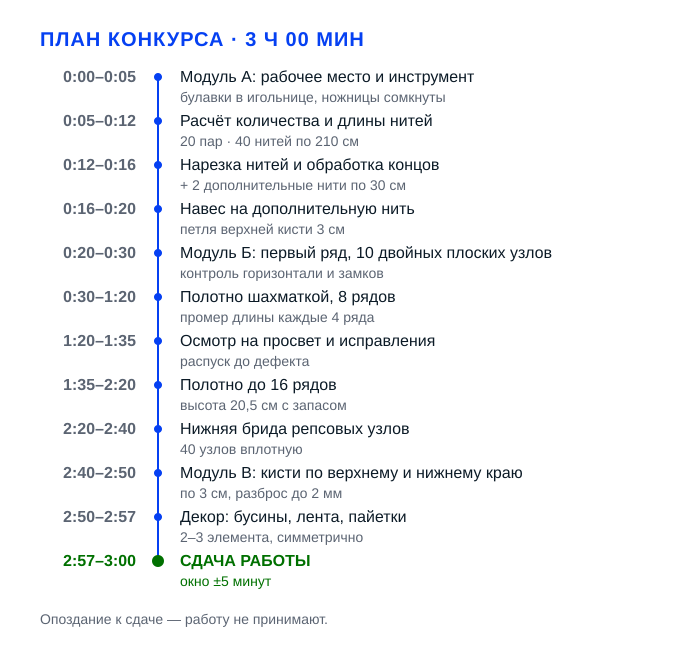
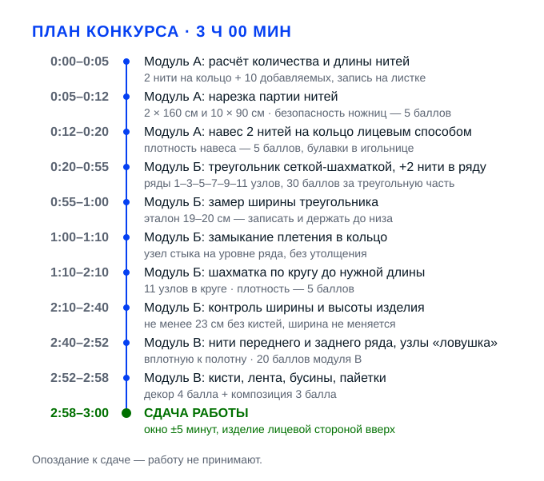
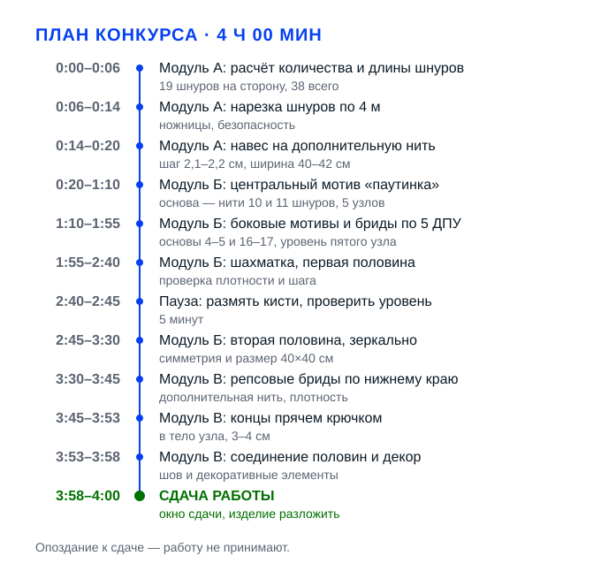

Макраме (Р)
Задания ниже — официальные файлы «Абилимпикс» (источник: abilympics-russia.ru), разложенные по категориям. Решения написаны по тексту задания, регламенту и критериям оценки; в них указано, что именно проверяет эксперт.
Школьник
14–16 лет, базовый уровень заданияВыдержка из официального конкурсного задания: страницы, относящиеся к категории «Школьник» (стр. 4–6 источника).
Пошаговое решение
Конкурсное задание категории «Школьники» — салфетка в технике макраме размером без кистей не менее двадцати на двадцать сантиметров. На всё даётся три часа: двадцать минут на расчёт и навес нитей, сто сорок минут на плетение полотна и двадцать минут на декоративное оформление. Плетётся салфетка рисунком из двух двойных плоских узлов в шахматном порядке, свободные пары по краю закрываются петельными узлами, нижний край собирается горизонтальной бридой репсовых узлов, верхняя кисть задана длиной три сантиметра. Сто баллов распределены по двадцати одному критерию, и почти все они измеримые: длину, ширину, плотность и ровность края проверяют линейкой. Поэтому решение построено по модулям — от расчёта нитей до сдачи готового изделия, — и в каждом шаге указано, что именно смотрит эксперт и где чаще всего теряются баллы.

Задача 1. Рассчитать нити, нарезать их и навесить на основуМодуль А · 30 баллов · 20 минут
Модуль А длится двадцать минут, и за это время надо посчитать сорок нитей, нарезать их нужной длины и повесить на дополнительную нить так, чтобы верхний край получился ровным, а верхняя кисть была ровно три сантиметра. Именно здесь набираются первые тридцать баллов: по пять за расчёт количества, за определение длины, за безопасность с ножницами, за сам навес, за технику узла навешивания и за плотность. Эти баллы уже не вернуть в модуле Б, поэтому расчёт делается на бумаге, а не «на глазок», и каждое действие проверяется до того, как начато следующее.
Действие 1.1. Собрать рабочее место и проверить инструмент
Шаг 1.1.1
Раскладываем подушку для плетения так, чтобы её центр был напротив груди, а не сбоку: при работе двумя руками корпус остаётся ровным, и плечи не затекают к середине модуля Б. Справа от подушки кладём ножницы с сомкнутыми лезвиями и кольцами к себе, слева — игольницу с портновскими булавками, ближе к себе — сантиметровую ленту, деревянную линейку и лист расчёта с карандашом. Мотки шнура диаметром два миллиметра ставим на край стола так, чтобы шнур разматывался наверх, а не через край столешницы.
От порядка на столе зависит темп: в модуле А всего двадцать минут, и если булавки ищутся по всей подушке, они уходят впустую. Отдельно оценивается безопасность с булавками — пять баллов, и смотрят именно на то, лежат ли они в игольнице, а не воткнуты вразброс рядом с работой. Ножницы на столе с сомкнутыми лезвиями — ещё пять баллов по тому же принципу.
Все инструменты в пределах вытянутой руки, на подушке нет ничего лишнего, булавки в игольнице, ножницы сомкнуты. Подёргайте шнур: если моток поехал или подушка сдвинулась, переставьте его, иначе первый же узел ляжет с перекосом.
Ошибка первая — плести на коленях или на самом краю стола: подушка ёрзает, натяжение всё время меняется, и навес получается разной плотности. Ошибка вторая — держать булавки рассыпанными возле локтя: при движении руки они вылетают, а это нарушение охраны труда и минус пять баллов из тридцати.
Эксперт обходит площадку в первую минуту модуля и смотрит на организацию места, а второй раз — в середине работы, когда видно, поддерживается ли порядок или всё уже смешалось.
Шаг 1.1.2
Отрезаем дополнительную нить для верхнего края длиной тридцать сантиметров и закрепляем её булавками на подушке горизонтально, натянув как струну. Расстояние между булавками — двадцать пять сантиметров: рабочая ширина полотна двадцать с половиной сантиметров плюс по два сантиметра на каждой стороне, чтобы крайние пучки не сползали с натянутой нити. Булавки втыкаем под углом примерно сорок пять градусов, до самого ушка, иначе под натяжением они вывернутся.
Дополнительная нить — это несущая основа всего полотна, и от её натяжения зависит, получится ли верхний край ровным. Критерий «Навес нитей на дополнительную нить» стоит пять баллов и проверяется по горизонтальности линии навеса: провисшая нить даёт дугу, которую потом не вытянуть никакой подрезкой. Сорок пять градусов и ушко в подушке — не формальность: вертикальная булавка вылетает от первого же рывка.
Нить натянута без провиса, проверьте пальцем по всей длине — она должна отзываться как тетива, а не прогибаться на сантиметр. Концы выровнены по линейке, булавки сидят плотно: потяните нить в сторону, и она не должна сдвинуться.
Самая частая ошибка — натянуть нить «примерно» и начать навешивать: под весом сорока нитей она провисает посередине, и ряд навеса становится дугой. Вторая — закрепить нить одной булавкой, рассчитывая на аккуратность: край под нагрузкой вырывается вместе с булавкой.
Эксперт проверяет горизонтальность несущей нити до начала навеса, потому что после него исправить уже ничего нельзя, не снимая всю работу целиком. Он подтягивает нить пальцем и смотрит на просвет между ней и подушкой: ровная линия видна сразу, а провис в полсантиметра заметен и без линейки.
Шаг 1.1.3
Проговариваем про себя правила безопасности, которые будут действовать все три часа: ножницы лежат сомкнутыми, передаём их только кольцами вперёд, булавки держим в игольнице и втыкаем в подушку, а не в одежду, в рот не берём ни булавок, ни шнура. Обрезки шнура не сбрасываем на пол — складываем в крышку от коробки, иначе они налипают на подошву и разъезжаются по всей площадке.
За безопасность с ножницами и за безопасность с булавками дают по пять баллов, то есть десять из ста, и это самые дешёвые баллы конкурса. Проверяются они не на словах, а наблюдением: эксперт смотрит, как вы кладёте ножницы после каждого среза и куда деваете булавку, вынутую из подушки. Потерянная на полу булавка — это ещё и травма соседа.
Ножницы на столе лежат сомкнутыми и не на краю, игольница закрыта или стоит устойчиво, обрезки в контейнере, а не под подушкой. Проверьте рукой поверхность подушки: торчащих булавок быть не должно, все вколоты до ушка.
Типичная ошибка — бросить ножницы открытыми лезвиями к себе, «на минутку». Вторая — вынуть булавку и положить её на стол рядом с работой: именно так булавки и попадают в кисти рук и в колени. Каждый такой случай фиксируется, а балл снимается один раз и целиком.
Наблюдение ведётся весь конкурс, но первый вывод эксперт делает уже по первым минутам: если инструмент сразу лежит правильно, дальше за этим пунктом просто следят.
Действие 1.2. Рассчитать количество и длину нитей
Шаг 1.2.1
Считаем количество нитей от ширины полотна. Салфетка без кистей должна быть не менее двадцати на двадцать сантиметров, поэтому берём ширину двадцать с половиной: полсантиметра запаса страхуют от утяжки после стирки и от неточности затяжки. Один двойной плоский узел из шнура два миллиметра занимает около двух сантиметров, значит в ряду укладывается десять узлов. Каждый узел требует четыре нити, то есть две пары, и на десять узлов нужно двадцать пар — сорок нитей. Считаем вслух и записываем на лист: двадцать пар, сорок нитей.
Критерий «Расчет количества нитей для выполнения задания» стоит пять баллов, и эксперт проверяет не только итоговую цифру, но и то, откуда она взялась. Если нитей меньше, полотно не добирает ширину и изделие автоматически не проходит по размеру — теряются ещё пять баллов за длину и общее впечатление. Если больше, край пойдёт волной и плотность уже не выровнять.
Пересчитайте цепочку в обратном порядке: сорок нитей делим на два — двадцать пар, делим на два — десять узлов, умножаем на два сантиметра — двадцать сантиметров плюс запас. Цифры должны сойтись. Записанный расчёт держите на виду: на него вы будете смотреть при каждом промере полотна.
Ошибка — считать нити «по рисунку на глаз» и навесить двенадцать пар вместо двадцати: полотно выйдет шириной двенадцать сантиметров, и это уже неисправимо, потому что добрать нити в середине работы можно только с нарушением плотности. Вторая ошибка — забыть, что пара это две нити, и нарезать вдвое меньше.
Эксперт подходит и просит показать расчёт: если на листе есть ширина, ширина узла и количество пар, вопросов нет; если расчёт только в голове, оценить правильность нечем и балл снижается.
Шаг 1.2.2
Считаем длину одной нити. Рабочий конец после складывания пополам должен быть в пять раз длиннее высоты изделия, потому что каждый двойной плоский узел съедает около двух сантиметров шнура на каждой рабочей нити: двадцать сантиметров умножаем на пять и получаем сто сантиметров. Нить складывается пополам, значит нарезаемая длина — двести сантиметров, плюс шесть сантиметров на петлю верхней кисти высотой три сантиметра, плюс четыре сантиметра запаса на подрезку. Итого нарезаем нити по двести десять сантиметров.
Критерий «Определение длины нитей» тоже стоит пять баллов, и цена ошибки здесь выше, чем кажется: короткая нить закончится на двенадцатом ряду, а добрать её незаметно нельзя — узел наращивания виден и снижает чистоту работы. Длинная нить путается, цепляется за соседние и заставляет то и дело распутывать, а время модуля Б рассчитано поминутно.
Проверьте арифметику двумя способами: через высоту изделия, как выше, и через общий метраж — сорок нитей по два и одна десятая метра дают восемьдесят четыре метра шнура, то есть четыре мотка по двадцать метров с небольшим остатком. Если ваш итог отличается от этого метража в разы, где-то потерян множитель.
Классическая ошибка — нарезать нити по двадцать сантиметров, то есть по длине готового изделия: работа встанет на втором ряду. Вторая — взять «с большим запасом» по три метра: лишний метр на каждой нити даёт сорок метров путаницы, и вы потеряете больше времени на распутывание, чем сэкономили шнура.
Эксперт смотрит на лист расчёта и на нарезанные нити рядом: совпадение расчётной длины с фактической — прямой признак того, что участник понимает технологию, а не повторяет заученное.
Шаг 1.2.3
Считаем дополнительные нити — их две, верхняя и нижняя, по тридцать сантиметров каждая. Верхняя уже закреплена на подушке, нижнюю откладываем отдельно, чтобы не перепутать с рабочими: на неё потом ляжет горизонтальная брида репсовых узлов, и её длина должна перекрывать рабочую ширину двадцать с половиной сантиметров с запасом по четыре с лишним сантиметра на закрепление. Сюда же добавляем нить для подвязки бусин и ленту, если они пойдут в декор.
Эти две нити не входят в счёт сорока рабочих, и если их не посчитать заранее, в модуле Б придётся резать нить посреди работы, а в модуле В — искать, чем закончить край. Горизонтальная брида и навес — это два отдельных критерия по пять баллов, и оба опираются на заранее подготовленную основу.
Отложите дополнительные нити в отдельную ячейку или приколите бумажкой с надписью: верхняя уже на подушке, нижняя лежит сбоку. Проверьте, что обе не короче двадцати восьми сантиметров по линейке — короткая не дотянется до края и брида оборвётся.
Ошибка — нарезать нижнюю нить ровно по ширине полотна: её нечем закрепить, крайние нити соберутся в гармошку, и брида пойдёт волной. Вторая — использовать для нижней нити обрезок рабочей нити: он тоньше, натяжение получится другим, и узлы по краям будут слабеть.
Эксперт обращает внимание на то, подготовлены ли дополнительные нити до начала плетения: если в конце модуля Б участник ищет шнур подходящей длины, критерий за бриду уже под вопросом.
Шаг 1.2.4
Прежде чем резать все сорок нитей, вяжем контрольный узел на обрезке длиной тридцать сантиметров: складываем пополам, навешиваем на булавку и провязываем один двойной плоский узел. Замеряем, сколько шнура ушло на узел и какую ширину он дал. Если узел вышел шире двух сантиметров, узлов в ряду будет меньше, и расчёт придётся поправить до нарезки, а не после.
Контрольный узел — это дешёвая страховка от самой дорогой ошибки модуля А. Плотность вашего плетения может отличаться от средней: у кого-то узел затянут туже и занимает полтора сантиметра, у кого-то слабее и занимает два с половиной. Один пробный узел за минуту показывает, в какую сторону вам лично нужно поправить количество пар.
Ширина контрольного узла измерена линейкой, расход шнура записан. Сверьте с расчётом: если узел даёт два сантиметра, план в двадцать пар остаётся; если полтора — добавьте две пары, чтобы выйти на двадцать с половиной сантиметров.
Ошибка — пропустить пробный узел, потому что время поджимает: именно на нём экономят и именно из-за него переделывают весь навес. Вторая — вязать контрольный узел из другой нити, не из той, что пойдёт в работу: другой моток может быть чуть толще, и замер не совпадёт.
Эксперт видит на листе расчёта не только цифры, но и результат проверки: у грамотного участника ширина узла замерена и количество пар обосновано. Такой участник отвечает на вопрос «почему именно двадцать пар» без паузы, и это отдельно отмечается в графе расчёта.
Действие 1.3. Нарезать нити и обработать концы
Шаг 1.3.1
Отмеряем длину на сантиметровой ленте, закреплённой на столе: отмечаем двести десять сантиметров булавкой или кусочком малярной ленты и дальше отмеряем не каждую нить отдельно, а пакетом. Разматываем шнур, укладываем его змейкой от метки до метки, следим, чтобы витки не перекрещивались, и режем сразу пять нитей, придерживая пакет ладонью. Пять — это предел: больше не удержать ровно, и срез уйдёт по косой.
Нарезка пакетом экономит минут восемь из двадцати, и это существенно, потому что оставшееся время нужно на навес. Ровный срез под девяносто градусов важен не из эстетики: косой срез даёт разную длину по волокнам, кончик осыпается, и на кистях потом видна ступенька. Кроме того, аккуратная работа с ножницами — это тот же критерий безопасности на пять баллов: резким движением на себя легко задеть соседа.
Проверьте три вещи: все нити одного цвета и толщины, концы ровные, пакеты не перепутаны. Пять нитей из нарезанных промерьте лентой — разброс больше сантиметра означает, что пакет съехал при нарезке. Срез должен идти строго поперёк нити: косой виден по тому, как кончик расходится на отдельные волокна.
Ошибка — отмерять каждую нить отдельно, растягивая шнур: шнур тянется, и «двести десять» превращаются в двести двадцать пять после того, как он отлежится. Вторая — резать сразу весь моток, сложенный в десять слоёв: нижние нити выходят короче верхних на два-три сантиметра.
Эксперт смотрит на разброс длины: ровные нити в руках — признак того, что навес получится с одинаковой плотностью, а это отдельные пять баллов. Он может попросить промерить три нити наугад, поэтому заготовки держите рассортированными по десяткам, а не сваленными в общую кучу.
Шаг 1.3.2
Пересчитываем нити дважды: сначала раскладываем их десятками и считаем десятки, потом пересчитываем парами, складывая пополам. Сорок рабочих нитей плюс две дополнительные по тридцать сантиметров — итого сорок две заготовки. Сосчитанное укладываем в отдельную коробку или на сложенное полотенце, чтобы нити не уползли со стола во время навеса. Пересчёт занимает меньше минуты и делается до навеса, иначе исправлять придётся уже висящие нити, а это сбивает шаг пучков.
Критерий за количество проверяется именно на этом этапе: эксперт может попросить показать заготовки, и недобор в две-три нити виден сразу. Пересчёт десятками быстрее и надёжнее, чем попарный, потому что пара визуально сливается с соседней, а десяток видно как пучок. Второй счёт нужен для контроля, а не для красоты.
Сошлось сорок два: сорок по двести десять сантиметров и две по тридцать. Если получилось тридцать восемь или сорок четыре — не начинайте навес, найдите ошибку: скорее всего один пакет посчитан дважды или один остался в стороне.
Частая ошибка — считать «по ходу навеса», то есть навешивать и одновременно откладывать: в середине счёт сбивается, и выясняется это на последнем пучке, когда переделывать уже некогда. Вторая — держать заготовки просто на столе: они путаются с обрезками и часть уходит в мусор.
Эксперт может пересчитать заготовки вместе с участником; спокойный и точный ответ на такой вопрос работает в пользу участника, потому что показывает, что работа ведётся по плану, а не по наитию.
Шаг 1.3.3
Обрабатываем концы: если шнур синтетический, аккуратно оплавляем срез зажигалкой, держа нить под углом и не касаясь пламенем пальцев; если хлопковый или льняной — делаем срез по косой и проклеиваем кончик прозрачным клеем или лаком для ногтей. Обрезки складываем в крышку от коробки, а не на пол. Ножницы после работы сразу кладём сомкнутыми на место, кольцами от себя.
Осыпающиеся концы — это и чистота работы, и внешний вид кистей, за которые в модуле В дают десять баллов. Оплавленный или проклеенный кончик не махрится, легче проходит в узел и не цепляется за соседние нити в шахматке. Порядок с обрезками — прямой критерий безопасности с ножницами на пять баллов, который проверяется визуально.
Проведите нитью между пальцами: она должна быть гладкой, без торчащих волокон. Кончики не липнут друг к другу, если клей высох. Под подушкой и на полу обрезков нет, а сами нити не потеряли длину после обработки — оплавление не должно съедать больше двух миллиметров.
Ошибка — оплавлять сразу весь пакет: шнур схватывается в комок, и половина нитей идёт в брак. Вторая — оставить обрезки на подушке: они набиваются в плетение, и потом их вынимают пинцетом, теряя время и чистоту работы.
Эксперт осматривает концы при проверке навеса: оплавленные и проклеенные концы показывают, что участник понимает, из чего плетёт. Отдельно отмечается, убраны ли обрезки со стола и с пола: чистое место входит в общее впечатление от работы.
Действие 1.4. Навесить нити на дополнительную нить
Шаг 1.4.1
Навешиваем пучками по две нити. Складываем обе нити пополам, но не выравниваем концы вплотную: петля должна остаться над несущей нитью высотой три сантиметра — это будущая верхняя кисть. Петлю кладём сверху на дополнительную нить, оба конца заводим под неё, перекрещиваем и пропускаем снизу вверх в собственную петлю, затем подтягиваем узел к несущей нити. Пучки ставим через два сантиметра, ровно по ширине будущего узла: двадцать пучков уложатся в двадцать с половиной сантиметров.
Техника узла навешивания — пять баллов, плотность навеса — ещё пять, и оба критерия проверяются именно здесь. Петля в три сантиметра задана в задании буквально, поэтому её высота — не вкусовое решение, а требование: в модуле В из этих петель получится ровный верхний край кистей. Шаг в два сантиметра нужен, чтобы двойные плоские узлы первого ряда встали без зазоров.
Все петли одной высоты, проверяйте линейкой каждые пять пучков: три сантиметра плюс-минус два миллиметра. Узлы затянуты до упора, не болтаются на несущей нити. Между пучками одинаковые промежутки, несущая нить не провисла под весом.
Ошибка — навешивать нити по одной, а не пучками по две: узлы получатся разной плотности, и первый ряд пойдёт волной. Вторая — затянуть петлю так, что она исчезнет: верхней кисти не будет вовсе, и в модуле В останется только подрезать короткие огрызки, теряя десять баллов.
Эксперт подходит смотреть навес целиком, а не выборочно: важна линия петель, одинаковый шаг и то, как затянуты узлы. Он сравнит высоту двух-трёх петель линейкой, поэтому соседние петли должны совпадать даже на глаз с расстояния метра.
Шаг 1.4.2
Затягиваем каждый узел отдельно, двумя руками: одной держим концы, другой подтягиваем узел вверх к несущей нити, пока он не встанет вплотную. Затяжку делаем сразу после навеса, не откладывая на потом — подсохший или отлежавшийся узел затягивается хуже и ложится неровно. Пучки выравниваем по линейке, приложенной параллельно несущей нити. Слабый узел виден по просвету между ним и несущей нитью — такой пучок подтягиваем сразу, иначе он просядет под весом полотна через десяток рядов.
Плотность плетения узла навешивания — отдельные пять баллов, и она определяет, будет ли верхний край полотна ровным. Слабый узел даёт зазор, из-за которого первый ряд двойных плоских узлов встанет на полсантиметра ниже, и верхняя брида соберётся в складку. Ровный шаг пучков нужен ещё и потому, что от него зависит шахматка: сдвиг на пару миллиметров виден к пятому ряду.
Проведите пальцем по линии узлов: она должна быть ровной, без бугров и провалов. Потяните любой пучок вниз — узел не должен съезжать по несущей нити. Расстояние между пучками одинаковое, проверьте пять промежутков подряд.
Ошибка — затягивать узлы после того, как навешены все двадцать: крайние уже разъехались, и выравнивать приходится с перекосом. Вторая — тянуть за одну нить вместо двух: узел перекашивается набок, и петля кисти ложится косо.
Эксперт смотрит на навес с расстояния вытянутой руки: если линия читается как прямая, плотность признаётся ровной. Он же проверяет несущую нить между узлами на просвет: блестящие промежутки означают недотянутые пучки.
Шаг 1.4.3
Проверяем весь ряд целиком. Считаем петли сверху: их должно быть двадцать. Считаем концы снизу: их сорок. Меряем ширину ряда от первого до последнего пучка — двадцать с половиной сантиметров. Смотрим на несущую нить: она не провисла, концы булавок на месте. Если ряд короче на сантиметр, шаг пучков был меньше двух сантиметров, и это лучше исправить сейчас.
Это последняя проверка перед модулем Б, и она закрывает сразу три критерия модуля А: количество нитей, навес и плотность. Ошибку в ширине здесь ещё можно исправить перевесом двух-трёх крайних пучков, а после первого ряда двойных плоских узлов исправление будет стоить десяти минут и неровного края.
Двадцать петель, сорок концов, ширина двадцать с половиной сантиметров, линия навеса горизонтальна. Сфотографируйте ряд на телефон, если разрешено: на фото перекос виден лучше, чем вблизи. Сверьте ширину с расчётом на листе: расхождение больше сантиметра — повод перевесить крайние пучки, пока полотно не начато.
Ошибка — не пересчитывать петли и обнаружить недобор в конце первого ряда полотна: ровно на этом месте появляется дыра, которую видно на просвет. Вторая — оставить провис несущей нити, решив, что «натянется само»: не натянется, вес сорока нитей только увеличит провис.
Эксперт проверяет ряд навеса до старта модуля Б и фиксирует ширину: дальше она только уменьшится от утяжки. Он же замеряет высоту верхней кисти и сверяет её с заданными тремя сантиметрами, потому что это требование задания, а не пожелание.
Шаг 1.4.4
Если при проверке обнаружился перекос или разная высота петель, снимаем два-три пучка и навешиваем заново. Снимать нужно именно крайние пучки со стороны перекоса, а не середину: середина держит натяжение, и после её перевеса ряд поведёт в другую сторону. Петельку распускаем, нить расправляем и навешиваем снова, контролируя высоту линейкой. На два пучка уходит не больше минуты.
Перевес — нормальная часть работы, и он не считается браком, если сделан до начала полотна. Пять баллов за навес и пять за плотность стоят того, чтобы потратить минуту: перекошенный ряд невозможно выровнять в процессе, он останется в изделии навсегда и будет виден в самом выигрышном для эксперта ракурсе — сверху.
После перевеса ряд снова ровный: двадцать петель, одинаковая высота, ровный шаг. Проверьте, что снятые нити не распушились и не потеряли длину — если конец растрёпан, подрежьте его и оплавьте заново. Несущая нить после перевеса должна остаться натянутой: ослабшие булавки подтяните, иначе ряд начнёт провисать уже во втором ряду полотна.
Ошибка — пытаться выровнять перекошенный ряд, подтягивая петли за концы: несущая нить растягивается в одном месте и собирается в другом, перекос только меняет знак. Вторая — снять пучок и навесить его с той же ошибкой, не замерив высоту линейкой.
Эксперт оценивает конечное состояние ряда, поэтому спокойный перевес в начале выглядит лучше, чем ровная попытка «оставить как есть». Важно и то, что участник переделывает сразу, а не через десять минут плетения, когда перекос уже врос в полотно.
Задача 2. Сплести основное полотно шахматкой из двойных плоских узловМодуль Б · 30 баллов · 140 минут
Сто сорок минут модуля Б уходят на одно: на полотно из десяти двойных плоских узлов в ряду, уложенных в шахматном порядке. Здесь набирается тридцать баллов — за технику узла, за выполнение основного узора, за его плотность, за чистоту работы, за длину изделия не менее двадцати сантиметров и за безопасность с портновскими булавками. Полотно растёт сверху вниз, и каждая ошибка в затяжке остаётся в нём навсегда, поэтому темп важнее скорости: восемь рядов в час дают к концу модуля двадцать с лишним сантиметров без спешки.
Действие 2.1. Провязать первый ряд двойных плоских узлов
Шаг 2.1.1
Берём первые четыре нити слева. Две средние натягиваем вертикально и придерживаем — это основа, она не участвует в узле, а только держит его. Крайнюю правую из четвёрки делаем рабочей: укладываем её поперёк основы слева направо, сначала поверх обеих нитей основы, потом под ними, и выводим конец в петлю наверх, подтягиваем — это правый петельный узел. Затем той же рабочей нитью идём зеркально: под основу, поверх, в петлю и вверх. Оба узла подтягиваем к несущей нити до упора, пока перекладины не лягут вплотную друг к другу.
Техника выполнения двойного плоского узла — это пять баллов, и проверяются они по перекладинам: у правильно связанного узла две перекладины идут параллельно, а «замок» из вертикальных протяжек стоит с одной стороны. Если узел связан зеркально, полотно пойдёт с «ёлочкой» и узор перестанет читаться, а это уже потеря пяти баллов за выполнение основного узора.
Посмотрите на узел сверху: перекладины параллельны, основа не видна между ними, узел плотный и не «гуляет» при покачивании пальцем. Потяните за основу — узел должен остаться на месте, а не сползти вниз по нитям.
Самая частая ошибка — вязать второй полуузел не в ту сторону, «как удобнее руке»: тогда вместо плоского узла получается перекрученный, полотно стягивается в жгут, и ряд не дотягивает до нужной ширины. Вторая — тянуть за рабочие концы по отдельности и оставлять узел рыхлым: он расползётся через два ряда.
Эксперт смотрит на первые узлы особенно внимательно: именно по ним видно, владеет ли участник техникой, и дальше он проверяет уже весь ряд на однородность.
Шаг 2.1.2
Провязываем весь ряд слева направо: десять двойных плоских узлов подряд, каждый на следующих четырёх нитях. Между узлами не должно быть зазоров, иначе ширина полотна уйдёт и на месте стыка появится дыра. Чтобы ряд не «поехал» вниз, натягиваем поперёк подушки вспомогательную нить-причалку и прикалываем её булавками на нужной высоте: каждый узел подтягиваем к этой линии, а не к соседнему.
Основной узор — пять баллов, и складывается он именно из ровных рядов. Причалка заменяет глазомер: расстояние до неё видно при каждой затяжке, поэтому ряд получается горизонтальным даже у того, кто плетёт первый раз. Без причалки ряд уходит вниз слева направо на сантиметр-полтора — это заметно уже на четвёртом ряду.
Поставьте линейку вдоль ряда: все десять узлов должны стоять на одной линии, расхождение не больше двух миллиметров. Ширина ряда от левого края до правого — двадцать с половиной сантиметров, промерьте лентой прямо по узлам.
Ошибка — плести ряд «как получится» и надеяться выровнять следующими: полотно тянется за первым рядом, и перекос только растёт. Вторая — не докручивать правый край: последний узел висит ниже остальных, и правая кромка идёт лесенкой.
Эксперт проверяет первый ряд на горизонтальность и на однородность затяжки: разная сила натяжения в начале и в конце читается как полоса. Отдельно он смотрит стык первого и второго узла: именно там чаще всего расходится зазор.
Шаг 2.1.3
Проверяем, что «замки» всех десяти узлов смотрят в одну сторону: у правильно сплетённого ряда они либо все сверху, либо все снизу, но не вперемешку. Разворачиваем полотно к свету и смотрим вдоль ряда — перекладины должны сливаться в две параллельные линии. Если один узел выбивается, его распускаем и вяжем заново, пока ряд короткий и это стоит минуты.
Выполнение основного узора и чистота работы — по пять баллов, и оба критерия смотрятся именно на однородности ряда. Перевёрнутый узел даёт на полотне точку, которая притягивает взгляд и разрушает рисунок, хотя формально это всё ещё двойной плоский узел. Исправить его потом, через десять рядов, невозможно: придётся распускать полотно до этого места.
Две параллельные линии перекладин читаются по всей длине ряда, узлы одинаковой высоты, основа между ними не просвечивает. Промежутки между узлами одинаковые — проверьте три-четыре подряд на глаз с расстояния вытянутой руки.
Ошибка — оставить один узел «незаметным», решив, что при отделке спрячется: кистями и лентами закрывают край, а не середину полотна, и точка останется на видном месте. Вторая — перетянуть узел так, что основа сходится в точку: соседние нити оголяются.
Эксперт проводит рукой по первому ряду: однородность затяжки он чувствует пальцами раньше, чем видит глазами. Если ряд однороден, он почти не возвращается к полотну и переносит внимание на кромки.
Действие 2.2. Плести полотно в шахматном порядке
Шаг 2.2.1
Второй ряд начинаем со сдвигом: первые две нити слева оставляем свободными, а первый узел вяжем на третьей-шестой нитях, то есть на стыке первого и второго узлов предыдущего ряда. Дальше идём так же: узел встаёт под промежутком между двумя узлами верхнего ряда, и в ряду получается девять узлов вместо десяти. Свободные крайние пары пока просто висят — их мы оформим петельными узлами.
Рисунок из двух двойных плоских узлов, расположенных в шахматном порядке, — это и есть условие задания, за него дают пять баллов, и сдвиг на одну пару обязателен. Если вязать узел под узлом, получится не сетка, а столбики: полотно выйдет жёстким, край пойдёт волной, и узор не будет соответствовать технической карте.
Узлы второго ряда должны стоять точно в промежутках первого: проверьте, что каждый нижний узел делит пополам расстояние между двумя верхними. Крайние свободные пары одинаковой длины с обеих сторон. Сдвиг проверяйте по третьей нити слева: она должна остаться свободной.
Ошибка — сдвинуть ряд на две нити вместо одной: шахматка сбивается, узлы наползают друг на друга и полотно стягивается. Вторая — забыть про свободные крайние пары и ввязать их в узор: тогда край полотна получится рваным, а кромка не выйдет ровной.
Эксперт проверяет шахматку по диагонали: узлы должны выстраиваться в наклонные линии, и это видно с расстояния двух метров. Нарушение шахматки видно сразу, потому что рисунок перестаёт повторяться через ряд.
Шаг 2.2.2
Дальше ряды просто чередуются: чётные — десять узлов от левого края, нечётные — девять со сдвигом на пару. Чтобы не сбиться, ведём счёт вслух или ставим булавку сбоку подушки после каждого четвёртого ряда и записываем число на листе. Считать ряды нужно потому, что длина изделия задана в сантиметрах, а не в рядах, и пересчёт «ряд в сантиметры» делается по факту.
Сбитый счёт — самая обидная потеря времени в модуле Б: полотно приходится промерять заново, а иногда и распускать, чтобы понять, где потерян ряд. Ровное чередование важно и для плотности: если два ряда подряд связать без сдвига, на этом месте появится утолщение, которое не разгладится.
Чередование читается по краю: слева и справа ряды выступают попеременно на одну пару. Булавки-метки стоят через каждые четыре ряда, число рядов в листе совпадает с числом на подушке. Если числа расходятся, доверяйте записи и пересчитайте ряды по кромке.
Ошибка — считать «на память», увлекаясь работой: через полчаса счёт теряется, и участник начинает гадать, шестнадцать рядов уже или четырнадцать. Вторая — делать метки булавками, вколотыми в само полотно: остаются растянутые дырочки, которые видны на готовой салфетке.
Эксперт может спросить, сколько рядов связано и какая это высота; чёткий ответ по записи показывает, что участник управляет процессом. Записи он не требует, но по ответу видно, ведётся ли счёт вообще.
Шаг 2.2.3
Каждый узел затягиваем до упора, двумя руками, сразу после провязывания: сначала подтягиваем перекладины к основе, потом саму основу к предыдущему ряду. Полотно должно получаться таким, чтобы между рядами не было просвета: расстояние между линиями узлов — около одного сантиметра трёх миллиметров, тогда шестнадцать рядов дают двадцать с лишним сантиметров высоты.
Плотность плетения основного узора — пять баллов, и это самый невосстановимый критерий: рыхлое полотно не даст нужной длины, а перетянутое соберётся в гармошку и не даст ширины. Ровная плотность нужна ещё и потому, что по ней считается длина изделия: при затяжке «как получится» ряд может дать и восемь миллиметров, и восемнадцать.
Приложите линейку поперёк: восемь рядов должны дать около десяти с половиной сантиметров. Полотно на просвет не должно показывать дыр между узлами, а на ощупь быть плотным, как ткань, а не как решётка.
Ошибка — затягивать узел после того, как связан весь ряд: основа уже растянута соседями, и узел встанет с перекосом. Вторая — тянуть изо всех сил, «чтобы плотно»: полотно сужается книзу, и край идёт дугой внутрь.
Эксперт измеряет плотность линейкой на двух участках полотна — сверху и снизу, и сравнивает: разница больше двух миллиметров на ряд считается неравномерной затяжкой.
Шаг 2.2.4
Свободные крайние пары по краю салфетки провязываем левым и правым петельным узлом: крайнюю нить натягиваем как основу вдоль края, а соседнюю ею же обвиваем — слева правым петельным, справа левым, зеркально. Узел подтягиваем к самому полотну, чтобы кромка получилась ровной линией без ступенек. Так проходим каждый ряд с обеих сторон. Нижний конец кромочной нити уходит в плетение, а не висит петлёй сбоку.
Кромка — то, что эксперт видит первым, и в критерии чистоты работы она играет главную роль. Петельные узлы закрепляют крайние нити и не дают полотну разъезжаться в ширину, поэтому без них салфетка «поплывёт» уже к десятому ряду. Ровный край нужен и для того, чтобы в модуле В кисти легли по одной линии.
Кромка ровная, узлы стоят вплотную к полотну, нити не выпирают петлями. Проведите пальцем по краю сверху вниз — ступенек и провалов быть не должно, край идёт как натянутая струна. Ширина полотна на уровне каждого ряда одинаковая — это и есть работа кромки.
Ошибка — вязать петельный узел только с одной стороны, потому что «справа неудобно»: правая кромка пойдёт волной, и разница будет видна при симметричном осмотре. Вторая — затягивать кромочный узел слабее рядового: край начнёт отходить от полотна, образуя щель.
Эксперт осматривает обе кромки по всей длине и сравнивает их между собой: асимметрия края — типичная потеря баллов на этой компетенции. Разница между левой и правой кромкой — его первый вопрос участнику.
Шаг 2.2.5
Меряем длину каждые четыре ряда, прикладывая ленту от линии навеса до последнего ряда. План простой: шестнадцать рядов по одному сантиметру три миллиметра дают двадцать с половиной сантиметров — с запасом к требованию «не менее двадцати». Если после восьми рядов высота меньше десяти сантиметров, затяжку надо усилить, и это делается сразу, а не в конце.
Критерий «Длина изделия не менее 20 см» стоит пять баллов, и проверяется он линейкой, а не на глаз. Добрать длину в конце нечем: надвязывать нити в полотне нельзя без следа, а распускать половину работы на последних минутах — верный способ сдать салфетку меньше нормы. Промер по ходу даёт возможность исправить темп затяжки без потерь.
После восьми рядов — около десяти с половиной сантиметров, после двенадцати — пятнадцать с половиной. Расхождение больше сантиметра означает, что ряды плотнее или реже плана; в первом случае добавьте два ряда сверх шестнадцати.
Ошибка — не мерить вовсе и обнаружить на сдаче девятнадцать сантиметров: это минус пять баллов и общее впечатление. Вторая — мерить по диагонали или по неровно лежащему полотну: замер получится на сантиметр больше реального, и решение «ещё пару рядов» окажется ошибочным.
Эксперт замеряет изделие своей лентой от края до края без кистей, поэтому ваш замер должен совпадать с его замером, а не быть удобнее. Замер он делает по расправленному полотну, не растягивая его за края.
Шаг 2.2.6
Раскладываем темп по времени: сто сорок минут на шестнадцать рядов — это восемь-девять минут на ряд, то есть меньше минуты на узел. Первые три ряда идут медленнее, минут по двенадцать, зато потом руки находят ритм и ряд уходит за семь. Раз в полчаса делаем двухминутную паузу: расправляем плечи и разминаем пальцы, иначе к концу модуля затяжка становится слабее.
Темп — это не про скорость ради скорости, а про то, что после модуля Б остаются двадцать минут модуля В, и переносить туда плетение нельзя. Участники, которые бросаются плести быстрее в середине, теряют плотность: узел за узлом идут недотянутые, и полотно приходится распускать — на это уходит втрое больше времени, чем экономится.
К середине модуля связано не меньше восьми рядов, за сорок минут до конца — не меньше четырнадцати. Сверяйтесь с часами на площадке и с записью в листе: если отстаёте на два ряда, сократите паузы, но не затяжку.
Ошибка — гнать в ущерб плотности: полотно получается рыхлым, и его приходится переделывать, а время уже ушло. Вторая — работать без пауз до потемнения в глазах: к концу модуля руки устают, узлы становятся слабее, и разница между верхом и низом изделия видна.
Эксперт наблюдает за темпом по ходу конкурса и отмечает, укладывается ли участник в контрольные точки; на сдачу это влияет прямо. Отставание на два ряда к середине модуля — уже повод спросить о плане.
Действие 2.3. Контролировать полотно и исправлять ошибки по ходу
Шаг 2.3.1
Каждые четыре ряда откладываем работу и смотрим на неё с расстояния вытянутой руки, а потом на просвет против окна. Ищем три вещи: ушла ли ширина, есть ли перекос в сторону и не появились ли дыры на стыках. Отмечаем булавкой место, где сомневаетесь, и возвращаемся к нему после следующего ряда — часто вопрос снимается сам. Если полотно повело, сразу подтяните фиксацию, а не ждите следующего осмотра.
Осмотр на просвет — единственный способ увидеть недотянутые узлы: на подушке при боковом свете полотно выглядит ровным, а против света сразу видны светлые пятна. Чистота работы и плотность — по пять баллов каждая, и обе теряются именно на незамеченных дефектах, которые потом не исправить.
Ширина на всём протяжении одинаковая — отклонение не больше трёх миллиметров. Полотно не закручивается в трубу и не расходится веером. Дыр на просвет нет, перекладины во всех рядах параллельны. Отметьте замер на листе, чтобы было с чем сравнивать через четыре ряда.
Ошибка — осматривать работу, держа её на весу: под собственным весом полотно вытягивается и кажется ровным. Вторая — пропускать осмотр, потому что «и так видно»: перекос в три миллиметра на третьем ряду превращается в сантиметр к десятому.
Эксперт делает собственный осмотр в середине модуля, и его замечания совпадают с тем, что участник должен был увидеть сам. На его осмотре дефекты видны на просвет, поэтому проверяйте работу так же.
Шаг 2.3.2
Если нашли ошибку — недотянутый узел, перевёрнутый «замок», лишний узел не в шахматке — распускаем строго до места ошибки. Работаем тупой спицей или крючком: вводим инструмент под перекладину, приподнимаем её и стягиваем нить, возвращая её в исходное положение. Распускаем по одному узлу, придерживая полотно выше, чтобы не вытянуть соседние. После распуска полотно расправляют на подушке и снова фиксируют булавками.
Умение исправлять без следов входит в чистоту работы, а аккуратный распуск сохраняет плотность остального полотна. Распускать до конца не нужно: достаточно дойти до дефекта, и это минута-две. Если тянуть сразу за несколько узлов, нить вытягивается и лохматится, а на её месте остаётся рыхлый участок, который уже не сравняется с остальным.
После исправления узел стоит на месте, плотность соседних не изменилась, на нити нет «заломов» и распушённых волокон. Проверьте пальцем: исправленный участок не должен отличаться от соседних на ощупь.
Ошибка — распускать рывком, потянув за конец: нить идёт волной, и на полотне остаётся след, который видно с изнанки. Вторая — исправлять, не сняв булавки фиксации: полотно смещается, и вместо одного узла приходится переделывать ряд.
Эксперт смотрит на изнанку изделия: следы распуска видны там, где с лица ничего не заметно. Он смотрит, не осталось ли на нити утолщений от многократного перевязывания: такие места заметны на просвет и снижают оценку за чистоту.
Шаг 2.3.3
Держим рабочее место в чистоте: обрезки сразу в контейнер, кончики нитей не обрезаем «под корень» у самого узла, а оставляем по два сантиметра, чтобы спрятать их в плетение крючком в конце. Пыль и ворс с подушки смахиваем мягкой щёткой, готовое полотно не комкаем, а расправляем на столе лицевой стороной вверх. Готовое полотно накрываем чистым полотенцем, если нужно освободить стол.
Чистота работы — два раза по пять баллов, в модуле Б и в модуле В, и это самый простой способ их получить и потерять. Обрезанный под корень кончик вылезает из узла при первой же носке, а полотно, скомканное в коробку, приходит на оценку мятым, и разгладить его за минуту до сдачи не выйдет.
На полотне нет торчащих кончиков, ворса и следов пальцев; пятен от шнура нет. Рабочая поверхность чистая, контейнер с обрезками закрыт, ножницы на месте и сомкнуты. Проверьте изнанку: там кончики видны лучше, чем с лица, и убрать их проще сразу.
Ошибка — обрезать кончики вровень с узлом, чтобы «было аккуратно»: они выбиваются, и полотно начинает распускаться по краю. Вторая — складывать работу вчетверо, освобождая место: заломы на макраме не распрямляются полностью даже после отпаривания.
Эксперт осматривает и лицо, и изнанку, ищет кончики, ворс и заломы: именно по ним судят о чистоте работы. Он может попросить показать изнанку: по ней видно, прятались ли концы или их просто обрезали.
Шаг 2.3.4
Булавки используем только для фиксации полотна на подушке: прикалываем крайние узлы каждого четвёртого ряда, чтобы полотно не съезжало вниз под весом нитей. Вкалываем под углом, до ушка, в свободные от плетения места; вынутую булавку сразу возвращаем в игольницу. В одежду, в рот и в полотно между нитями булавки не втыкаем. Считайте булавки: сколько вынули из полотна, столько должно лежать в игольнице.
Безопасность с портновскими булавками — пять баллов, и это единственный критерий, который снимается мгновенно и без обсуждения. Фиксация булавками нужна и технологически: свободное полотно тянется вниз, и ряды получаются разной высоты. Правильно вколотая булавка держит край и не деформирует узел, вколотая в узел — растягивает его.
Полотно зафиксировано в четырёх-пяти точках, булавки держат, а не болтаются, все они вколоты до ушка под углом. В подушке нет свободно торчащих булавок, на столе — тоже. Проверьте пальцем кромку подушки: торчащих остриёв быть не должно нигде.
Ошибка — прикалывать полотно за самые крайние нити: они вытягиваются, и кромка получается волнистой. Вторая — оставлять булавку в полотне и плести вокруг неё: узел встанет с перекосом, а на месте прокола останется дырочка.
Эксперт следит за булавками весь модуль, и одно замечание по технике безопасности стоит дороже, чем весь ряд узлов. Он также отмечает, не прикалывает ли участник полотно к собственной одежде.
Задача 3. Закрыть нижний край горизонтальной бридой репсовых узловМодуль Б · 20 баллов · около 25 минут
Полотно готово, но изделием оно ещё не стало: нижний край держится на честном слове, и сорок свободных концов висят бахромой разной длины. Последние двадцать пять минут модуля Б уходят на то, чтобы провязать эти концы репсовыми узлами на дополнительную нить — получится горизонтальная брида, которая собирает полотно, задаёт ему нижнюю границу и держит кисти ровной линией. Здесь оценивают саму бриду, технику репсового узла, его плотность и чистоту, по пять баллов за каждый пункт.
Действие 3.1. Подготовить нижнюю дополнительную нить и концы
Шаг 3.1.1
Отрезаем вторую дополнительную нить — тридцать сантиметров, как считали в модуле А, — и натягиваем её горизонтально под последним рядом полотна, отступив вниз два-три миллиметра. Прикалываем булавками по краям, отступив от первого и последнего пучка по четыре сантиметра, и натягиваем так же туго, как верхнюю несущую: провисшая основа даст дугу бриды, которую потом не выправить. Концы нити закрепляем петлёй на булавке, чтобы они не выскользнули при натяжении.
От расстояния до полотна зависит, насколько плотно брида прижмётся к плетению: два-три миллиметра — это ровно тот зазор, при котором узлы встанут вплотную к последнему ряду, но не сомнут его. Критерий «Выполнение горизонтальной бриды репсовых узлов на дополнительную нить» стоит пять баллов, и первое, что смотрят, — горизонтальность и плотность прилегания бриды к полотну.
Нить натянута как струна, расстояние до последнего ряда везде одинаковое — проверьте линейкой слева, в середине и справа. Булавки держат, концы не разматываются. Полотно под бридой не стянуто. Проверьте зазор в трёх точках — он должен быть одинаковым.
Ошибка — натянуть нить слабее верхней: под весом сорока концов она провиснет, и брида пойдёт коромыслом. Вторая — отступить от полотна на сантиметр «чтобы удобнее вязать»: между бридой и плетением останется щель, и это читается как незаконченная работа.
Эксперт проверяет положение бриды относительно полотна и её натяжение до того, как участник начнёт вязать: исправлять после провязывания придётся всё.
Шаг 3.1.2
Разбираем сорок концов на два слоя: те, что выходят из лицевой стороны последнего ряда, отводим вперёд, те, что из изнаночной, — назад. Расчёсываем каждый слой гребнем с редкими зубьями, чтобы нити не цеплялись друг за друга, и укладываем по порядку слева направо, не перекрещивая. Пучки, которые навешивали парами, держим рядом: так узел ляжет ровно, а кисти не перепутаются.
Порядок концов определяет, лягут ли узлы бриды ровно: перекрещенная нить встанет с наклоном и создаст бугор. Два слоя нужны не для красоты, а для плотности — если провязать все сорок концов в один слой, брида получится толстой и полотно под ней соберётся в складку, а это минус баллы за плотность репсовых узлов.
Все сорок концов видны и разделены, нити не перекрещены, слой лежит ровно. Проверьте, что ни одна нить не осталась за подушкой: пересчитайте по десять. Слой должен лежать плоско, без горбов: горб потом превратится в бугор на бриде.
Ошибка — расчёсывать нити силой: шнур распушается, и кисти потом выглядят встрёпанными. Вторая — оставить перехлёст, решив, что «под узлом не видно»: на бриде перехлёст виден сразу, потому что узел встаёт боком.
Эксперт смотрит, как разобраны концы до начала бриды, и отмечает порядок: хаотичный пучок почти всегда даёт волнистый край. Ровно разложенные концы он считает признаком того, что брида ляжет без волн.
Действие 3.2. Провязать бриду репсовыми узлами
Шаг 3.2.1
Берём крайнюю левую нить и кладём её на дополнительную нить сверху, затем обводим снизу и выводим конец в петлю — первый виток. Не отпуская натяжения, делаем второй виток рядом с первым, тем же путём, и подтягиваем оба витка вверх до упора, чтобы они легли вплотную к предыдущему узлу. Получается репсовый узел: два витка, перекладина снизу, рабочая нить уходит вниз в кисть.
Техника выполнения репсового узла — пять баллов, и её видно по перекладине: у правильного узла она ровная и горизонтальная, а два витка прилегают друг к другу без просвета. Один виток вместо двух даёт узел, который называют неполным: он слабее, и вся брида при натяжении разъезжается, а край полотна теряет форму.
Перекладина горизонтальная, витки лежат вплотную, основа между ними не просвечивает. Потяните нить вниз — узел стоит на месте, не съезжает по основе и не разворачивается. Между витками не должно быть просвета, иначе узел считается неполным.
Ошибка — делать оба витка в одну сторону, не меняя направления: получается не репсовый, а перекрученный узел, перекладина встаёт косо и брида идёт «пилой». Вторая — подтягивать узел вниз, а не вверх: перекладина остаётся в воздухе, и между узлами появляются просветы.
Эксперт смотрит на первые три-четыре узла: по ним он понимает, будет ли брида однородной, и дальше проверяет только крайние участки. Если первые узлы встали ровно, дальше он смотрит только края бриды.
Шаг 3.2.2
Идём слева направо, узел за узлом: сорок концов — сорок узлов, каждый вплотную к предыдущему. Основу при этом держим натянутой левой рукой и слегка подаём на себя, а правой затягиваем витки. Узлы ставим так, чтобы они закрывали дополнительную нить полностью: голая основа между узлами — брак, её будет видно на готовом изделии как светлая полоса. Темп держим ровный: около сорока узлов за двадцать минут.
«Выполнение горизонтальной бриды» и «Плотность плетения репсовых узлов» — по пять баллов, и обе характеристики держатся на равномерности: если первые узлы затянуты туго, а последние слабо, брида получится клином. Ровная брида ещё и собирает полотно в ширину, не давая ему разъехаться после снятия с подушки.
Сорок узлов на месте, основа не просвечивает, высота узлов одинаковая по всей длине. Приложите линейку снизу: нижние края перекладин должны лечь на одну линию с точностью до миллиметра. Основа под узлами не должна блестеть — блеск выдаёт непровязанные места.
Ошибка — провязать не все концы, пропустив один-два в середине: на этом месте останется щель, и кисть потом «выпадет» из ряда. Вторая — тянуть основу в сторону при затяжке: брида уйдёт по дуге, и правый край окажется ниже левого.
Эксперт проверяет бриду по всей длине, а не выборочно: перекос на четыре миллиметра заметен, если смотреть вдоль линии. Он также смотрит на углы: там плотность чаще всего слабее, чем в середине.
Шаг 3.2.3
Проверяем бриду целиком: она должна прилегать к полотну без зазора, идти строго горизонтально и держать ширину двадцать с половиной сантиметров. Считаем узлы — их сорок. Слегка оттягиваем полотно вниз: брида не должна растягиваться, а последний ряд полотна не должен деформироваться. Если где-то видна основа, этот узел перевязываем сразу. Если брида «поехала», перевязать придётся весь ряд, а не один узел.
Брида — это замок всей работы: она держит край и задаёт линию кистей, по которой в модуле В будут подрезать нити. Критерий за бриду даёт пять баллов, а кривой край потом отнимает ещё десять — за кисти и за ровность края. Проверка занимает две минуты и стоит дешевле, чем переделка в конце конкурса.
Сорок узлов, ровная линия, ширина двадцать с половиной сантиметров, зазора между бридой и полотном нет. Посмотрите на изделие с изнанки: там тоже не должно быть голой основы и узлов, повёрнутых набок.
Ошибка — проверять бриду, держа изделие на весу: под нагрузкой она выглядит ровной, а на столе становится видно, что середина ниже краёв. Вторая — оставить один узел на бок, посчитав, что это не видно: с изнанки он сразу бросается в глаза.
Эксперт кладёт изделие на стол и смотрит вдоль бриды: горизонтальность проверяется именно так, а не на весу. Отдельно он проверяет, не стянуло ли полотно под бридой: утяжка видна по сужению последнего ряда.
Шаг 3.2.4
Концы дополнительной нити выводим на изнанку: продеваем их крючком в два-три узла бриды и подрезаем, оставив по полтора сантиметра, которые прячем под перекладины. Если дополнительная нить шла с запасом и торчит сбоку, её не обрезаем вровень с краем, а уводим в плетение по диагонали — тогда кончик не выйдет наружу при носке. Кончик, спрятанный под перекладины, не должен выглядывать с лица ни на миллиметр.
Спрятанные концы — это чистота работы, пять баллов, и они же страхуют изделие: обрезанная вровень основа со временем выскользнет из крайнего узла, и брида начнёт распускаться с угла. Аккуратная изнанка нужна ещё и потому, что салфетку оценивают с обеих сторон, а лента или бусины крепятся как раз с изнанки.
На изнанке нет торчащих концов, основа спрятана, крайние узлы держат. Проведите ладонью по изнанке: ничего не колется и не цепляется. Проверьте углы отдельно: именно там концы чаще всего выходят наружу, потому что крайний узел затянут слабее остальных и основа выскальзывает из него при первой нагрузке.
Ошибка — обрезать основу под самый край бриды: на углу получится «усик», который видно с лица. Вторая — завязать концы узелком снаружи: это заметный бугор и минус за чистоту. Третья — оставить концы висеть под кистями, рассчитывая подрезать их в модуле В: они путаются с кистями и попадают под ножницы.
Эксперт осматривает изнанку наравне с лицом и ищет узлы, узелки и кончики по краям бриды. Он проверяет и то, не осталось ли на изнанке узлов, завязанных наспех: аккуратность изнанки — типичная потеря баллов за чистоту.
Действие 3.3. Подготовить концы под кисти
Шаг 3.3.1
Сорок концов под бридой делим на два слоя: нижний, который лёг ближе к изнанке, подрезаем на два сантиметра короче верхнего. Делается это для того, чтобы кисть не выглядела бугром: два слоя одинаковой длины дают утолщение у основания и «ступеньку» на конце. Подрезаем ножницами пакетами по пять-шесть нитей, собрав их в жгут пальцами. Разницу в два сантиметра проверяем линейкой, а не на глаз: на глаз она кажется больше.
Кисти и ровный край — это ещё десять баллов модуля В, и они начинаются здесь, потому что подрезать два слоя в правильном порядке можно только до декора. Разная длина слоёв даёт объём у основания кисти и ровную линию на конце, одинаковая — плоскую «лопату», которая выглядит дешёвой и не даёт красивого края.
Нижний слой короче верхнего ровно на два сантиметра, слои не перепутаны, ни одна нить не выбилась из пакета. Проверьте на просвет: концы должны идти двумя параллельными рядами. Если слои перепутаны, кисть получится ступенькой, и исправить это можно только новой подрезкой, которая укоротит её ниже нормы.
Ошибка — подрезать все нити в один слой «чтобы ровно»: получится плоско, а на конце появится ступенька из-за разной толщины нитей. Вторая — подрезать на глаз, без линейки: разброс в сантиметр виден на готовой кисти сразу, хотя в руке не заметен.
Эксперт смотрит на основание кистей: если оно ровное и плотное, значит, слои подрезаны правильно, и это видно ещё до финальной подрезки. Он смотрит на плотность кисти у основания: там видно, разведены слои или нет.
Шаг 3.3.2
Подрезаем концы под линейку: прикладываем деревянную линейку параллельно бриде, отмеряем три сантиметра вниз и режем ножницами строго по линии, держа их полотно параллельно линейке. Режем пакетами: собрали шесть нитей, зажали между пальцами, отрезали — так срез получается ровным, а не «лесенкой». Резать одной нитью за раз нельзя: срезы уйдут на разную высоту.
Ровный край при оформлении кистей — пять баллов, и он проверяется линейкой: разброс больше двух миллиметров виден как бахрома. Три сантиметра — не произвольная цифра: верхняя кисть задана в задании именно такой, и нижняя должна с ней совпадать, иначе изделие выглядит несимметричным.
Все концы одной длины, срез ровный, без «лесенки» и косых срезов. Приложите линейку: нижний край читается как одна линия. Разброс — не больше двух миллиметров. Срез не должен быть косым: проверьте, что ножницы шли параллельно линейке по всей длине пакета.
Ошибка — резать ножницами, наклонёнными к линии: срез уходит по косой, и кончик с одной стороны короче на три-четыре миллиметра. Вторая — подрезать кисти, держа изделие на весу: нити провисают неравномерно, и ровной линии не выйдет.
Эксперт прикладывает линейку к кистям и смотрит на просвет между линейкой и срезом: щель в миллиметр — уже замечание. Неровный край он измеряет в трёх точках, и разброс больше трёх миллиметров — уже минус балл.
Шаг 3.3.3
Переворачиваем изделие и проверяем изнанку целиком: нет ли торчащих концов, не расходится ли брида на углах, не осталось ли обрезков между нитями. Обрезки смахиваем щёткой в контейнер, а не сдуваем — они разлетаются по всей площадке и потом попадают в чужие работы. Полотно расправляем на столе лицевой стороной вверх и накрываем чистым полотенцем. Полотенце меняем, если оно стало влажным.
Чистота работы — последние пять баллов модуля Б, и они снимаются за мелочи: обрезок, застрявший между нитями, ворс на полотне, след от булавки. Изнанка проверяется наравне с лицом, поэтому её осматривают до сдачи, а не после. Полотенце нужно, чтобы полотно не собрало пыль и не помялось за оставшееся время.
Изнанка чистая, полотно ровное, обрезков нет ни на подушке, ни на столе. Брида на углах держит, кисти не перепутаны и не вытянуты. Проверьте изнанку на просвет: обрезков и торчащих концов там быть не должно.
Ошибка — оставить обрезки «на потом» и унести их с подушки в коробку с работой: они прилипают к полотну, и снять их, не растянув нити, уже не получится. Вторая — проверять только лицо, забыв про изнанку, которую эксперт осматривает при сдаче.
Эксперт при сдаче переворачивает изделие и смотрит изнанку: убранные концы и отсутствие сора — прямой признак аккуратной работы. Он также смотрит, не осталось ли на подушке булавок: их находят при сдаче места.
Задача 4. Оформить кисти и декор, подготовить салфетку к сдачеМодуль В · 20 баллов · 20 минут
Последние двадцать минут — декоративное оформление, и это двадцать баллов из ста: по пять за кисточки, за ровный край кистей, четыре за использование декоративных элементов, три за гармоничную композицию и три за общее впечатление. Здесь уже нельзя ничего переплести, зато можно испортить хорошую работу небрежной подрезкой или перегруженным декором. Правило простое: сначала ровный край, потом два-три элемента, которые поддерживают плетение, а не спорят с ним.
Действие 4.1. Сформировать кисти по верхнему и нижнему краю
Шаг 4.1.1
Верхние петли, которые мы оставляли при навесе высотой три сантиметра, разрезаем по центру: вводим ножницы в петлю и режем строго посередине, держа лезвия перпендикулярно краю. После разреза расправляем обе половины в стороны и расчёсываем гребнем. Получается ровный ряд кистей, который потом подрезается до трёх сантиметров одной линией вместе с нижними.
Верхняя кисть задана в задании длиной три сантиметра, и единственный способ получить её ровной — разрезать заранее заготовленные петли, а не подрезать торчащие концы разной длины. Критерий «Оформление кисточек по краю работы» стоит пять баллов, и первый признак правильной работы — симметрия верхнего и нижнего края: кисти должны быть одинаковыми с обеих сторон изделия.
Все петли разрезаны, ни одной не пропущено, половины расправлены. Пересчитайте: сорок кистей сверху и сорок снизу. Край полотна после разреза не разошёлся и не перекосился. Край после разреза должен остаться ровным, без перекоса в одну сторону.
Ошибка — разрезать петлю не по центру: одна половина выходит короче, и край идёт «пилой», а исправить это можно только укорочением всей кисти. Вторая — тянуть за петлю при разрезе: нить вытягивается из узла, и на краю появляется люфт.
Эксперт смотрит на верхний край с наклоном: разрезанные не по центру петли дают заметную разницу в длине даже на глаз. Он смотрит и на симметрию: верхний и нижний край должны быть одинаковыми по густоте.
Шаг 4.1.2
Подрезаем нижние кисти до трёх сантиметров от бриды, прикладывая линейку параллельно ей и отмеряя от середины перекладин. Режем пакетами по пять-шесть нитей, собрав их в жгут и зажав между пальцами. Верхние кисти подрезаем той же меркой: от линии навеса три сантиметра. Срез делаем один раз, а не «подравниваем по чуть-чуть»: каждый лишний подход укорачивает кисть и уводит её от заданных трёх сантиметров.
Ровный край кистей — пять баллов, и он же определяет общее впечатление, на которое дают ещё три балла. Три сантиметра — это не вкус, а требование задания для верхней кисти, и нижняя кисть под неё подстраивается, иначе изделие выглядит перекошенным. Однократная подрезка нужна потому, что повторная почти всегда даёт «лесенку» на двух-трёх нитях.
Все кисти одной длины, разброс не больше двух миллиметров, срез перпендикулярен нитям. Проверьте линейкой в четырёх местах: слева, по центру, справа и на верхнем крае. Разница между верхними и нижними кистями больше трёх миллиметров читается как ошибка.
Ошибка — подрезать кисти, держа ножницы под углом к плоскости изделия: с одной стороны срез выше на три миллиметра, и край читается косой линией. Вторая — подрезать по одной нити, глядя на соседнюю: ошибка накапливается, и к правому краю кисти короче на полсантиметра.
Эксперт прикладывает линейку к кистям с двух сторон и смотрит на просвет: щель между линейкой и срезом — главный признак неровного края. Он же отмечает, не подрезаны ли кисти «ступенькой» по слоям.
Шаг 4.1.3
Расчёсываем кисти гребнем с редкими зубьями, начиная от основания и ведя вниз, а не наоборот. Если шнур кручёный, кисти можно слегка закрутить: смачиваем пальцы водой и проводим по каждой кисти в одном направлении, снизу вверх или сверху вниз, но одинаково по всей салфетке. Подрезаем выбившиеся волоски и убираем их в контейнер. Мокрые кисти сохнут сами, утюгом их не сушат.
Расчёсанные кисти выглядят как единый ряд, а не как пучок разной толщины, и это прямо влияет на оценку оформления кисточек. Одинаковое направление закрутки — вопрос композиции: если часть кистей закручена в одну сторону, а часть в другую, изделие выглядит небрежным, и три балла за гармоничность уходят.
Кисти расчёсаны, лежат ровно, без петлей и узлов, направление закрутки одинаковое по всему краю. Волоски не торчат в стороны, концы не разлохмачены. Мокрые от воды кисти не оставляйте на изделии — они дадут залом.
Ошибка — расчёсывать против направления крутки: шнур распушается, и кисть превращается в метёлку, которую уже не собрать. Вторая — закрутить кисти в разные стороны, начиная с левого края и забыв про правый: это заметно на фотографии и на выставочном столе.
Эксперт смотрит на кисти с расстояния и оценивает их как единый ряд: ровность и одинаковое направление важнее мелких отличий. Он сравнивает густоту кистей сверху и снизу: она должна совпадать.
Шаг 4.1.4
Финальная проверка края: прикладываем линейку к верхним кистям, затем к нижним, затем сравниваем длину верхних и нижних между собой. Три сантиметра сверху и три снизу, разброс в пределах двух миллиметров. Смотрим на изделие на просвет — на краю не должно быть просветов и утолщений, кисти должны идти частым ровным рядом. Если нашли расхождение, подрезайте весь ряд заново, а не одну кисть.
Это последняя точка, где можно поправить край без потерь, и она закрывает два критерия по пять баллов — оформление кисточек и ровный край. Разница между верхней и нижней кистью больше половины сантиметра читается как ошибка композиции, а просветы на краю означают, что какая-то нить не провязана в бриде.
Верх и низ одинаковые по длине, разброс в пределах двух миллиметров, край плотный, без пропусков. Если нашли пропуск — вернитесь к бриде и провяжите нить, пока не начали декор. Срез проверяйте на просвет: у ровного края свет проходит одинаково по всей линии.
Ошибка — мерить только нижний край, забыв про верхний: верхняя кисть задана в задании, и её длина проверяется отдельно. Вторая — считать, что двухмиллиметровая разница «не видна»: на ровном краю она видна именно потому, что всё остальное ровное.
Эксперт замеряет кисти в трёх точках каждого края: такие замеры и дают пять баллов за ровность. Разницу между верхом и низом он замеряет отдельно и сравнивает с заданными тремя сантиметрами.
Действие 4.2. Добавить декоративные элементы
Шаг 4.2.1
Прежде чем что-то прикреплять, раскладываем на столе возможный декор: бусины, ленту, пайетки — и смотрим на изделие целиком. Выбираем не больше двух-трёх элементов и одно место для акцента: угол, нижний край или центр. Правило простое: декор должен повторять ритм шахматки, а не спорить с ним, поэтому мелкие элементы ставятся в узлы или на кисти, а лента идёт по бриде.
За использование декоративных элементов дают четыре балла, за гармоничную композицию — три, но при этом за перегруз можно потерять и то, и другое: изделие с бусинами на каждой кисти и бантом в каждом углу читается как неуверенная работа. Композиция оценивается как целое, и решение принимается до закрепления, потому что снять бусину с готовой кисти без следа уже не получится.
Декор разложен, количество элементов посчитано, место акцента выбрано и симметрично повторено с двух сторон. Изделие с расстояния метра выглядит собранным, а не пёстрым. Проверьте, что декор не закрывает больше двух-трёх узлов подряд.
Ошибка — начинать с бусин и добавлять декор по одной штуке, пока не кончится место: композиция получается случайной. Вторая — ставить тяжёлые элементы в один угол: изделие перекашивается и на столе лежит криво.
Эксперт оценивает композицию целиком и отдельно отмечает, поддерживает ли декор плетение или отвлекает от него. Изделие с двумя акцентами он оценивает выше, чем с десятью.
Шаг 4.2.2
Бусины крепим на кисти у основания, отступив от бриды полтора-два сантиметра: продеваем нить кисти в отверстие, завязываем двойной узел и подтягиваем бусину к нему, а лишний кончик прячем в кисть. Ставим не больше двух-трёх бусин на изделие и обязательно симметрично — например, по одной в двух нижних углах. Тяжёлые бусины берём только на нижний край, чтобы верх не оттягивался.
Бусины работают на четырёхбалльный критерий использования декора, но при этом не должны нарушать плотность плетения: закреплённая на кисти бусина не касается полотна и не тянет узел. Симметрия — часть композиции: нечётное количество элементов в одном месте воспринимается как ошибка, а две бусины по углам читаются как замысел.
Бусины держатся крепко, не болтаются, узел спрятан, кончик не торчит. Потяните бусину — она не должна съезжать по нити. Проверьте, что изделие лежит на столе ровно, не перевешивая на один край. Проверьте и то, что бусины не мешают кистям лежать ровно.
Ошибка — привязывать бусину тяжёлым узлом снаружи: узел виден и портит чистоту работы. Вторая — ставить бусины на каждую кисть: ряд превращается в бахрому, и плетение перестаёт читаться. Третья — брать бусины с острыми краями: они цепляют соседние нити.
Эксперт проверяет крепление: бусина, которая держится на одном витке, снимается вместе с баллом за аккуратность. Он также смотрит, не перевешивает ли низ изделия после крепления.
Шаг 4.2.3
Ленту шириной полсантиметра продеваем между узлами нижней бриды — крючком или тупой иглой — и выводим концы на изнанку. Завязываем бант размером четыре-пять сантиметров с одной стороны, лучше с изнанки или у угла, подрезаем концы ленты по косой и оплавляем, чтобы не осыпались. Если лента идёт по всему краю, она должна лежать поверх бриды ровно, не перекрывая узлы полностью.
Лента — самый заметный элемент декора, и она же самая опасная: широкая или яркая лента перебивает плетение и снижает оценку за композицию. Полсантиметра подобраны под шаг узлов: такая лента проходит между перекладинами и не деформирует бриду. Косой срез и оплавление концов — это чистота, за которую баллы снимают на общем осмотре.
Лента проходит свободно, брида не стянута, бант держится и не развязывается при встряхивании. Концы подрезаны ровно, одинаковой длины, не осыпаются. Бант не должен закрывать больше двух узлов бриды, иначе плетение под ним не читается.
Ошибка — продевать ленту через полотно, раздвигая узлы: плотность нарушается, и на этом месте появляется зазор. Вторая — завязывать бант на лицевой стороне по центру: он закрывает рисунок шахматки, ради которого всё плелось.
Эксперт смотрит, не деформирована ли брида под лентой, и оценивает размер банта относительно изделия. Он проверяет, не стянуло ли бриду лентой, и оценивает, идёт ли лента по ритму плетения.
Шаг 4.2.4
Пайетки и мелкий бисер крепим в двух симметричных точках: у углов по бриде или на двух центральных кистях. Каждую пайетку пришиваем двумя стежками тонкой нитью в цвет или привязываем за отверстие и прячем кончик в кисть. Проверяем на просвет: под пайеткой не должно остаться узла, который она не закрывает, и не должно быть видно нити крепления. Пайетки берём одного размера и одного оттенка.
Пайетки дают блеск, который на выставочном столе работает на общее впечатление, но при этом легко превращается в «мишуру», если расположить их хаотично. Симметрия и малое количество — условие гармоничной композиции на три балла. Крепление двумя стежками нужно потому, что на одной нити пайетка проворачивается и висит боком.
Пайетки лежат лицевой стороной вверх, держатся плотно, нить крепления не видна. На просвет полотно под ними не деформировано. Количество элементов совпадает с задуманным и повторяется с двух сторон. Проверьте, что пайетки не топорщатся: они должны лежать плоско, вдоль нити.
Ошибка — приклеивать пайетки клеем: на макраме клей оставляет пятно, а держится хуже нити. Вторая — нашивать пайетки в шахматном порядке по всему полотну: они забивают рисунок узлов, и работа выглядит перегруженной.
Эксперт оценивает декор в целом и отдельно смотрит, не пострадала ли плотность плетения под элементами. Он отмечает, не перебивают ли блёстки рисунок узлов.
Действие 4.3. Проверить изделие и сдать работу
Шаг 4.3.1
Отпариваем салфетку: кладём её лицевой стороной вниз на махровое полотенце, накрываем влажной хлопковой тканью и проводим утюгом с паром, не прижимая подошву к узлам. Полотно расправляем по размеру и даём остыть. Затем промеряем: без кистей не меньше двадцати на двадцать сантиметров, кисти по три сантиметра. Замеряем по расправленному изделию, не растягивая его.
Пропаривание распрямляет заломы и выравнивает полотно, а это прямая работа на общее впечатление и чистоту. Замер после отпаривания — единственный честный: до него полотно может быть на сантиметр шире или уже, и решение «дотягивает или нет» принимается именно сейчас. Размер без кистей не менее двадцати на двадцать — жёсткое требование задания, и оно стоит пять баллов.
Замеры: длина и ширина без кистей не меньше двадцати сантиметров, кисти три сантиметра, изделие лежит на столе без волн. Пятен от воды и пара нет, узлы не примяты. После отпаривания полотно должно лежать на столе ровно, без волн по краям.
Ошибка — гладить утюгом прямо по узлам: перекладины сплющиваются, и полотно теряет объём. Вторая — мерить изделие, растянув его за углы: замер получается на сантиметр больше, а на сдаче эксперт получит другое число.
Эксперт замеряет изделие после отпаривания своей лентой, поэтому ваш замер должен быть сделан так же — по свободно лежащему полотну. Он замеряет изделие после отпаривания и сравнивает с вашим замером.
Шаг 4.3.2
За пять минут до конца модуля В прекращаем любые доработки — это правило, а не рекомендация. Складываем инструмент: ножницы сомкнутыми в контейнер, булавки в игольницу, обрезки в мусор, подушку освобождаем. Изделие располагаем на столе лицевой стороной вверх, рядом кладём этикетку или лист с фамилией, если их выдали. Рабочее место приводим в порядок полностью, включая пол под столом.
Время сдачи жёсткое: работа, не выставленная к моменту окончания модуля, не оценивается, а опоздание на минуту уже считается нарушением. Убранное место — это чистота работы и общее впечатление, то есть до восьми баллов, которые ничего не стоит сохранить. Последняя доработка в спешке почти всегда портит то, что уже было сделано правильно.
Инструмент убран, стол чистый, изделие лежит ровно и подписано, на полу нет обрезков. Проверьте, что ничего не осталось на подушке и под ней. Этикетка лежит лицевой стороной вверх, чтобы её было видно без переворачивания изделия.
Ошибка — начать подрезать кисти на последней минуте: срез получается косым, и исправить его уже нельзя, а десять баллов за кисти потеряны. Вторая — оставить рабочее место как есть, рассчитывая, что «не считается»: уборка входит в оценку и проверяется визуально.
Эксперт фиксирует время сдачи и состояние места: обе позиции влияют на итоговый балл напрямую. Он фиксирует и то, убран ли мусор под столом: это пункт, который проверяют чаще всего, потому что он виден сразу.
Шаг 4.3.3
Проходим по критериям оценки мысленно, как эксперт: расчёт нитей, длина нитей, безопасность с ножницами и булавками, навес и его плотность, техника двойного плоского и репсового узла, основной узор и его плотность, чистота, длина изделия, брида, кисти, декор, композиция. Отмечаем для себя два слабых места и запоминаем их на будущее. Эксперту, если спросит, отвечаем коротко: какие узлы применялись, сколько рядов, из чего сделан декор.
Самооценка по критериям — это не формальность: она показывает, понимает ли участник, из чего складываются сто баллов, и помогает отвечать на вопросы эксперта без пауз. Спокойный и точный ответ про технику усиливает впечатление от работы, а растерянность при хорошем изделии может стоить балла за общее впечатление. Разбор слабых мест нужен, чтобы на следующем чемпионате их не повторять.
Вы можете назвать все критерии и объяснить, что именно сделали по каждому. Изделие на столе, инструмент убран, время до сдачи осталось. Вопросов, на которые нет ответа, не осталось. Проверьте, что изделие лежит лицом вверх и не сдвинуто к краю стола.
Ошибка — не знать, по каким критериям оценивают работу: тогда непонятно, что именно проверять у себя. Вторая — начинать спорить с экспертом по баллам: это не влияет на оценку, но портит впечатление и отнимает время.
Эксперт задаёт два-три вопроса по технологии: ответы показывают, работал ли участник осознанно или повторял заученную последовательность. Он может попросить объяснить, почему выбран такой шаг узлов и как считалась длина нити.
Студент
учащиеся колледжей и техникумовВыдержка из официального конкурсного задания: страницы, относящиеся к категории «Студент» (стр. 4–7 источника).
Пошаговое решение
Панно-органайзер плетут сверху вниз, от кольца: сначала треугольник из сетки-шахматки, где в каждом ряду прибавляются две нити, потом полотно замыкается в кольцо и дальше идёт ровной трубкой до нужной длины, а внизу нити переднего и заднего ряда заканчиваются узлами «ловушка» и кистями. Высота изделия без кистей — не менее 23 см, и это тот размер, который эксперт измерит линейкой, а не оценит на глаз. На всё даётся 3 часа: 20 минут на расчёт и навес, 140 минут на плетение и 20 минут на завершение с декором. Оценка складывается из 21 критерия на 100 баллов, и почти каждый из них снимается один раз и навсегда — перекошенный навес или потерянную ширину в нижней части уже не исправить в конце. Поэтому порядок действий здесь важнее скорости: сначала считается каждая нить, потом проверяется каждый ряд.

Задача 1. Рассчитать нити, нарезать и навесить их на кольцоМодуль А · 25 баллов
Модуль А длится 20 минут и даёт четверть всех баллов задания: расчёт количества нитей, определение их длины, безопасность при работе с ножницами, лицевой навес на кольцо и плотность узла навешивания — по 5 баллов за каждый пункт. Работать нужно в жёстком порядке: сначала счёт и длина на бумаге, потом нарезка партии, потом навес двух нитей на кольцо. Если начать с навеса, длина будет взята «на глаз», и на двадцатом сантиметре плетения выяснится, что нить кончилась, а наращивание в шахматке видно всегда. К концу модуля на кольце должны висеть ровно две нити лицевым способом, с одинаковыми концами и без зазора между узлом и кольцом.
Действие 1.1. Подготовить рабочее место и инструмент
Шаг 1.1.1
До команды «старт» раскладываем рабочее место так, чтобы всё нужное лежало в пределах вытянутой руки и не мешало друг другу. Подушку для плетения ставим по центру стола, отступив от края на 10–12 см, кольцо диаметром 8–10 см прикалываем к ней двумя булавками крест-накрест, чтобы оно не проворачивалось под весом нитей. Шнур кладём слева в контейнер или на поднос, ножницы — справа, сомкнутыми лезвиями и кольцами к себе, булавки — в игольницу, а не россыпью по столу.
Организация места напрямую связана с двумя измеримыми критериями модуля А: соблюдением правил безопасности при использовании ножниц и при работе с портновскими булавками, по 5 баллов каждый. Кроме того, на весь модуль А отведено 20 минут, и если кольцо начнёт проворачиваться в середине первого ряда, вы потеряете не баллы, а время, которого на плетение и так впритык.
Проверьте тремя движениями: подушка не сдвигается, если надавить на неё ладонью; кольцо не поворачивается, если потянуть его вбок; ножницы лежат сомкнутыми и не свисают с края стола. Булавки пересчитайте до старта — потом под шнуром их не найти.
Типичная ошибка — положить булавки рядом с подушкой «под рукой»: при первом же движении они цепляются за шнур и выдёргиваются из плетения вместе с узлом. Вторая — приколоть кольцо одной булавкой: под натяжением нитей оно разворачивается, и ряды уходят по косой.
Эксперт проходит по площадке в первые минуты и смотрит именно на порядок на столе и на обращение с колющим и режущим инструментом: оба критерия по 5 баллов фиксируются в течение всей работы, а не один раз в конце.
Шаг 1.1.2
Берём кольцо в руки и проводим пальцем по всей окружности: на нём не должно быть заусенцев, сколов и шероховатостей, которые за три часа перетрут шнур. Прикалываем кольцо к подушке двумя булавками по горизонтальной оси, отступив от верхнего края подушки 4–5 см, чтобы осталось место для подвеса, а нижняя часть панно свободно свисала. Булавки входим в подушку под углом около 45 градусов и до конца, оставляя снаружи только головку, за которую их удобно вынимать.
Кольцо держит вес всего изделия, и от его устойчивости зависит геометрия полотна. Если кольцо провернётся на бок, ряды перекосятся, а критерий «ширина нижней части панно не меняется на всей длине» на 5 баллов снимется задним числом: перекос, полученный в начале, в готовом изделии уже не исправить.
Потяните кольцо вниз и в сторону с усилием, как будто на нём уже висит готовое панно: оно должно остаться на месте, а булавки не выйти из подушки. Проведите ногтем по внутренней стороне кольца — ноготь не должен цепляться за неровность.
Оставить кольцо лежать на подушке без крепления: при навесе оно уезжает, петли ложатся с разным натяжением, и первый ряд получается волнистым. Вторая ошибка — крепить кольцо булавками с погнутыми концами: они рвут шнур с изнанки, и на разрыве узел не держится.
Эксперт смотрит на крепление кольца в начале модуля А. Деформированное или плохо закреплённое кольцо он отмечает как организационную ошибку, даже если дальше работа идёт ровно.
Шаг 1.1.3
Нарезаем шнур только на столе, положив его на подложку или на доску, и никогда — на весу и не «на себя». Ножницы держим так, чтобы лезвия шли от дальнего края к ближнему, а вторая рука придерживала шнур в 3–4 см от линии разреза, но не под лезвием. После разреза ножницы сразу кладём на стол сомкнутыми, а не оставляем в шнуре или на краю подушки: за три часа работы к ним придётся вернуться не меньше десяти раз, и каждое возвращение — это шанс задеть раскрытое лезвие.
Критерий «соблюдение правил безопасности при использовании ножниц» стоит 5 баллов и проверяется по поведению, а не по результату. Кроме того, тупые или разведённые лезвия дают рваный срез: конец шнура начинает пушиться, петля навеса проходит с трудом, и плотность узла — ещё 5 баллов — уже не набирается.
Срез ровный, под углом примерно 45 градусов, без ступеньки и без вытянутых волокон. Проведите срезом между пальцами — он не должен цепляться. Если шнур сыпучий, обрабатываем срез сразу, а не откладываем «на потом».
Резать на весу, придерживая шнур рукой рядом с лезвием: это самая частая причина порезов на площадке, и после неё работа останавливается. Вторая ошибка — оставлять ножницы раскрытыми между операциями: за них цепляется свисающий шнур, инструмент падает.
Эксперт наблюдает за руками при каждом разрезе и отдельно фиксирует, кладутся ли ножницы сомкнутыми и передаются ли они кольцами вперёд, если понадобилась помощь соседа.
Действие 1.2. Рассчитать количество и длину нитей
Шаг 1.2.1
Считаем количество нитей от схемы, а не на глаз. На кольцо навешиваем 2 нити — это первый ряд из одного двойного плоского узла. Треугольную часть ведём шестью рядами, добавляя перед каждым следующим рядом по одной нити слева и по одной справа, значит к нижнему ряду в работе будет 2 + 5 × 2 = 12 нитей, то есть 24 конца, и в самом широком ряду получится 11 узлов. При ширине узла около 1,8 см это даёт полотно 19–20 см — рабочая ширина панно, которая дальше не меняется.
Критерий «расчёт количества нитей для выполнения задания» стоит 5 баллов и проверяется по факту: эксперт смотрит, сколько нитей в работе и совпадает ли это с заявленной схемой. Ошибка в счёте здесь не исправляется потом: если нитей меньше, вы не доберёте 23 см высоты и нужную ширину, а если больше — панно выйдет шире и потеряет пропорции.
Пересчитайте концы перед каждым новым рядом: после первого ряда их 4, после шестого — 24. Запишите счёт на листке рядом с подушкой одной строкой «ряд — нитей — узлов»: это экономит минуты и снимает путаницу в середине работы, когда нити уже перекрывают друг друга.
Добавить нити только с одной стороны, чтобы «быстрее набрать ширину»: панно перекашивается, и половина баллов за треугольную часть теряется. Вторая ошибка — считать нить за один конец и навесить вдвое меньше, чем нужно, обнаружив это уже на замкнутом кольце.
Эксперт может попросить объяснить расчёт и посмотреть на записи. Участник, который называет число нитей и ширину полотна без запинки, подтверждает расчётный критерий сразу, без пересчёта по факту.
Шаг 1.2.2
Длину рабочих нитей считаем от расхода на узел. При плотности 12–13 узлов на 10 см высоты панно в 23 см укладывается 28–30 узлов по ходу одной нити, и каждый двойной плоский узел забирает около 4 см рабочей нити. Умножаем 30 на 4, получаем 120 см, добавляем 15 см на закрепление у кольца, затяжку и будущую кисть — и округляем до 160 см, чтобы запас покрывал усадку шнура и неизбежную подтяжку узлов.
Критерий «определение длины нитей для выполнения задания» — 5 баллов, и он проверяется по остаткам: короткая нить обрывает плетение на середине, длинная путается, трётся о подушку и к концу работы превращается в войлок. Правильная длина видна в конце: на кисть остаётся 8–10 см, и этого хватает на оформление нижней части.
Проверьте расчёт на пробнике: сплетите три узла, измерьте израсходованный отрезок и пересчитайте на 30 узлов. Если на узел ушло 5 см, длину увеличиваем до 170 см, если 3,5 см — можно оставить 145 см и не тащить лишний шнур через каждый узел.
Взять нить «на глаз», примерно метр: через 15 см плетения она закончится, а наращивать рабочую нить в шахматке почти невозможно — стык виден и рвёт плотность, за которую дают 5 баллов на каждой части полотна.
Эксперт спрашивает, из какого расчёта взята длина, и сверяет ответ с фактическим остатком нитей на изделии. Совпадение расчёта и результата он отмечает как владение технологией.
Шаг 1.2.3
Нити, которые добавляются в нижних рядах, не проходят через треугольник целиком: каждая работает только от своего ряда вниз, а это 15–17 см прямоугольной части, то есть 17–19 узлов на нить. Считаем для них 19 × 4 = 76 см плюс 14 см на закрепление и кисть — округляем до 90 см. Итого на панно идёт 2 нити по 160 см и 10 нитей по 90 см, общий метраж 1220 см, то есть около 12,2 метра шнура без запаса на брак.
Разделение длин — не формальность: если нарезать все нити по 160 см, вы израсходуете почти вдвое больше материала, а лишние полтора метра на каждой из десяти нитей будут свисать под руками, цепляться за булавки и путаться в шахматке. На площадке шнур выдают по норме, и перерасход — это тоже ошибка расчёта.
Сложите цифры в одну строку на бумаге: 2 × 160 + 10 × 90 = 1220 см. Проверьте, что сумма совпадает с тем, что вы отрежете, — расхождение больше 50 см означает ошибку в арифметике или в количестве нитей.
Нарезать все нити одной длины, потому что «так проще считать»: перерасход почти вдвое, и половина нитей будет мешать при плетении треугольника, где свободного места на подушке мало. Из-за этого на середине прямоугольной части приходится либо обрывать ряд, либо сращивать нить узлом, который виден на лицевой стороне.
Эксперт обращает внимание на экономичность раскроя: участник, у которого после работы остаются короткие обрезки, а не полуметровые куски, демонстрирует понимание материала.
Шаг 1.2.4
Перед нарезкой всей партии плетём пробник: три двойных плоских узла на четырёх концах, замеряем, сколько сантиметров рабочей нити ушло, и пересчитываем на 28–30 узлов по высоте. Пробник занимает три-четыре минуты, но даёт точную цифру для конкретного шнура: рыхлый хлопок берёт на 20–25 % больше, чем плотный полиэфирный шнур того же диаметра, и справочная норма для него занижена.
Расчёт по норме — это среднее по материалу, а расход зависит от диаметра, крутки и силы затяжки, то есть от ваших рук. Критерий «определение длины нитей» оценивается по тому, хватило ли нити на всё изделие без наращивания, поэтому пять минут пробника страхуют 5 баллов и половину модуля Б.
Расход на один узел в пробнике совпал с расчётным (около 4 см) — цифра верна. Если вышло 5 см, длину увеличиваем на четверть: 30 узлов умноженные на 5 дают 150 см плюс 15 см запаса, то есть 165–170 см на нить.
Пропустить пробник и обнаружить нехватку на двадцатом сантиметре. Вторая ошибка — мерить расход по распущенному узлу: после распускания нить вытянута и показывает меньший расход, чем на самом деле. Правильнее потратить минуту на пробник, чем распускать два ряда полотна и заново считать длину по ходу работы.
Эксперт видит пробник на подушке и понимает, что участник проверял расчёт. Это засчитывается в пользу критерия определения длины нитей, особенно если изделие вышло без наращиваний.
Действие 1.3. Нарезать нити и обработать срезы
Шаг 1.3.1
Меряем длину на самом шнуре, а не на столе: отмеряем 160 см, ставим метку булавкой или мелком и режем по метке, не по памяти. Работаем партиями — сначала две длинные нити для навеса, затем десять коротких по 90 см. Каждую нарезанную нить сразу складываем пополам и вешаем на край контейнера: так видно, сколько уже готово, и нити не путаются между собой, пока вы режете следующую.
Партия, нарезанная по одной мерке, даёт одинаковые концы, а значит ровный нижний край будущих кистей: за оформление нижней части панно дают 5 баллов, и разнобой в 5 см там виден сразу. Кроме того, работа партиями укладывается в 20 минут модуля А, тогда как нарезка «по одной нити по мере надобности» растягивает подготовку на весь конкурс.
Разложите нарезанное в две стопки и пересчитайте: должно быть 2 и 10. Торцы в стопке ровные, разница не больше 1 см — это видно, если поставить стопку на ребро и посмотреть на торец. Проверьте, что ни одна нить не перекручена в жгут.
Отмерять каждую нить заново «на глаз»: разброс в 5–7 см не виден в стопке, но когда нити повиснут на кольце, нижний край пойдёт лесенкой, а выровнять его можно только обрезкой, то есть потерей длины кистей. Вторая ошибка — резать, не расправив шнур: перекрученный шнур даёт косой срез.
Эксперт смотрит на организацию нарезки: мерная лента или отметка на шнуре, ровные торцы, раздельные стопки. Это косвенно подтверждает и расчёт количества, и определение длины нитей.
Шаг 1.3.2
Хлопковый шнур после разреза раскручивается, поэтому каждый срез подкручиваем пальцами с каплей клея ПВА или туго обматываем узким скотчем на 5 мм. Важно, чтобы утолщение осталось внутри будущего узла, а не торчало наружу: тогда оно не мешает затяжке. Синтетический шнур достаточно оплавить зажигалкой, поднеся пламя на 1 см к срезу и не касаясь его, — оплавленный кончик не пушится и легко проходит в петлю.
Махрящийся конец не проходит в петлю навеса, узел не затягивается до конца, и полотно теряет плотность — это сразу два критерия по 5 баллов, плотность навеса и плотность плетения. Кроме того, отдельные волокна, выбившиеся из узла, портят вид лицевой стороны, а чистота работы в этом задании оценивается отдельно.
Проведите срезом по ладони: волокна не отделяются, кончик гладкий и не липнет. После первых пяти узлов проверьте ещё раз — если махра появилась, обработайте остальные нити сразу, пока они не вплетены.
Оставить срезы без обработки: через полчаса половина концов превратится в кисточку, и каждый узел придётся затягивать с усилием, разминая волокна. Вторая ошибка — оплавлять синтетику вплотную к пламени: получается твёрдая капля, которая режет шнур изнутри и не проходит через петлю.
Эксперт осматривает срезы, когда берёт изделие в руки на промежуточной оценке: оплавленные или подклеенные концы он отличает от махры без увеличения. Он же отмечает, не осталось ли на полотне клеевых следов: они собирают пыль и портят чистоту работы.
Шаг 1.3.3
Нити, предназначенные для добавления, собираем по порядку рядов: пакет или кольцо-зажим с подписью «ряд 2 — 2 нити», «ряд 3 — 2 нити» и так до шестого ряда. Две длинные нити навеса держим отдельно и не смешиваем с добавляемыми, даже если они лежат рядом на подушке: в спешке середина модуля Б легко перепутать, а короткая нить в роли рабочей останавливает работу.
Порядок подачи нитей — это и есть схема добавления, за которую дают 5 баллов: эксперт видит, добавляются ли нити по одной слева и справа в каждом ряду или участник прихватывает их как получится. Подписанные пакеты снимают эту проблему до того, как она возникнет, и экономят минуты в модуле Б.
Перед навесом на кольцо у вас в руках должно быть ровно две длинные нити, а рядом — пять подписанных пар. Если пакетов больше или меньше пяти, счёт сбит: пересчитайте нити по 90 см, их должно быть десять.
Ссыпать все нити в одну кучу: тогда добавление идёт «чем попало», концы разной длины свисают на разном уровне, и треугольник получается несимметричным. Вторая ошибка — подписать пакеты, но перепутать порядок рядов при добавлении.
Эксперт наблюдает, как участник берёт нить для очередного ряда: из подготовленной партии или из общей массы. Второе он отмечает как нарушение схемы добавления нитей.
Действие 1.4. Навесить две нити на кольцо лицевым способом
Шаг 1.4.1
Складываем первую нить пополам, подкладываем сгиб под кольцо снизу, оба конца поднимаем вверх, перекидываем через кольцо и протаскиваем в петлю сгиба. Получается узел навешивания лицевой стороной наружу: поперечная перекладина смотрит на зрителя, а не на кольцо. Затягиваем не до хруста — петля должна обхватить кольцо, но не сдавить его и не вытянуть шнур в тонкую нить.
Критерий «навес нитей на кольцо выполнен лицевым способом» — 5 баллов, и это оценка по принципу «да или нет»: либо перекладина снаружи, либо нет. Разницы в прочности между лицевым и изнаночным навесом почти нет, но в макраме лицевой способ — это видимая часть работы, и именно он даёт ровный читаемый край под кольцом.
Посмотрите на узел с лицевой стороны: сверху видна ровная поперечная перекладина, а оба конца выходят вниз параллельно. Если вместо перекладины видна петля-узелок, навес сделан изнаночной стороной — распустите и повторите, пока нить ещё не вплетена.
Навесить изнаночным способом, потому что так быстрее: узел выглядит узлом, но перекладина оказывается с обратной стороны, и 5 баллов уходят без возможности исправления. Вторая ошибка — тянуть за один конец, отчего узел перекашивается набок и перекладина встаёт по диагонали.
Эксперт подходит к концу модуля А и смотрит на навес до того, как его закроет первый узел: позже лицевую сторону уже не проверить, поэтому этот критерий фиксируется именно в первые двадцать минут.
Шаг 1.4.2
Вторую нить навешиваем рядом с первой, отступив 2–3 мм — примерно на диаметр шнура, не больше. Обе нити располагаем симметрично относительно центра кольца: расстояние от первой до левого края должно быть таким же, как от второй до правого. Если кольцо имеет заметный шов или утолщение, узел ставим так, чтобы шов оказался сзади, между нитями или под ними, но не под перекладиной.
Из этих двух нитей вырастет первый узел, и от их положения зависит симметрия всего треугольника: смещение на 5 мм у кольца превращается в 2–3 см перекоса на ширине 20 см. А ширина нижней части панно должна оставаться неизменной на всей длине — это отдельные 5 баллов, которые снимаются за перекос, полученный в самом начале.
Измерьте линейкой: между внутренними краями узлов навеса 2–3 мм, от крайних узлов до боковых точек кольца одинаково, булавки не закрыты шнуром. Проверьте симметрию на глаз, отойдя на шаг: узлы должны читаться как пара, а не как один толстый узел.
Навесить обе нити вплотную: основания слипаются, первый узел ложится с перекосом, и его приходится распускать, теряя минуты модуля А. Вторая ошибка — сместить пару к одному краю кольца: треугольник уйдёт в сторону, и вся композиция панно «поедет» при подвесе.
Эксперт оценивает симметрию навеса вместе с его плотностью, глядя на изделие с лицевой стороны и слегка отведя его от себя, чтобы увидеть вертикаль. Смещённую пару он отмечает отдельно от плотности навеса, и это два разных балла.
Шаг 1.4.3
После навеса проверяем плотность: тянем каждый из четырёх концов вниз с одинаковым усилием и подтягиваем петли так, чтобы узел сел на кольцо без зазора, но само кольцо не прогнулось. Все четыре конца выравниваем по длине — короткие подтягиваем через узел, длинные не отрезаем до конца работы. Петли навеса должны быть затянуты так, чтобы шнур в узле не двигался, но и не был сплющен.
Плотность плетения узла навешивания — 5 баллов. Рыхлый навес даёт просвет между кольцом и полотном, из-за которого панно провисает под собственным весом, а разная длина концов приводит к тому, что один узел затягивается нитью, которой не хватает на весь путь до низа.
Просвета между узлом и кольцом нет, палец не проходит. Концы выровнены: сложите их вместе и посмотрите на торцы — разброс не больше 1 см. Кольцо после подтяжки по-прежнему круглое, без овала. Если палец проходит между узлом и кольцом, навес надо подтянуть, пока он не закрыт первым узлом.
Затянуть навес с разным усилием: один узел сидит намертво, второй болтается, и первый ряд из-за этого получается волной. Вторая ошибка — тянуть так сильно, что кольцо сплющивается: тогда ширина полотна под кольцом сразу пойдёт не по схеме.
Эксперт проверяет плотность навеса пальцем, потянув за концы: узел не должен ездить по кольцу. Это одна из тех проверок, которые занимают у него две секунды и дают пять баллов или ноль.
Шаг 1.4.4
Закрываем модуль А проверкой по четырём пунктам: две нити навешены лицевым способом, между ними 2–3 мм, все четыре конца выровнены, кольцо не провернулось на булавках. Только после этого начинаем первый двойной плоский узел, потому что любая правка навеса теперь будет стоить времени из 140 минут модуля Б, а не из подготовительных двадцати. Если до конца модуля А остаётся запас, лучше потратить его на ещё одну проверку, чем на ускорение.
Модуль А — это 20 минут и 25 баллов, и все они набираются до начала плетения. Участники, которые проскакивают проверку, обычно теряют не баллы за навес, а время: обнаружив перекос на третьем ряду, они распускают полотно целиком. Проверка занимает полминуты, а распуск двух рядов — пятнадцать минут из самого плотного модуля.
Нить свисает ровно, концы не перекрещиваются, кольцо по центру подушки. Сверьтесь с часами: если прошло больше 18 минут, значит подготовка затянулась и в модуле Б нужно ускоряться за счёт плотности, но не за счёт схемы.
Начать первый ряд, не проверив навес, и обнаружить, что одна нить навешена изнанкой, когда уже сплетены два ряда: распускать придётся всё, потому что навес — это единственный элемент, который нельзя исправить на месте.
Эксперт проходит по рабочим местам к концу модуля А и оценивает навес, плотность и безопасность работы с инструментом. Дальше он эти баллы уже не пересматривает, что бы ни случилось с полотном.
Задача 2. Сплести треугольную часть сеткой-шахматкойМодуль Б · 30 баллов
Треугольник — самая ответственная часть модуля Б: здесь задаётся ширина всего панно, и здесь же отрабатываются все критерии техники. Сначала плетётся первый ряд из одного двойного плоского узла, затем в каждом следующем ряду добавляются по одной нити слева и по одной справа, и количество узлов в ряду растёт как 1, 3, 5, 7, 9, 11. За добавление нитей в схему, качество узлов при добавлении, технику двойного плоского узла, узор и плотность на треугольной части, а также за безопасность булавок дают 30 баллов. Ошибка здесь дороже всего: неверно добавленная нить ломает шахматку, а перекошенный треугольник тянет за собой ширину нижней части, которую уже не выправить.
Действие 2.1. Сплести первый ряд двойных плоских узлов
Шаг 2.1.1
Раскладываем четыре конца после навеса так, чтобы два средних легли рядом и стали основой, а два крайних — рабочими нитями. Плетём левый одинарный узел: правую рабочую нить кладём поперёк основы слева направо, левую заводим под основу и выводим в петлю сверху. Затем правый одинарный: левую рабочую кладём поперёк основы справа налево, правую заводим под основу и выводим в петлю. Вместе они дают один двойной плоский узел с характерной «косичкой» посередине.
Техника выполнения двойного плоского узла — 5 баллов, и это базовый элемент всего задания: на нём построены и треугольник, и прямоугольная часть. Узел, сплетённый с ошибкой в направлении нити, выглядит почти правильно, но затягивается неровно и уводит полотно в сторону, а исправлять его в готовом ряду приходится с распуском.
С лицевой стороны видны две поперечные перекладины и вертикальная «косичка» между ними, узел симметричен относительно основы. Потяните за рабочие нити: узел затягивается плотно и не разъезжается. Если перекладины идут под углом, направление одной из одинарных нитей нарушено.
Сплести узел, у которого обе одинарные нити идут в одну сторону: он не затягивается в квадрат, а складывается в «восьмёрку», и первый ряд получается перекошенным. Вторая ошибка — перепутать основу и рабочие нити: тогда узел плетётся на четырёх концах сразу и выходит рыхлым.
Эксперт смотрит на первый узел внимательно: по нему видно, владеет ли участник техникой. Дальше он оценивает уже весь ряд, но первый узел для него — показатель уровня работы.
Шаг 2.1.2
Затягиваем узел в два приёма: сначала тянем за основу, выравнивая её горизонтально, затем подтягиваем рабочие нити поочерёдно — левую к себе, правую от себя, — пока перекладины не лягут вплотную друг к другу. Усилие должно быть таким, чтобы узел стоял ровно и не «гулял», но основа не вытягивалась в тонкую струну. Каждый следующий узел затягиваем с той же силой, что и предыдущий.
Плотность плетения основного узора входит в критерии дважды — на треугольной и прямоугольной части, по 5 баллов. Разная затяжка видна как «полосатость»: там, где узел затянут слабее, полотно шире, и ширина нижней части перестаёт быть постоянной, что снимает ещё 5 баллов.
Все узлы ряда одинаковой высоты: измерьте линейкой от кольца до верхней перекладины первого узла и сравните с соседними — расхождение не больше 1 мм. Полотно под кольцом не топорщится и не стягивается в гармошку.
Затягивать узел только за рабочие нити: основа остаётся неровной, узел встаёт по диагонали, и ряд идёт «лесенкой». Вторая ошибка — тянуть слишком сильно, до скрипа: шнур вытягивается и теряет объём, а полотно получается плоским и жёстким.
Эксперт проверяет плотность пальцем, проведя по ряду: узлы должны стоять одинаково и не проминаться под нажатием. Неровная затяжка заметна и на глаз, при боковом свете.
Шаг 2.1.3
Проверяем первый ряд по трём признакам: узел один, он по центру кольца, концы свисают вниз ровно и не перекрещиваются. Фиксируем ряд булавками по краям — две булавки в подушку рядом с крайними концами, но не через шнур, — чтобы при добавлении следующих нитей основа не съезжала. Булавки втыкаем под углом, головками вверх, и сразу возвращаем их в игольницу, как только ряд зафиксирован.
Без фиксации основа уезжает при первом же добавлении нити, и шахматка начинает смещаться в одну сторону — а симметрия треугольника и постоянство ширины оцениваются в сумме на 10 баллов. Кроме того, за безопасное обращение с портновскими булавками дают отдельные 5 баллов: они должны быть в игольнице, а не в подушке, где вы их не видите.
Ряд стоит ровно, при нажатии пальцем не сдвигается больше чем на 1 мм, булавки не проходят через шнур. Центр узла совпадает с центром кольца — проверьте, опустив от кольца вертикаль на глаз или приложив линейку.
Забыть про булавки и начать второй ряд: основа уходит, и первый узел оказывается смещённым к краю. Вторая ошибка — приколоть булавку через шнур: остаётся прокол, который на хлопке не затягивается и портит чистоту работы.
Эксперт обращает внимание на игольницу: булавки, воткнутые в подушку «на хранение» или, хуже того, в одежду, он отмечает как нарушение правил безопасности.
Действие 2.2. Добавлять по две нити в каждом ряду
Шаг 2.2.1
Берём первую нить из пакета «ряд 2» и добавляем её слева: складываем пополам, подводим сгиб под крайнюю левую основу и крепим репсовым узлом или навесом так, чтобы нить легла зеркально правой стороне. Концы новой нити становятся рабочими для крайнего узла второго ряда, а основа первого узла остаётся на месте. Добавляем строго до плетения ряда, а не после: иначе крайний узел не на что будет посадить.
Критерий «добавление нитей в схему для получения треугольника» — 5 баллов, и он оценивается по тому, прибавляется ли по одной нити слева и справа в каждом ряду. Именно добавление задаёт расширение: без него полотно пойдёт вниз трубкой, а не треугольником, и весь рисунок задания не будет выполнен.
Новая нить висит на одном уровне с остальными, её сгиб закреплён на основе плотно, без зазора. Слева от плетения появилась ровно одна новая пара концов. Пересчитайте: после добавления в работе 8 концов, в следующем ряду будет 3 узла.
Добавить нить после того, как ряд уже сплетён: крайний узел оказывается «на весу», и прикрепить его не к чему. Вторая ошибка — закрепить нить не зеркально, а тем же способом, что справа: левый край получается зеркально перевёрнутым, и треугольник теряет симметрию.
Эксперт смотрит, как именно крепится добавляемая нить: ровный репсовый узел или навес без перекоса он отличает от наспех прихваченной нити, и качество узлов при добавлении оценивает отдельными 5 баллами.
Шаг 2.2.2
Симметрично добавляем вторую нить справа, зеркально повторяя движения левой стороны: сгиб подводим под крайнюю правую основу и закрепляем так же плотно. Плетём второй ряд шахматкой — три узла: крайний левый на добавленной нити, центральный на основе первого узла, крайний правый на правой добавленной нити. Узлы второго ряда должны встать в промежутках между узлами первого, а не под ними.
Шахматный порядок — это и есть «основной узор сеткой-шахматкой» на треугольной части, 5 баллов. Если узлы встают друг под другом, получаются вертикальные дорожки: рисунок другой, полотно стягивается по вертикали, и оценка за узор снимается целиком, даже если узлы сплетены правильно.
Узлы второго ряда смещены относительно первого на половину ширины узла, между ними виден просвет в одну нить основы. При взгляде на полотно читается сетка ромбами, а не столбиками. Крайние узлы стоят на одном уровне.
Сплести второй ряд прямо под первым, «чтобы было плотнее»: рисунок теряется, полотно идёт вертикальными полосами и сужается. Вторая ошибка — добавить нити, но не включить их в узор: свободные концы свисают по краям, и треугольник не расширяется.
Эксперт отходит на шаг и смотрит на рисунок целиком: шахматка должна читаться без разглядывания. Это одна из оценок, которую он делает по фотографии работы на промежуточном этапе.
Шаг 2.2.3
Следим за качеством узлов при добавлении: у крайних узлов основа должна быть натянута так же, как у центральных, а место крепления новой нити не должно образовывать утолщение. Проходя ряд, каждый узел подтягиваем дважды — это медленнее, но именно так получается одинаковая плотность по всей ширине. Если новая нить оказалась длиннее соседних, лишнее сдвигаем вниз, к будущей кисти, и не обрезаем.
Качество узлов при добавлении нитей — отдельные 5 баллов. Крайние узлы — самое слабое место треугольника: именно там появляются зазоры, «петли» и перекосы, потому что основа новая и ещё не натянута весом полотна. Плотность, потерянная на краю, не восстанавливается на замкнутом кольце.
Проведите пальцем по ряду от края к краю: высота узлов одинаковая, зазоров между перекладинами нет, крайние узлы не «клюют» вниз. Просвет между узлами одинаковый по всей ширине — если где-то он шире, там узел недотянут.
Оставить крайние узлы слабее центральных: полотно выходит с волнистым краем, и при замыкании в кольцо эти волны складываются в складку. Вторая ошибка — подтягивать узел за новый конец: место крепления растягивается и становится заметным.
Эксперт проверяет крайние узлы в первую очередь, потому что они показывают, умеет ли участник работать с добавлением нитей, а не только с готовой основой.
Шаг 2.2.4
После каждого ряда проверяем симметрию треугольника: от центрального узла до левого края и до правого края должно быть одинаковое число узлов и одинаковое расстояние. Измеряем линейкой ширину ряда по нижним перекладинам крайних узлов и записываем на листок: 1 узел — около 2 см, 3 узла — 6 см, 5 узлов — 10 см, и так далее с прибавкой примерно 4 см на ряд.
Симметрия и предсказуемая ширина — это то, из чего складывается критерий «ширина нижней части панно не меняется на всей длине» на 5 баллов. Если треугольник ушёл в сторону, при замыкании в кольцо один бок окажется длиннее другого, и трубка пойдёт с перекосом, который уже не выправить.
Ширина каждого ряда совпадает с расчётной с точностью до 5 мм, левая и правая половины одинаковые. Записи по рядам сходятся: разница между рядами около 4 см, без скачков в 6–7 см, которые говорят о пропущенном узле.
Вести треугольник без измерений: к пятому ряду перекос доходит до 1 см, и заметить его можно только по линейке. Вторая ошибка — добавлять нити только с той стороны, где удобнее держать руку, из-за чего треугольник получается однобоким.
Эксперт прикладывает линейку к нескольким рядам треугольника и сверяет ширину. Ровная прибавка по 4 см на ряд для него — признак того, что схема соблюдается.
Действие 2.3. Вести шахматку до нужной ширины и держать плотность
Шаг 2.3.1
Ведём треугольник рядами по одной и той же схеме: перед каждым новым рядом добавляем по нити слева и справа, затем плетём ряд шахматкой, смещая узлы на половину ширины относительно предыдущего. Ряды получаются с нечётным числом узлов — 1, 3, 5, 7, 9, 11. Плетём слева направо, каждый ряд начинаем с одного и того же края, чтобы ритм движений не сбивался, а концы не путались между пальцами.
Узор сеткой-шахматкой на треугольной части — 5 баллов, и он оценивается по всему полотну, а не по отдельному ряду. Ритмичная работа слева направо даёт одинаковую затяжку, а значит и одинаковую плотность: рука привыкает, и к пятому ряду скорость растёт без потери качества, что важно при 140 минутах на весь модуль Б.
После каждого ряда считаем узлы и сверяем с нечётным рядом: 1, 3, 5, 7, 9, 11. Смещение есть во всех парах соседних рядов — если хоть в одном месте узел встал под узлом, схема нарушена, и это место надо распустить до конца ряда.
Плести ряды «как ляжет», без счёта узлов: на четвёртом-пятом ряду появляется лишний или пропущенный узел, шахматка ломается, и вернуться к схеме можно только распуском двух-трёх рядов, то есть потерей 15–20 минут. Вторая ошибка — начинать ряды с разных краёв: край полотна получается ступенькой.
Эксперт следит за рисунком по ходу работы и на промежуточной оценке проверяет несколько рядов подряд, чтобы увидеть, держится ли шахматка на всей треугольной части.
Шаг 2.3.2
Плотность держим одинаковой по всей ширине: затягиваем каждый узел до состояния, когда перекладины ложатся вплотную, а между соседними узлами остаётся просвет в одну нить. Каждые три-четыре узла останавливаемся и смотрим на ряд сбоку, приподняв подушку на уровень глаз: так видно, где узел «провалился» или, наоборот, встал бугром. Недотянутый узел подтягиваем сразу, пока он не закрыт следующим рядом.
Плотность плетения основного узора на треугольной части — 5 баллов, и она влияет на ширину: рыхлый узел шире, и ряд выходит на 2–3 мм больше расчётного. Треугольник, у которого каждый ряд шире предыдущего больше чем на 4 см, оказывается не по схеме, и нижняя часть панно получается шире задуманной.
Приложите линейку поперёк ряда в трёх местах — у левого края, в центре и у правого: высота ряда должна быть одинаковой с точностью до 1 мм. Просветы между узлами одинаковые по всей ширине, полотно не топорщится.
Затягивать узлы «до упора», стягивая полотно в плотный войлок: изделие становится жёстким, теряет объём, и на просвет видны прослойки основы. Вторая ошибка — оставлять узлы разной плотности: полотно идёт волной, и это заметно даже на фотографии.
Эксперт проверяет плотность пальцем и на просвет: при боковом освещении неровности видны сразу. Это тот критерий, который невозможно исправить в конце работы.
Шаг 2.3.3
Контролируем ширину и количество рядов: на шестом ряду в работе 11 узлов, ширина полотна 19–20 см — это та ширина, с которой панно пойдёт вниз без изменений. Дойдя до неё, ещё раз измеряем ширину по нижним перекладинам крайних узлов и записываем цифру: она станет эталоном для всех дальнейших проверок вплоть до нижней части изделия. Если ширина меньше 18 см, добавляем ещё один ряд с двумя нитями, если больше 21 см — останавливаемся и не расширяем дальше.
Достигнув нужной ширины, плетение замыкают в кольцо — так задание переходит из треугольника в трубку, и с этого момента ширина фиксирована. Критерий «ширина нижней части панно не меняется на всей длине» на 5 баллов означает, что измеренная здесь цифра должна сохраниться до самого низа, поэтому её надо знать наизусть.
Ширина измерена по крайним узлам, записана на листке рядом с подушкой, число узлов в ряду совпадает со схемой. Полотно лежит на подушке ровно, без перекоса относительно кольца. Сверьте число узлов в последнем ряду: их должно быть 11, то есть нечётное число по схеме.
Начать замыкание в кольцо, не измерив ширину: потом не с чем сравнивать, и «поплывшая» на 2 см трубка остаётся незамеченной до сдачи. Вторая ошибка — расширять треугольник «пока влезает на подушку», теряя пропорции панно.
Эксперт измеряет ширину треугольника и запоминает её: позже он сравнит это значение с шириной нижней части, и расхождение больше 1–1,5 см будет стоить баллов.
Шаг 2.3.4
Перед замыканием проверяем чистоту края треугольника: крайние узлы стоят на одной линии, концы добавленных нитей не торчат петлями, нет узлов, сплетённых не на той основе. Свободные концы по краям аккуратно расправляем вниз, чтобы они потом легли в общий ряд кистей. Смотрим на часы: треугольник вместе с навесом должен быть готов примерно к 55–60-й минуте, то есть на него уходит около трети модуля Б.
Ровный край — это видимая часть работы, и он влияет сразу на несколько оценок: на узор треугольной части, на чистоту работы и на общее впечатление от изделия. Контроль времени здесь не менее важен: если треугольник занял полтора часа, на круговую часть останется меньше, и её придётся плести быстрее, теряя плотность.
Крайние узлы выстроены по линии, петли и перекосы отсутствуют, концы расправлены. Время — в пределах 55–60 минут от старта модуля Б. Проверьте, что ни одна булавка не осталась в полотне. Рядом с подушкой не должно остаться свободных булавок — пересчитайте их до того, как начнёте круговую часть.
Оставить в полотне булавку, которой фиксировали ряд: на замкнутом кольце её не видно, а на сдаче она обнаруживается и оценивается как нарушение безопасности. Вторая ошибка — не расправить концы добавленных нитей: они ложатся поперёк и мешают плетению круговых рядов.
Эксперт осматривает треугольник как законченный фрагмент: ровный край и одинаковые узлы для него — сигнал, что участник контролирует работу, а не просто торопится.
Задача 3. Замкнуть плетение в кольцо и вести полотно по кругуМодуль Б · 15 баллов
Как только треугольник набрал нужную ширину, плетение замыкается в кольцо: крайние нити соединяются, и дальше работа идёт по кругу, без прибавлений. С этого момента ширина изделия фиксирована, и оцениваются три критерия по 5 баллов: выполнение узора сеткой-шахматкой на прямоугольной части, плотность плетения на прямоугольной части и постоянство ширины нижней части панно на всей длине. Круговая часть занимает больше половины модуля Б, работа здесь монотонная, и главный риск — незаметно «увести» полотно в сторону, потому что ряд за рядом отклонение в 1–2 мм складывается в перекос на всю высоту.
Действие 3.1. Замкнуть плетение в кольцо
Шаг 3.1.1
Раскладываем концы последнего ряда треугольника по кругу: двадцать четыре конца делим на пары так, чтобы каждая пара стала основой для узла следующего ряда, и закалываем полотно по краям булавками, придавая ему форму овала. Проверяем, что крайние левый и правый концы находятся рядом и между ними остаётся ровно одно место для узла стыка. Полотно должно лежать на подушке свободно, не натягиваясь и не собираясь складкой.
Замыкание в кольцо — переход из плоского треугольника в трубку, и от того, как разложены концы, зависит, будет ли шов незаметным. Критерий «выполнение основного узора сеткой-шахматкой на прямоугольной части» на 5 баллов оценивает рисунок уже в круговой части, а он начинается именно здесь, с правильного распределения концов.
Концы распределены равномерно: между соседними парами одинаковое расстояние, крайние концы сведены вместе. Полотно лежит ровным овалом, ширина по горизонтали осталась прежней — 19–20 см. Ни одна пара не перекрещена.
Начать замыкание, не распределив концы: в одном месте трубки оказывается гуще, чем в другом, и полотно идёт волной. Вторая ошибка — стянуть крайние концы силой, отчего ширина в месте стыка уменьшается на 1–2 см и трубка получается грушевидной.
Эксперт смотрит на место стыка, когда подходит к участнику в середине модуля Б: аккуратное соединение он отличает от стянутого узла с первого взгляда.
Шаг 3.1.2
Соединяем крайние концы одним двойным плоским узлом, основа которого — два средних конца из соседних пар, а рабочие нити — крайние. Узел затягиваем так же, как все предыдущие, и следим, чтобы он встал на том же уровне, что и остальные узлы ряда, а не выше и не ниже. После затяжки место стыка слегка расправляем пальцами, чтобы оно не выделялось утолщением.
Стык — самое заметное место трубки, и именно по нему видно качество замыкания. Если узел стыка стоит выше ряда, полотно в этом месте топорщится, и рисунок шахматки разрывается; если ниже — образуется впадина, которая при подвесе превращается в заметную морщину на лицевой стороне.
Узел стыка находится на одной линии с соседними узлами, утолщения нет, при растягивании полотна в стороны место стыка не расходится. Проведите пальцем по кругу — ряд должен чувствоваться как непрерывный.
Стянуть стык «намертво», чтобы наверняка не разошёлся: узел садится глубже остальных, и на лицевой стороне появляется ямка. Вторая ошибка — оставить стык слабым: при натяжении он расходится, и трубка раскрывается в месте соединения.
Эксперт проверяет место соединения отдельно, потому что по нему судят о том, понимает ли участник геометрию трубчатого плетения. Слабый стык он проверяет, потянув полотно в стороны у самого соединения.
Шаг 3.1.3
Плетём первый круговой ряд: идём по кругу в одном направлении, выполняя двойные плоские узлы на каждой паре концов и смещая их относительно предыдущего ряда на половину ширины. Круг замыкаем тем же способом, что и стык: последний узел ряда должен лечь рядом с первым без зазора и без нахлёста. Считаем узлы в круге — их должно быть столько же, сколько в последнем ряду треугольника, то есть 11.
Первый круговой ряд задаёт ритм всей прямоугольной части: если в нём сбить направление или смещение, дальше ошибка будет повторяться в каждом круге. Критерий «плотность плетения основного узора сеткой-шахматкой на прямоугольной части» — 5 баллов, и набирается он ровно так: одинаковыми узлами по всему кругу.
В круге 11 узлов, все на одной высоте, смещение относительно предыдущего ряда одинаковое по всему кругу. Первый и последний узлы круга стоят вплотную, без ступеньки. Полотно держит форму овала и не скручивается.
Плести круговой ряд в разных направлениях, поворачивая подушку как удобно: направление «косички» у узлов меняется, и рисунок становится пятнистым. Вторая ошибка — не сомкнуть круг: остаётся вертикальная щель, которая на готовом изделии выглядит разрезом.
Эксперт проверяет, читается ли шахматка на круговой части так же ясно, как на треугольнике, и нет ли на месте кругового стыка видимого шва. Отдельно он смотрит, не расходится ли круг в месте соединения первого и последнего узла.
Действие 3.2. Вести полотно по кругу до нужной длины
Шаг 3.2.1
Дальше плетём непрерывно по кругу, круг за кругом, не меняя направления и силы затяжки. Каждый круг начинаем с одного и того же места — с узла, следующего за стыком, — и ведём работу по часовой стрелке. Подушку поворачиваем, а не полотно: тогда руки всегда работают в одной позе, и плотность не меняется от того, в какую сторону вы тянетесь. Так шнур не заламывается у основания узла, а «косичка» остаётся ровной.
Прямоугольная часть — это больше половины модуля Б, около 70 минут однообразной работы, и её оценивают по двум критериям: узор и плотность, по 5 баллов каждый. Постоянное направление плетения сохраняет одинаковый наклон «косички» у всех узлов, а это и есть признак ровной сетки-шахматки.
Через каждые три круга отходите на шаг и смотрите на полотно целиком: ряды должны идти горизонтально, без «винта». Наклон «косичек» у всех узлов одинаковый. Проверьте, что не появилось пропущенных узлов — в круге по-прежнему 11.
Крутить полотно в руках вместо подушки: шнур мнётся, узлы подтягиваются неравномерно, и на лицевой стороне остаются затёртые места. Вторая ошибка — плести «на скорость» без счёта узлов: пропущенный узел в круге виден только при следующем круге, когда распускать уже поздно.
Эксперт периодически подходит и смотрит на полотно сбоку, на уровне стола: ровные горизонтальные ряды видны сразу, а перекос в 5 градусов заметен даже при беглом взгляде.
Шаг 3.2.2
Держим ширину неизменной: каждые два-три круга измеряем ширину трубки по крайним узлам и сравниваем с эталоном, записанным перед замыканием. Если ширина выросла на 3–5 мм, значит, узлы пошли слабее — подтягиваем их в следующем круге. Если уменьшилась, вы перетягиваете: ослабляем затяжку и расправляем полотно пальцами по кругу, пока оно не вернётся к эталону.
Критерий «ширина нижней части панно не меняется на всей длине» — 5 баллов, и это самый коварный пункт: изменение на 1 мм в круге незаметно, но за двадцать кругов накапливается в 2 см, и изделие получается конусом. Заметить это можно только измерением по ходу работы, на глаз перекос виден уже тогда, когда исправить его нельзя.
Ширина совпадает с эталоном с точностью до 5 мм на каждом замере, левый и правый края трубки параллельны. Если положить панно на стол и приложить линейку к краю, просвет между линейкой и краем не больше 2 мм.
Проверять ширину «на глаз»: конусность в 1 см на 20 см высоты глазом не читается. Вторая ошибка — подтягивать полотно за края, растягивая его: после снятия с подушки оно садится обратно, и ширина «уезжает» уже без вашего участия.
Эксперт измеряет ширину в двух-трёх точках по высоте и сравнивает с шириной треугольника. Расхождение больше 1 см он трактует как потерю формы, и балл за постоянство ширины не ставит.
Шаг 3.2.3
Следим за плотностью в круговой части так же строго, как в треугольнике: каждый узел затягиваем в два приёма, сначала основу, потом рабочие нити, и не переходим к следующему, пока перекладины не лягут вплотную. Раз в несколько кругов проверяем полотно на просвет: между узлами не должно быть щелей шире одной нити. Свободные концы, которые уже отработали, аккуратно уводим внутрь трубки.
Плотность на прямоугольной части — отдельные 5 баллов, и здесь она важнее, чем на треугольнике: трубка держит форму именно за счёт плотных узлов. Рыхлое полотно провисает под собственным весом, растягивается при подвесе, и высота изделия после снятия с подушки уменьшается на 1–2 см.
Просвет между узлами не шире одной нити, при нажатии пальцем полотно пружинит, но не проминается. Высота одного круга одинаковая: измерьте три круга подряд — разница не больше 1 мм. Концы не выбиваются на лицевую сторону.
Оставлять отработавшие концы снаружи: они закрывают рисунок, цепляются за булавки и путаются в рабочих нитях. Вторая ошибка — затягивать узлы в круговой части слабее, чем в треугольнике, считая, что «там не так видно»: граница плотности читается как горизонтальная полоса.
Эксперт сравнивает плотность треугольника и прямоугольной части: если они различаются, он снижает балл за плотность на прямоугольной части, даже когда обе по отдельности выглядят приемлемо.
Шаг 3.2.4
Ведём высоту: от нижнего края кольца до последнего сплетённого круга должно набраться не менее 23 см без кистей, и лучше остановиться на 24–25 см, потому что после снятия с подушки полотно садится на 0,5–1 см. Измеряем высоту по центру и по краям, записываем результат и планируем последние два круга с таким расчётом, чтобы закончить плетение примерно за 20 минут до сдачи — это время нужно модулю В.
Требование задания — настенное панно-органайзер высотой без кистей не менее 23 см, и это измеримый критерий: эксперт прикладывает линейку от кольца до нижнего узла. Панно на 22 см не принимается как соответствующее размеру, даже если сплетено безупречно, поэтому запас в 1–2 см — не перестраховка, а необходимость.
Высота по центру и по краям отличается не больше чем на 0,5 см, до 23 см осталось не больше двух кругов, время до конца модуля Б — около 20 минут. Если высота уже 25 см, а время есть, лучше не добавлять круги, а потратить его на проверку плотности.
Плести «до конца времени», набирая 28–30 см: длинное панно провисает, а на модуль В остаётся 10 минут вместо 20, и «ловушки» вяжутся наспех. Вторая ошибка — закончить на 22 см, понадеявшись, что «после снятия растянется»: хлопок садится, а не растягивается.
Эксперт измеряет высоту изделия линейкой от кольца до нижнего края полотна и фиксирует результат в протоколе: за размер меньше 23 см балл за длину не ставится.
Задача 4. Распределить нити и закрыть низ узлами «ловушка»Модуль В · 20 баллов
Завершение плетения — это работа с тем, что уже сплетено: нити переднего и заднего ряда нужно разделить, распределить по узлам равномерно и закрыть низ так, чтобы край держал форму и не распускался. Здесь четыре критерия по 5 баллов: равномерное распределение нитей на узлы в нижней части, техника узлов «ловушка», их положение вплотную к основной части изделия и общее оформление нижней части панно. На весь модуль В вместе с декором даётся 20 минут, поэтому «ловушки» вяжутся по заранее продуманному порядку, а не наугад, и нити обрезаются только после того, как закрыт последний узел.
Действие 4.1. Разделить нити переднего и заднего ряда
Шаг 4.1.1
Снимаем панно с булавок и кладём на стол так, чтобы трубка лежала ровно, а концы свисали вниз. Разделяем концы на два ряда: те, что выходят на лицевую сторону, отводим к себе, те, что уходят на изнанку, — от себя. Разделение делаем по ходу нитей в последнем круге, а не «через один»: узел всегда оставляет две нити с лицевой стороны и две с изнаночной, и если смотреть на нижний край сбоку, видно, какие концы принадлежат переднему ряду.
От того, насколько правильно разделены ряды, зависит и вид нижней части, и прочность закрытия: критерий «равномерное распределение нитей на узлы в нижней части панно» стоит 5 баллов. Перепутанные нити дают узлы, которые затягиваются наискось, и низ панно идёт волной, а исправить это после обрезки концов невозможно.
Концов переднего ряда ровно столько же, сколько заднего: при 24 концах — по 12. Проверьте, что ни одна нить не натянута поперёк трубки. Разложите ряды на две стороны и посмотрите на нижний край сбоку — он должен читаться как два слоя.
Разделить нити «через одну», не проследив ход каждой: половина концов оказывается не в своём ряду, и узлы «ловушка» затягиваются с перекосом, из-за чего низ панно перекашивается. Вторая ошибка — тянуть концы, чтобы «расправить»: отдельные петли растягиваются и остаются заметными.
Эксперт смотрит на нижний край изделия сбоку и проверяет, читаются ли два ряда. Спутанные нити видны сразу: поверхность под последним кругом идёт буграми.
Шаг 4.1.2
Собираем концы переднего ряда в узлы: берём по два конца и сводим их вместе так, чтобы они выходили из одной точки нижнего края, а расстояние между соседними узлами было одинаковым. При 12 концах получается 6 узлов переднего ряда; на задней стороне — ещё 6. Концы каждой пары выравниваем по длине: разница больше 5 мм испортит кисти, которые будут из них сделаны.
Равномерное распределение нитей на узлы в нижней части — отдельные 5 баллов, и это чисто визуальный критерий: низ панно должен выглядеть как ровный ряд одинаковых элементов, а не как пучок. Кроме того, равные пары дают одинаковую длину кистей, а ровный край при оформлении кистей оценивают ещё раз, уже в блоке декора.
Расстояние между соседними узлами одинаковое по всему низу — проверьте линейкой в трёх-четырёх местах. Концы в каждой паре одной длины, узлы стоят на одной линии, параллельной нижнему краю полотна. Разница в длине концов внутри пары не больше 5 мм, иначе кисти придётся подравнивать обрезкой.
Собирать узлы «как получится», по три-четыре конца в один: низ панно получается с разными по размеру пучками, и половина баллов за распределение теряется. Вторая ошибка — оставить концы разной длины: кисти придётся подравнивать, а обрезанная кисть теряет длину и объём.
Эксперт прикладывает линейку к нижнему краю или просто смотрит вдоль него: ряд узлов должен читаться как линия, а не как ломаная. Смещённые или неравные по размеру узлы он отмечает и в блоке декора, когда оценивает низ изделия.
Шаг 4.1.3
Проверяем натяжение перед закрытием: каждый узел должен сидеть на нижнем крае плотно, без зазоров, но полотно под ним не должно собираться в складку. Если какой-то узел тянет край вниз сильнее остальных, ослабляем его и перераспределяем нити. Полотно укладываем на подушку и прикалываем по бокам двумя булавками, чтобы при затяжке «ловушек» оно не съезжало.
Узел «ловушка» затягивается с усилием, и если полотно не зафиксировано, нижний край стягивается внутрь, панно теряет ширину — а ширина нижней части оценивается на 5 баллов и должна совпадать с треугольником. Булавки здесь нужны именно как временная фиксация, и по правилам безопасности после работы они сразу возвращаются в игольницу.
Край ровный, ширина под узлами совпадает с эталонной, зазоров между узлом и полотном нет. Потяните изделие за край в стороны — оно не тянется больше чем на 2–3 мм. Крайние узлы не должны быть выше или ниже средних — проверьте по линейке, приложив её к линии узлов.
Закрывать низ без фиксации: при затяжке первых четырёх «ловушек» край стягивается на 1–2 см, и трубка снизу сужается. Вторая ошибка — приколоть полотно булавками через узлы: остаются проколы, которые на готовом изделии видны как тёмные точки.
Эксперт наблюдает, зафиксировано ли полотно перед затяжкой: участники, которые работают без фиксации, обычно теряют ширину именно на этом этапе. Он же смотрит, возвращены ли булавки в игольницу сразу после фиксации полотна.
Действие 4.2. Закрыть низ узлами «ловушка»
Шаг 4.2.1
Вяжем узел «ловушка» по общепринятой технике: конец пары обводим вокруг собственной основы, выводим в образовавшуюся петлю и затягиваем, прижимая узел к полотну. Движение делается в два приёма — сначала петля формируется свободно, потом затягивается с усилием вниз, к концу нити. Первый узел вяжем на левом краю и сразу сверяем его вид с образцом или со схемой, прежде чем повторять шесть раз.
Критерий «узлы „ловушка“ выполнены в соответствии с общепринятой техникой» — 5 баллов. Это фиксирующий узел, и его задача — не дать полотну распуститься при подвесе и носке: если узел завязан не по технике, он либо скользит, либо развязывается при первой же нагрузке, и вся работа теряет смысл.
Узел затянут, петля не раздвигается при потягивании за конец, форма симметричная и плоская. Сравните первый узел с остальными пятью — они должны быть одинаковыми по размеру, без «перьев» и перекосов. Проверьте первый узел на прочность дважды: сразу после затяжки и после того, как он «отлежится» минуту.
Завязать простой узел «на два конца» вместо «ловушки»: он выглядит похоже, но скользит, и эксперт отличает его по форме петли. Вторая ошибка — затягивать узел, не прижав его к полотну: остаётся петля, которая при подвесе растягивается в полсантиметра.
Эксперт развязывает один узел или тянет за конец, проверяя, держит ли он. Это быстрая проверка техники, и она даёт пять баллов или ноль. После проверки он может попросить участника завязать ещё один узел при нём, чтобы увидеть технику.
Шаг 4.2.2
Каждый следующий узел затягиваем вплотную к основной части изделия: между узлом «ловушка» и последним кругом шахматки не должно быть просвета больше 1–2 мм. При затяжке придерживаем полотно второй рукой, чтобы оно не подтягивалось за узлом. Идём по переднему ряду слева направо, затем повторяем то же на заднем ряду, зеркально. Полотно при этом остаётся на подушке, а не висит на весу: так его не тянет вниз собственным весом.
Критерий «узлы „ловушка“ выполнены вплотную у основной части изделия» — ещё 5 баллов, и он проверяется именно зазором: узлы, которые «висят» на 5 мм ниже полотна, читаются как небрежность. Плотное прилегание — это и прочность: просвет даёт нитям свободу, и они постепенно вытягиваются под весом панно.
Замерьте зазор между узлом и нижним краем шахматки в трёх местах: не больше 2 мм. Все узлы на одной линии, ни один не «провалился» ниже остальных. Полотно над узлами не собрано в складки. Проверьте зазоры в четырёх точках: по краям и в центре ряда, — линейку прикладывайте плашмя.
Затягивать узлы с отступом, «чтобы потом подровнять»: подровнять уже не получится, а зазор останется и будет стоить 5 баллов. Вторая ошибка — тянуть узел, не придерживая полотно: край стягивается, и ширина внизу уменьшается.
Эксперт смотрит на низ изделия под углом: линия узлов должна идти параллельно последнему кругу, а не «плавать». Такую линию он считает признаком аккуратной работы и отмечает её в протоколе.
Шаг 4.2.3
Закрыв все узлы, проверяем, что полотно держится: тянем каждый узел за конец с умеренным усилием — узел не должен ползти, а полотно — расходиться. Обрезаем лишние концы у «ловушек» только после этой проверки, оставляя хвостики 3–4 см: они нужны, если часть нитей пойдёт в кисти. Те концы, которые в кисти не пойдут, подрезаем на 3–5 мм и прячем под узел крючком.
Проверка на прочность — это страховка от того, что панно распустится уже после сдачи: работа оценивается в том числе по общему впечатлению, и изделие, которое рассыпается в руках у эксперта, теряет и баллы за технику. Оставленные 3–4 см — это запас на оформление нижней части, за которое предусмотрены отдельные 5 баллов.
Каждый узел держит нагрузку, полотно не расходится. Хвостики одинаковой длины в пределах ряда, обрезанные концы не торчат на лицевую сторону. Подрезанные концы не выходят за пределы узла. Сравните длину хвостиков линейкой: разница по ряду не больше 1 см, иначе кисти выйдут разной длины.
Обрезать все концы под корень сразу: если узел окажется слабым, исправить уже нечем, и придётся закрывать низ заново на огрызках. Вторая ошибка — оставить концы разной длины: низ выглядит неопрятно, и декор не ложится ровно.
Эксперт проверяет прочность закрытия, потянув изделие за кисти: узел, который пополз, он отмечает как технологическую ошибку. После проверки он смотрит, аккуратно ли спрятаны подрезанные концы и не торчат ли они на лицевую сторону.
Шаг 4.2.4
Оформляем нижнюю часть панно: подравниваем концы, оставленные для кистей, до одной длины — обычно 6–8 см от узла, — и распушаем их пальцами или расчёской с редкими зубьями. Если по схеме предусмотрены кисти на заднем ряду, они делаются короче передних на 1–2 см, чтобы не просвечивать сквозь полотно. Следим, чтобы низ не топорщился и не заворачивался.
Оформление нижней части панно — 5 баллов, и это то, что видно на изделии первым: панно висит на стене, и его низ находится на уровне глаз. Ровные кисти одинаковой длины читаются как законченная вещь, а разнобой в 2 см превращает работу в незаконченную.
Длина кистей одинаковая с точностью до 5 мм, концы распушены равномерно, низ не заворачивается. Положите изделие на стол — кисти должны лежать плоско, не образуя волну. Проверьте кисти на ощупь: они должны быть мягкими, без жёстких комков от клея на срезах.
Подрезать кисти «на глаз», без линейки: разница в длине сразу видна, и ровный край не засчитывается. Вторая ошибка — распушать кисти слишком сильно: нить разваливается на волокна и теряет вид уже к моменту сдачи.
Эксперт осматривает низ изделия на весу и на столе: длина кистей и ровность края — первое, что он проверяет в модуле В. Он же оценивает, не закрывают ли кисти рисунок нижнего круга шахматки.
Задача 5. Украсить панно, проверить изделие и сдать работуМодули А–В · 10 баллов
Последние минуты конкурса решают судьбу трёх баллов за гармоничную композицию, трёх за общее впечатление и четырёх за использование декоративных элементов — всего десять, и это самая быстрая прибыль при условии, что основное полотно уже закрыто. Кисти, ленты, бусины и пайетки по условию задания могут менять оформление при 30-процентном изменении, но принцип один: декор поддерживает форму панно, а не спорит с ней. Заканчивается работа проверкой размера и сдачей в окно ±5 минут — опоздание к сдаче означает, что работу не принимают.
Действие 5.1. Украсить панно декоративными элементами
Шаг 5.1.1
Начинаем с бусин и пайеток: раскладываем их на полотне, не закрепляя, и смотрим, где они читаются лучше всего. Крупные бусины ставим в узлы по нижнему краю, мелкие пайетки — в центр ромбов шахматки, нанизывая их на рабочую нить перед затяжкой узла или пришивая тонкой иглой за основу. Бусина должна сидеть в углублении узла, а не на перекладине, иначе она перекашивается и закрывает рисунок.
Использование декоративных элементов при оформлении панно оценивается в 4 балла, и здесь важно не количество, а уместность: пять бусин, поставленных по рисунку, дают больше, чем двадцать, рассыпанных по полотну. Кроме того, условие задания допускает изменение декоративного оформления при 30-процентном изменении, то есть декор — та часть, где допустима собственная композиция.
Бусины держатся плотно, не болтаются, не закрывают центральный рисунок шахматки. Посмотрите на изделие с расстояния двух шагов: декор должен читаться как акцент, а не как пятно. Проверьте, что ни одна бусина не перевешивает полотно на одну сторону.
Нанизать бусину на нить и оставить её висеть на перекладине узла: она перекашивает узел, и полотно в этом месте топорщится. Вторая ошибка — закрепить слишком много элементов: полотно тяжелеет, провисает, и рисунок теряется за декором.
Эксперт оценивает декор вместе с композицией: смотрит, поддерживают ли элементы рисунок панно и не спорят ли с ним по цвету и масштабу. Количество элементов он не считает: значение имеет только уместность и масштаб относительно узла.
Шаг 5.1.2
Добавляем ленту: узкую атласную ленту шириной 5–10 мм продеваем между нитями последнего круга и завязываем плоским узлом или бантом с короткими концами, либо пропускаем её сквозь боковые отверстия шахматки, чтобы она легла вертикальной линией. Концы ленты оплавляем, чтобы не осыпались, и подрезаем под углом 45 градусов. Ленту крепим так, чтобы она не перекрывала место подвеса на кольце.
Лента — самый заметный декоративный элемент и самый опасный: она легко перетягивает внимание на себя и ломает композицию. Правило простое — одна лента, одно направление, один цвет, поддерживающий шнур. За гармоничную композицию в декоративном оформлении дают 3 балла, и они снимаются именно за перегруз.
Лента лежит ровно, не перекручена, концы одинаковой длины. Узел ленты не развязывается при встряхивании изделия. Цвет ленты сочетается со шнуром: либо тон в тон, либо один контрастный акцент, но не третий и не четвёртый оттенок.
Привязать широкую ленту бантом по центру: она закрывает шахматку — главный рисунок задания, и эксперт видит, что участник «спрятал» работу за декором. Вторая ошибка — оставить неоплавленные концы: через час они обмахрятся и испортят вид.
Эксперт смотрит на композицию целиком: лента должна поддерживать вертикаль панно, а не резать его поперёк. Перегруженный бант по центру полотна он считает ошибкой композиции, даже если лента дорогая.
Шаг 5.1.3
Собираем композицию: проверяем, что декор распределён по изделию равномерно и подчинён одной идее — например, акцент внизу у кистей и лёгкие пайетки по боковым краям. Убираем лишнее, если элементов стало слишком много: лучше снять один, чем оставить сомнительный. Смотрим на панно на расстоянии и в перевёрнутом виде — так видно перекос композиции, который не заметен при работе вблизи.
Три балла за гармоничную композицию и три за общее впечатление — это шесть баллов, которые ставятся одним взглядом, за десять секунд. Композиция читается, если у изделия есть ясный центр, ритм повторяющихся элементов и свободное поле, на котором глаз отдыхает. Перегруженный декор воспринимается как неуверенность.
У изделия есть выраженный центр, элементы не скапливаются в одном углу, между ними есть свободное поле. Посмотрите на панно в зеркало или через камеру телефона: на маленьком изображении дисбаланс виден сразу.
Добавлять декор до тех пор, пока не закончатся заготовки: полотно превращается в витрину, и баллы за композицию и общее впечатление снимаются одновременно. Вторая ошибка — ставить все акценты в нижней части: верх панно остаётся пустым, и композиция «падает».
Эксперт отходит от изделия на расстояние и смотрит на него как зритель, а не как проверяющий: именно так формируется оценка за композицию и общее впечатление.
Действие 5.2. Проверить изделие и сдать работу
Шаг 5.2.1
Приводим изделие в порядок: убираем с полотна волокна и пыль мягкой кистью, расправляем узлы пальцами, подтягиваем те, что ослабли при декорировании. Если шнур мятый после работы на подушке, отпариваем изделие утюгом с расстояния 2–3 см, не касаясь подошвой полотна, или держим над паром 10–15 секунд и даём высохнуть на ровной поверхности. Отпаривать лучше не позже чем за полчаса до сдачи, чтобы шнур успел высохнуть и не растянулся под весом.
Чистота работы входит в критерии техники, а общее впечатление от изделия — отдельные 3 балла: пыль, обмахрившиеся концы и мятые узлы снижают оценку, даже если всё сплетено правильно. Пар расправляет хлопок и возвращает объём, который шнур теряет от постоянного натяжения на подушке.
Полотно ровное, без заломов, узлы одинаковой высоты, на лицевой стороне нет обрезанных концов и волокон. Кисти лежат плоско. Изделие не пахнет клеем или гарью от оплавленных концов. Пройдитесь по лицевой стороне валиком для одежды: он снимает волокна, которые не убираются кистью.
Гладить панно утюгом с нажимом: узлы расплющиваются, рисунок теряет рельеф, и вернуть объём уже нельзя. Вторая ошибка — оставить на полотне подпалины от зажигалки: они не отчищаются и видны как тёмные точки.
Эксперт осматривает изделие на столе и на весу: чистота лицевой стороны — первое, что он отмечает, и на это уходит несколько секунд. На пыль и заломы он обращает внимание в первую очередь, ещё до проверки размеров.
Шаг 5.2.2
Проверяем размер: высота без кистей не менее 23 см, ширина одинаковая по всей длине, кольцо на месте и не деформировано. Измеряем линейкой от нижнего края кольца до последнего узла шахматки по центру и по краям, записываем значения в блокнот. Если высота на 0,5–1 см меньше 23 см, у вас остаётся единственный безопасный вариант — не растягивать полотно, а проверить, не попал ли в замер завязанный узел «ловушки» вместо края плетения.
Требование к результату в задании — панно-органайзер высотой без кистей не менее 23 см, и это измеримый критерий, который эксперт проверяет линейкой. Ширина нижней части должна совпадать с шириной прямоугольной части — за неё отдельные 5 баллов, и расхождение больше 1 см фиксируется как потеря формы.
Высота 23 см и больше по всем трём замерам, разница между центром и краями не больше 0,5 см. Ширина внизу и в середине совпадает с эталоном. Кольцо круглое, шнур на нём не растянут. Запишите три значения на листок: они пригодятся при сдаче, если эксперт получит другую цифру.
Измерять высоту вместе с кистями и считать, что требование выполнено: в задании указано «без кистей», и такой замер эксперт не примет. Вторая ошибка — растянуть полотно руками перед замером: через пять минут оно сядет обратно, и размер окажется меньше нормы.
Эксперт измеряет изделие сам, от кольца до нижнего края плетения. Результат заносится в протокол, и он не обсуждается: 22,5 см — это не «почти 23», а невыполненный размер.
Шаг 5.2.3
Готовим сдачу: раскладываем изделие на столе лицевой стороной вверх, рядом кладём кольцо для подвеса и убираем всё лишнее — обрезки, булавки, ножницы. Сверяемся с часами: сдавать нужно в окно ±5 минут от объявленного времени, и это окно относится ко всем модулям сразу. За пять минут до сдачи прекращаем любые правки: подтянутый в спешке узел заметен больше, чем тот, который вы хотели исправить.
Опоздание к сдаче означает, что работу не принимают, — это самое жёсткое условие задания, и оно перекрывает любые баллы за качество. Кроме того, сдача в спокойном темпе позволяет показать изделие с лучшей стороны: разложенное, расправленное, с убранным рабочим местом.
Изделие лежит лицевой стороной вверх, посторонних предметов рядом нет, рабочее место убрано. Время сдачи — внутри окна ±5 минут, часы проверены по общим часам площадки, а не по телефону. Сверьте часы с экспертом, если на площадке они расходятся с вашими: окно считается по общим часам.
Доделывать декор в последние тридцать секунд и выносить изделие на бегу: лента съезжает, кисти мнутся, и работа приходит к эксперту в том виде, в котором её не узнаёт автор. Вторая ошибка — опоздать «на пару минут», рассчитывая на снисхождение: правило об окне действует для всех.
Эксперт принимает работу и фиксирует время сдачи. Изделие, поданное после окна, он вправе не оценивать вовсе — это единственный критерий, где нет частичных баллов.
Шаг 5.2.4
После сдачи убираем рабочее место: обрезки шнура и ленты в мусор, булавки пересчитаны и убраны в игольницу, ножницы сомкнуты и лежат на столе, подушка очищена от волокон. Инструмент и оставшиеся материалы возвращаем по описи, если её ведут на площадке. Если что-то сломалось — иголка, ножницы, — или закончился клей, говорим эксперту сразу, до ухода из зоны.
Порядок на рабочем месте входит в требования охраны труда и в общую оценку организации работы: эксперт проходит по площадке после сдачи и видит, убран ли стол. Кроме того, оставленные булавки — это риск травмы для следующего участника, и на чемпионате такие вещи фиксируются отдельно.
Стол чистый, булавки в игольнице и пересчитаны, ножницы сомкнуты, мусор выброшен, материалы сданы. Пройдите по столу глазами эксперта: если бы вы проверяли чужое место, к чему бы придрались? Мусор относим в контейнер, а не оставляем под столом, где его видно при обходе.
Уйти сразу после сдачи, оставив на столе обрезки и раскрытые ножницы: это нарушение правил безопасности, которое может стоить баллов за организацию. Вторая ошибка — промолчать о сломанном инструменте: недостача обнаружится при приёмке, и объясняться будет сложнее.
Эксперт обходит рабочие места после сдачи и отмечает состояние стола: чистая зона и сомкнутые ножницы он засчитывает в общую оценку работы участника. Отдельно он отмечает, сданы ли материалы по описи и не осталось ли на столе чужих инструментов.
Специалист
работающие профессионалыВыдержка из официального конкурсного задания: страницы, относящиеся к категории «Специалист» (стр. 4–8 источника).
Пошаговое решение
Категория «Специалисты» плетёт наволочку для декоративной подушки размером не менее 40 на 40 см, и делается она не за один проход: сначала полностью первая половина, потом вторая, и только в конце они соединяются между собой. На всё отводится 4 часа — 20 минут на расчёт, нарезку и навес шнуров, 190 минут на плетение узора «паутинка» и 30 минут на художественное завершение. Сто баллов расписаны на двадцать два критерия, и почти половина из них приходится на три вещи, которые легче всего упустить в спешке: плотность узлов, симметричность половин и соблюдение схемы. Узор держится на одной неподвижной основе из внутренних нитей десятого и одиннадцатого шнуров, к которой последовательно подводятся остальные пары; отсчёт всегда идёт от левого края, поэтому нумерация шнуров на подушке так же важна, как умение вязать двойной плоский узел.

Задача 1. Рассчитать шнуры и навесить их на основуМодуль А · 30 баллов
Модуль А длится всего 20 минут, но именно он задаёт геометрию всей наволочки: если шнуров не хватит по длине или навес пойдёт волной, исправить это в модуле Б будет уже нечем — переплетать 190 минут никто не станет. Здесь вы считаете количество шнуров под ширину 40 см, определяете длину с коэффициентом на узлы, нарезаете 38 заготовок на две половины и навешиваете их лицевым способом на дополнительную нить с шагом 2,1–2,2 см. Тридцать баллов модуля А набираются не «в целом за подготовку», а по шести отдельным критериям: количество, длина, ножницы, навес, плотность навеса и портновские булавки.
Действие 1.1. Подготовить подушку и материалы
Шаг 1.1.1
Подушку для плетения ставим вплотную к краю стола и работаем сверху вниз, а не сбоку: тогда шнуры ложатся вертикально и не тянут подушку за собой при подтяжке узла. Проверяем наполнитель ладонью — булавка должна входить с усилием и держаться, а не проваливаться до металла, потому что на рыхлой подушке основа «поведёт» уже на десятом узле. Слева от подушки, если вы правша, кладём ножницы сомкнутыми лезвиями кольцами вперёд, справа — игольницу, ленту и крючок, а бухту со шнуром оставляем за подушкой, чтобы она не путалась под локтями.
Рабочее место — это первые баллы модуля А, причём сразу пятнадцать: пять за безопасное обращение с ножницами, пять за булавки и пять за плотность навеса, которая зависит от того, как закреплена подушка. Критерии измеримые: эксперт смотрит на фактическое положение инструмента, а не на намерения участника. Правильная посадка подушки экономит и время: каждый перекос исправляется подтяжкой, а в модуле А всего двадцать минут.
Булавка, воткнутая в подушку на две трети длины, держится сама, если её отпустить. Ножницы лежат сомкнутыми, кольцами к вам; булавки — в игольнице, а не россыпью по столу. Подушка не сдвигается, если надавить на неё ладонью у переднего края, и не пружинит провалом под пальцем.
Булавки, воткнутые в край стола, в манжету или в одежду, — прямое нарушение инструкции по охране труда, и пять баллов за булавки снимают сразу. Продавленная, слишком мягкая подушка даёт вторую ошибку: основа провисает под весом шнуров, узлы выходят разной плотности, и баллы уходят по критерию плотности навеса.
Эксперт подходит к рабочему месту в первые минуты модуля А и оценивает именно раскладку: где ножницы, где булавки, чем и как закреплена подушка. Второй раз он возвращается к этой теме, если увидит резкое движение рукой с инструментом или булавку, взятую в рот.
Шаг 1.1.2
Достаём шнур из бухты и проверяем его до нарезки: диаметр должен быть ровным по всей длине, без утолщений и пересушенных участков, а сам шнур — одинаковым по цвету на всей бухте. Сжимаем шнур между пальцами и отпускаем: он должен распрямиться упруго, сохранив круглое сечение, а не остаться сплющенной лентой. Проверяем усадку на коротком отрезке — опускаем 10 см в тёплую воду на минуту и сушим на ладони: если шнур сел или полинял на пальцы, работать им нельзя, потому что наволочку будут оценивать целиком, а не по частям.
Свойства шнура определяют расчёт: от диаметра зависит шаг навеса, от упругости — плотность двойного плоского узла, от усадки — итоговый размер изделия. Критерий «определение длины нитей» на пять баллов проверяется по факту: если шнур сядет после первой подтяжки, полотно не дотянет до 40 см, и изделие уже не будет соответствовать заданию, сколько бы баллов ни набрали отдельные узлы. Проверка занимает минуту и снимает главный риск модуля Б.
На срезе шнура видна плотная крутка без торчащих волокон, при сжатии он восстанавливает круглое сечение, на ладони после воды нет краски. Отрезок 10 см после сушки не стал короче чем на два-три миллиметра.
Пустить в работу шнур, который «на вид нормальный», но разного диаметра: тогда навес пойдёт с разными зазорами, а узлы в шахматке получатся разного размера — и это уже минус по плотности и по соблюдению схемы. Вторая ошибка — проверять усадку уже после навеса, когда переделывать поздно.
Эксперт смотрит на однородность шнура по краю навеса: если видно, что шнуры разной толщины, вопрос о качестве подготовки материалов решается не в пользу участника.
Действие 1.2. Рассчитать количество и длину шнуров
Шаг 1.2.1
Считаем количество шнуров от ширины изделия: наволочка не менее 40 на 40 см, рабочий шаг между навешенными шнурами 2,1–2,2 см, значит на одну сторону нужно 19 шнуров, и они распределяются так: шнур 1 — кромочный, шнуры 2–7 — левая боковая группа, 8–13 — центральная, 14–19 — правая боковая. Наволочка состоит из двух одинаковых половин, которые потом соединяются, поэтому нарезаем 38 шнуров и добавляем два запасных той же длины. Расчёт записываем на листке: 19 на сторону, 38 всего плюс 2 запасных, шаг 2,1–2,2 см, ширина в навесе 40–42 см.
Критерий «расчёт количества нитей для выполнения задания» стоит пять баллов, и он проверяется по факту: хватило ли шнуров на всю поверхность и совпала ли ширина полотна с заявленными 40 см. Ошибка в счёте на одну-две пары видна не сразу, а на третьем часу плетения, когда справа не хватает шнуров для симметричного мотива и приходится добавлять их в середине полотна — это сбивает схему и портит симметрию, за которую дают ещё десять баллов.
Проверьте арифметику дважды и разными способами: 19 умножить на 2 будет 38, и на листке должно стоять то же число, что вы отложили на столе. Разложите нарезанные шнуры на две равные кучки и пересчитайте каждую — если в одной 18, а в другой 20, вы уже знаете об этом до навеса, а не после.
Считать «на глаз», отсчитывая только шнуры левой стороны, и забыть про центральную группу — самая частая арифметическая ошибка. Последствие: на второй половине не хватает четырёх шнуров, замена идёт с другим оттенком, и пять баллов за расчёт, а с ними и часть баллов за симметрию, потеряны.
Эксперт в модуле А подходит и просит показать расчёт — обычно достаточно листка и разложенных заготовок. Ему важно увидеть, что число шнуров связано с шириной изделия, а не взято произвольно.
Шаг 1.2.2
Длину рабочего шнура считаем от высоты изделия с коэффициентом 4,5: 40 см умножаем на 4,5, получаем 180 см, прибавляем 15 см на узел навешивания, подтяжки и оформление низа — выходит 195 см, округляем до 200 см. Так как при навешивании шнур складывается пополам, на заготовку идёт 4 метра: именно столько вы отмеряете на столе. На 38 шнуров это 152 метра шнура, поэтому бухту заранее проверяем по метражу, а не начинаем резать с конца, не зная остатка.
Критерий «определение длины нитей» — тоже пять баллов, и он жёстче, чем кажется: короткий шнур не даст довязать угол, а наращивание в макраме видно и считается дефектом чистоты работы. Коэффициент 4,5 берётся не произвольно — в плотном узоре «паутинка» на один сантиметр полотна уходит примерно 4 см рабочей нити, а остальное съедают подтяжки. Запас в 15 см страхует от перерасхода на толстых узлах.
Проверьте на одном шнуре: 400 см в навесе дают два конца по 200 см, и после первых десяти узлов на каждом конце остаётся не меньше 160 см. Если уже на этой стадии концы короче 150 см, коэффициент выбран мал — пересчитайте до того, как нарежете все 38 заготовок.
Резать «по 2 метра, потом сложу» — самая дорогая ошибка модуля А: сложенный пополам двухметровый шнур даёт рабочие концы по метру, и его не хватит даже до середины полотна. Вторая ошибка — экономить и брать ровно 180 см без запаса: к моменту бриды концы становятся такими короткими, что узел невозможно подтянуть.
Эксперт вправе поинтересоваться, откуда взялось число: покажите расчёт коэффициента. Ему также видно по остаткам на столе, был ли запас — короткие обрезки у работающего участника говорят сами за себя.
Шаг 1.2.3
Записываем расчёт в технологическую карту или на лист: номер шнура, его длина, к какой группе он относится — кромочный, боковой или центральный. Рядом рисуем простую схему навеса: 19 вертикальных линий с номерами от левого края, между ними шаг 2,1–2,2 см, сверху горизонталь дополнительной нити. Эту же схему используем в модуле Б, когда нужно найти десятый и одиннадцатый шнуры, — искать их на ощупь в готовом навесе гораздо дольше, чем посмотреть в свою же карту.
Схема на бумаге — не формальность: в модуле Б отсчёт идёт строго от левого края, и вся композиция «паутинки» держится на номерах 4, 5, 10, 11, 16, 17. Критерий «соблюдение схемы плетения» стоит пять баллов, и его невозможно выполнить, если вы путаете, какой шнур считать десятым. Плюс карта экономит время: 190 минут плетения не прощают поиска нужной пары по памяти.
В карте есть все 19 номеров, шаг навеса и общая ширина; на столе схема лежит так, чтобы её было видно, не отрывая рук от работы. Проверьте себя: закройте глаза, откройте и найдите в схеме шнур 11 — если это занимает больше пяти секунд, перерисуйте крупнее.
Держать расчёт в голове: в шуме площадки и под взглядом эксперта номера путаются, и центральный мотив встаёт со сдвигом на одну пару — а это сразу минус по симметрии на обеих сторонах. Вторая ошибка — рисовать схему после навеса, когда уже непонятно, какой шнур первый.
Эксперт смотрит на стол участника в начале модуля Б: если листок со схемой лежит перед глазами, работа идёт по плану, а не наугад. Отдельно он отмечает, совпадает ли фактический отсчёт шнуров с тем, что записано в карте.
Действие 1.3. Нарезать и подготовить шнуры
Шаг 1.3.1
Отмеряем 4 метра сантиметровой лентой прямо на столе, а не на весу: бухту придерживаем левой рукой, правой оттягиваем шнур вдоль ленты и прижимаем отметку пальцем. Режем одним уверенным движением под углом примерно 45 градусов — косой срез потом легче оплавить и он меньше расплетается. Ножницы держим кольцами к себе, лезвия направлены вниз и в сторону от соседа по рабочему месту; после каждого реза кладём их сомкнутыми на стол, а не оставляем в шнурах.
За безопасное обращение с ножницами дают пять баллов, и это единственный критерий модуля А, который можно потерять за секунду: достаточно развернуть лезвия в сторону соседа или оставить ножницы раскрытыми на краю стола. Косой срез нужен по технологической причине — на нём не образуется «метёлка» из волокон, которая потом лезет из узла и портит чистоту работы. Ровная длина заготовок важна не меньше: шнуры по-разному тянутся при подтяжке.
Все 38 заготовок укладываются в стопку, их длина совпадает с точностью до сантиметра — проверьте три верхних и три нижних лентой. Срезы косые, без разлохмаченных концов длиннее двух миллиметров. Ножницы лежат сомкнутыми после каждого движения.
Резать «примерно четыре метра», отмеряя на вытянутой руке: разброс в четверть метра, и часть шнуров придётся отложить в сторону. Вторая ошибка — резать, держа бухту на весу: шнур выскальзывает, срез получается рваным, а рука с ножницами идёт в сторону от линии реза.
Эксперт в модуле А наблюдает за руками: как берутся ножницы, куда направлены лезвия, кладут ли их сомкнутыми. Этот критерий он фиксирует по ходу, а не по результату.
Шаг 1.3.2
Обрабатываем срезы, чтобы шнур не расплетался: синтетический шнур оплавляем над пламенем зажигалки, держа срез в сантиметре от огня и поворачивая его до появления плотной капли, — касаться пламени нельзя, иначе образуется жёсткий нагар, который цепляется за узлы. Хлопковый шнур не плавится: его срез проклеиваем каплей ПВА и слегка скручиваем пальцами либо завязываем узелок в двух миллиметрах от края и подрезаем остаток. Обработанные заготовки укладываем в отдельную стопку, чтобы не перепутать с ещё необработанными.
Необработанный срез в макраме расплетается за десять-пятнадцать подтяжек, и к середине модуля Б рабочий конец превращается в кисточку, которую невозможно продеть в узел. Это прямой путь потерять баллы за технику двойного плоского узла и за чистоту работы. Проклеенный или оплавленный срез держится до конца конкурса, и его потом легко спрятать крючком в плетение, как требует модуль В.
Возьмите любую заготовку и потеребите срез пальцами: волокна не отделяются, шнур остаётся плотным. Оплавленная капля не больше двух миллиметров и не липнет к пальцам после остывания. Проклеенный хлопковый срез после высыхания не пушится.
Оплавить срез, держа его прямо в пламени: капля получается большой и тёмной, и такой конец потом не проходит между нитями основы. Вторая ошибка — обработать только те шнуры, что лежат сверху, и оставить остальные как есть.
Эксперт может взять готовую наволочку в руки и осмотреть изнанку: необработанные концы, нагар от пламени и торчащие волокна видны именно там, а не с лицевой стороны.
Шаг 1.3.3
Сортируем заготовки по половинам: 19 шнуров в один пучок, 19 во второй, два запасных отдельно. Каждый пучок перевязываем той же нитью и подписываем маркером на бумажной бирке — «половина 1» и «половина 2», чтобы в модуле Б не перебирать всю стопку. Шнуры храним в контейнере или в пакете, а не свободной кучей на столе, где они путаются с обрезками и обрывками дополнительной нити.
Порядок в материалах — часть критерия «чистота работы», который в этой категории оценивается трижды: за основное полотно, за репсовые узлы и в целом. Кроме того, две половины нужно плести одинаково, а значит, и начинать их надо с одинаковых по длине шнуров: перепутанные пучки дают разную утяжку, и симметрия, за которую дают десять баллов, разъезжается уже на первом мотиве.
На столе два подписанных пучка по 19 шнуров и два запасных, все шнуры одной длины. Ни один шнур не лежит отдельно и не перекрещивается с другими. Контейнер или пакет закрыт, если вы отходите, а бирки читаются с рабочего места, не требуя разворачивать пучок.
Свалить все 38 шнуров в одну кучу и разделять их уже в навесе: шнуры перепутываются, вы тратите минуты модуля А на распутывание, а часть заготовок уходит на пол. Вторая ошибка — подписывать бирку после того, как обе половины уже смешались.
Эксперт отмечает организованность рабочего места: подписанные пучки и разложенный инструмент он читает как умение планировать работу на два часа вперёд, и это входит в общее впечатление об изделии.
Действие 1.4. Навесить шнуры на дополнительную нить
Шаг 1.4.1
Отрезаем дополнительную нить длиной 60 см — это ширина навеса 42 см плюс по 9 см на каждом конце для крепления. Натягиваем её горизонтально поперёк подушки и закрепляем оба конца двумя булавками каждый: первую вкалываем под углом 45 градусов к нити, вторую — навстречу ей, чтобы нить не вытягивалась из подушки при подтяжке узлов. Нить должна звучать как струна, но подушка под ней не должна сжиматься в складку.
Дополнительная нить — несущая: на неё навешиваются все 19 шнуров, и от её натяжения зависит ровность верхней кромки. Критерий «навес нитей на дополнительную нить» и «плотность плетения узлов навешивания» вместе стоят десять баллов: провисшая нить даёт волну по всему ряду петель, а это видно и на кромке, и на симметрии боковых мотивов. Встречные булавки нужны потому, что при затяжке каждого узла нить получает рывок именно в свою сторону.
Приложите ленту к несущей нити вдоль подушки: отклонение от горизонтали не больше двух-трёх миллиметров на всю длину. Нить не провисает между булавками и не вытягивается, если потянуть её за середину. Концы закреплены двумя булавками каждый и не разлохмачены.
Закрепить несущую нить одной булавкой на конце: при затяжке пятого-шестого узла она вытянется из подушки на сантиметр, и весь ряд навеса перекосится. Вторая ошибка — натянуть нить так, что подушка собирается складкой: навешивать на такую основу неудобно, а узлы получаются разной плотности.
Эксперт смотрит на кромку навеса с расстояния двух-трёх шагов: волна по верхнему ряду петель видна сразу, и оценка за навес снижается без обсуждения техники отдельных узлов.
Шаг 1.4.2
Навешиваем шнуры лицевым способом: складываем заготовку пополам, подводим петлю под несущую нить снизу, оба конца перегибаем через нить и продеваем в петлю, после чего подтягиваем за оба конца одновременно до упора. Шаг между шнурами держим 2,1–2,2 см, отмеряя лентой каждый раз, а не на глаз: 19 шнуров при таком шаге дают навес шириной 40–42 см. Первый шнур навешиваем, отступив от булавки 9 см, — этот запас нужен, чтобы кромка не упиралась в крепление.
Навес держит всё полотно: он задаёт ширину и распределение пар по номерам. Лицевой способ означает, что узел навешивания виден с лицевой стороны аккуратной петлёй — это и оценивают в критерии «навес нитей на дополнительную нить» на пять баллов. Равномерный шаг влияет на геометрию «паутинки»: узлы вяжутся на внутренних нитях десятых и одиннадцатых шнуров, и при сбитом шаге мотив встанет не по центру, а симметрия стоит десять баллов.
Пересчитайте петли: их ровно 19, все смотрят на лицевую сторону и затянуты одинаково плотно — ни одна не «гуляет» по несущей нити. Ширина навеса по ленте 40–42 см, шаг между соседними петлями одинаковый по всей длине. Петли не перекрещены между собой.
Навешивать «примерно через два сантиметра»: к девятнадцатому шнуру набегает 3–4 см разницы, правый край уезжает, и мотив 14–19 приходится смещать — минус по симметрии и по соблюдению схемы. Вторая ошибка — затягивать петлю за один конец: узел встаёт косо, и верхняя кромка получается рваной.
Эксперт осматривает ряд петель в профиль, на уровне глаз: петли должны образовывать ровную линию без зазоров, наклонов и перекрестий. Отдельно отмечается, лицевой ли стороной выполнен навес.
Шаг 1.4.3
После навеса подтягиваем все петли ещё раз, проходя по ряду слева направо и придерживая несущую нить пальцем, затем нумеруем шнуры от левого края: 1 — кромочный, 2–7 — левая боковая группа, 8–13 — центральная, 14–19 — правая боковая. Номера удобно наносить мелом на подушке под каждым шнуром или прикалывать к шнуру булавку с бумажной биркой. Сразу же проверяем симметрию: шнур 1 и шнур 19 должны отстоять от краёв навеса одинаково.
Нумерация — рабочий инструмент на все 190 минут модуля Б: без неё не найти ни шнуры 10 и 11 для центрального мотива, ни основы 4–5 и 16–17 для боковых. Критерий «соблюдение схемы плетения» на пять баллов проверяется по готовому изделию, и отклонение на одну пару в центральном мотиве видно сразу, потому что «паутинка» перестаёт быть симметричной. Повторная подтяжка ряда нужна потому, что первые петли всегда чуть слабее.
Все 19 шнуров подписаны и свободно свисают вниз, не перекрещиваясь. Расстояние от шнура 1 до левого края навеса равно расстоянию от шнура 19 до правого. Петли после подтяжки стоят плотно, зазоров между соседними шнурами нет, кроме технологического шага.
Нумеровать «в уме»: через час плетения номера стираются из памяти, и центральный мотив вяжется на 9 и 12 вместо 10 и 11 — ошибка, которую потом не исправить без распускания. Вторая ошибка — считать от правого края: по заданию отсчёт всегда идёт от левого, и зеркальный счёт переворачивает всю композицию.
Эксперт проверяет навес и разметку в самом конце модуля А: ровный ряд петель, читаемая нумерация шнуров и ширина 40–42 см — ровно те признаки, по которым начисляются баллы модуля.
Задача 2. Выплести узор «паутинка» на первой половинеМодуль Б · 45 баллов
Модуль Б занимает 190 минут — почти четыре пятых всего конкурса, и здесь набирается основная часть оценки: техника двойного плоского узла на первой и второй сторонах, выполнение и плотность узора «паутинка», схема и симметрия. Работа идёт по жёсткой последовательности: сначала центральный мотив из пяти квадратных узлов на основе внутренних нитей десятого и одиннадцатого шнуров, затем боковые мотивы на шнурах 2–7 и 14–19, потом боковые бриды из пяти узлов с вплетением шести шнуров и заполнение всей поверхности в шахматном порядке. Перепутать порядок нельзя: каждый следующий ряд опирается на уровень предыдущего.
Действие 2.1. Выполнить центральный мотив «паутинки»
Шаг 2.1.1
Отсчитываем от левого края десятый и одиннадцатый шнуры и находим у каждого внутреннюю нить: у десятого это правая нить пары, у одиннадцатого — левая. Именно они, сложенные вместе, станут основой мотива, а внешние нити этих же шнуров — рабочими для первых полуузлов. Основу прикалываем булавкой к подушке на 3–4 см выше уровня навеса, чтобы она держала натяжение и не вытягивалась при подтяжке; булавку вкалываем вертикально, а не под углом к работе.
Центральный мотив — точка отсчёта всей композиции: от него потом считаются уровни боковых брид и первый узел шахматки. Критерий «соблюдение схемы плетения» стоит пять баллов, и сдвиг основы на одну пару сразу заметен, потому что «паутинка» перестаёт быть симметричной относительно середины наволочки. Внутренние нити берутся не случайно: пара 10–11 уже стоит по центру навеса, и узел на них встаёт ровно по осевой линии.
Шнуры 10 и 11 стоят по центру: слева от десятого и справа от одиннадцатого остаётся по восемь пар, то есть навес разделён пополам. Основа натянута и закреплена булавкой, её нити не перекрещены и лежат параллельно. Проверьте по ленте: от левого края до десятого шнура столько же, сколько от одиннадцатого до правого.
Отсчитывать от правого края или брать любую пару посередине «на глаз»: мотив уезжает на один-два шнура, и дальше вся сетка идёт с перекосом. Сколько бы аккуратно ни были связаны узлы, баллы за соблюдение схемы и симметрию уже не вернуть — это десять баллов из сорока пяти за модуль.
Эксперт подходит к участнику в самом начале модуля Б и смотрит, как определяется основа: правильный отсчёт от левого края виден по тому, что участник пересчитывает пары, а не берёт середину на глаз.
Шаг 2.1.2
Вяжем первый двойной плоский узел на подготовленной основе: правую рабочую нить кладём поперёк основы слева направо, левую заводим под неё и вытягиваем в петлю сверху, затем подтягиваем обе нити одновременно — это первый полуузел. Второй полуузел вяжем зеркально: левую рабочую нить кладём поперёк основы справа налево, правую заводим под неё и вытягиваем в петлю. Только два полуузла подряд, затянутых на одной основе, дают то, что в задании называется двойным плоским узлом.
Критерий «техника выполнения двойного плоского узла, первая сторона наволочки» стоит пять баллов, и оценивается именно порядок движений, а не только результат: узел, связанный двумя одинаковыми полуузлами, выглядит как перевёрнутая восьмёрка, а не как спираль. Спираль — признак того, что вы дважды повторили один и тот же полуузел, и тогда плотность по всему полотну будет разной, потому что такой узел «плывёт» при подтяжке.
Узел лежит поперёк основы ровной перекладиной, обе рабочие нити выходят из него симметрично, узел не перекошен и не разворачивается вокруг основы. Потяните за одну рабочую нить — узел не должен ползти вниз по основе.
Сделать два одинаковых полуузла подряд: внешне похоже, но узел получается спиральным, хуже держит и при подтяжке следующего ряда съезжает. Вторая ошибка — тянуть за одну нить: узел встаёт косо, и вся цепочка потом идёт с наклоном.
Эксперт смотрит на руки в момент вязания: важно, как заводится рабочая нить и подтягиваются ли обе одновременно. Готовый узел он тоже проверяет на ощупь — плотность фиксируется отдельным критерием.
Шаг 2.1.3
Второй двойной плоский узел вяжем прямо под первым, на той же основе из внутренних нитей десятого и одиннадцатого шнуров, теми же рабочими нитями: два полуузла, подтяжка, расстояние между узлами 1–2 мм, не больше. Два двойных узла, посаженных вплотную, и образуют то, что в схеме задания называется квадратным узлом, — а таких квадратных узлов в центральном мотиве должно быть пять.
Плотная посадка второго узла к первому — это и есть «плотность плетения узора», за которую в модуле Б дают десять баллов на двух сторонах. Если между узлами остаётся просвет в 5 мм, полотно получается рыхлым, а при соединении половин наволочка теряет форму: подушка «выпирает» через ажурные промежутки, и общее впечатление от изделия падает, а это ещё два балла. Пять квадратных узлов в мотиве — не произвольное число, а условие схемы.
Между двумя узлами просвет не больше 1–2 мм, узлы стоят строго один под другим без смещения вбок. На ощупь столбик плотный и упругий, при растягивании в стороны он не расходится. Рабочие нити выходят из нижнего узла на одинаковую длину.
Разносить узлы на сантиметр «чтобы полотно было ажурнее»: задание требует плотного плетения, и лишние просветы снимают баллы по плотности. Вторая ошибка — подтягивать второй узел, не придержав первый: он сползает вниз, и столбик растягивается.
Эксперт измеряет плотность визуально и на ощупь, проходя по столбику мотива: рыхлая посадка узлов видна с полуметра по просветам, и за неё снимают сразу и плотность, и чистоту работы.
Шаг 2.1.4
Дальше вплетаем в мотив шнуры 9 и 12: внутренние нити девятого шнура подводим слева, внутренние нити двенадцатого — справа, они становятся рабочими и вяжут следующий двойной узел на той же основе 10–11. Узел ставим вплотную под предыдущим, сохраняя тот же шаг 1–2 мм, чтобы получился веер из узлов, расходящихся от одной основы. Шнуры, которые уже отработали, укладываем позади образца: они больше не участвуют в этом мотиве, но пригодятся в шахматке ниже.
Так и получается «паутинка»: одна неподвижная основа и лучи-узлы, подходящие к ней с обеих сторон. Критерий «выполнение основного узора паутинка, первая сторона» — пять баллов, и оценивается здесь именно правильность схемы: узлы должны идти на одной основе, а не «переезжать» вместе с рабочими нитями. Отработавшие шнуры убираются назад не для красоты: если оставить их спереди, они перекроют следующий ряд и придётся распускать.
Все узлы веера сидят на одной и той же паре нитей 10–11: потяните за основу сверху вниз — она проходит через все узлы без разрывов. Веер расходится симметрично: с каждой стороны по одинаковому числу лучей. Отработавшие шнуры лежат за работой и не путаются с рабочими нитями.
Менять основу на каждом узле «чтобы ровнее ложилось»: получается не «паутинка», а обычная цепочка, и пять баллов за узор теряются полностью. Вторая ошибка — оставить отработавшие шнуры перед работой: они мешают следующему ряду и дают лишние перекрестья на лицевой стороне.
Эксперт проверяет мотив в сборе: смотрит, сходятся ли лучи в одной точке и одинаково ли они натянуты. Он же может попросить показать основу, потянув за неё.
Шаг 2.1.5
Продолжаем тем же способом, подводя к основе следующие пары: после девятых и двенадцатых шнуров в работу идут восьмые и тринадцатые, и так до тех пор, пока в мотиве не наберётся ровно пять квадратных узлов. Каждый следующий узел укладываем под предыдущим с тем же шагом, не сдвигая основу вбок; после пятого узла мотив должен читаться как правильный веер с осью по центру наволочки. Готовый мотив слегка оттягиваем вниз и фиксируем булавкой по нижнему узлу, чтобы он не сместился, пока вы работаете с боковыми группами.
Пять квадратных узлов — это количественное требование схемы, и в критерии «соблюдение схемы плетения» на пять баллов оно проверяется прямым счётом. Лишний шестой узел или недостающий пятый одинаково ломают композицию: боковые мотивы рассчитываются на определённый уровень, и при сдвиге приходится либо тянуть узлы вниз, либо мириться с разной высотой, а за симметричность дают ещё пять баллов на каждой стороне.
В мотиве ровно пять квадратных узлов, все на одной основе, все с одинаковым шагом. Веер симметричен относительно оси 10–11, лучи слева и справа одинаковой длины. Нижний узел зафиксирован булавкой и не смещается при лёгком натяжении шнуров.
Сбиться в счёте и связать шесть узлов «для верности»: мотив становится длиннее, и боковые бриды уже не выходят на его уровень. Вторая ошибка — не фиксировать готовый мотив: при работе с соседними группами он подтягивается вверх, и уровень уплывает.
Эксперт пересчитывает узлы в мотиве и проверяет уровень нижнего: это самый быстрый признак того, работал участник по схеме или вязал узлы на глаз, не сверяясь с заданием.
Действие 2.2. Выполнить боковые мотивы
Шаг 2.2.1
Переходим на левую боковую группу: в работу берём шнуры со второго по седьмой, основой служат правая нить четвёртого шнура и левая нить пятого. Основу прикалываем булавкой и вяжем пять квадратных узлов точно так же, как в центре: по два полуузла на узел, шаг 1–2 мм, лучи расходятся от одной пары нитей. В работу последовательно вводим внутренние нити третьего и шестого шнуров, затем второго и седьмого — они дают боковые лучи, а отработавшие нити уводим за образец.
Схема задания жёстко задаёт и группу, и основу: 2–7 шнуры, основа — правая нить 4 и левая нить 5. Это нужно, чтобы мотив стоял на своём месте относительно центра: при такой основе веер получается компактным и повторяет центральный в уменьшенном виде. Критерий «выполнение основного узора паутинка» оценивает обе стороны наволочки, и левый мотив — это половина этих пяти баллов за сторону.
В мотиве пять квадратных узлов, основа проходит через все без разрывов, веер симметричен. Расстояние от левого края до оси мотива соответствует схеме, и мотив не заезжает на центральный. Узлы стоят на одной линии по вертикали, без бокового сноса.
Взять основой четвёртый шнур целиком, а не правую его нить: основа получается толще, узлы вяжутся тяжелее и выходят крупнее центральных — мотивы перестают быть одинаковыми. Вторая ошибка — начать мотив от края, со второго шнура, и потерять симметрию относительно центра.
Эксперт сверяет боковой мотив с центральным: одинаковый ли размер, та же ли плотность, симметрично ли расположение. Именно сравнение мотивов показывает, работал участник по схеме или интуитивно.
Шаг 2.2.2
С правой стороной работаем зеркально: в работу идут шнуры с четырнадцатого по девятнадцатый, основой служат правая нить шестнадцатого шнура и левая нить семнадцатого. Порядок движений тот же, но рабочие нити заводятся в обратную сторону: сначала левая, потом правая, чтобы узел получился зеркальным отражением левого, а не его копией. Основу так же прикалываем булавкой и после пяти узлов фиксируем мотив по нижнему узлу.
Зеркальность — не формальность: критерий «симметричность плетения» стоит пять баллов на каждой стороне, и проверяется он именно сравнением двух половин узора. Если правый мотив связан в том же направлении, что и левый, веера разворачиваются в одну сторону, и композиция выглядит перекошенной, хотя все узлы технически правильные. Кроме того, зеркальное исполнение приучает руки к схеме, которая понадобится во второй половине наволочки.
Правый мотив — зеркальное отражение левого: веера расходятся в разные стороны, расстояния от края до оси мотивов одинаковые. Узлы на одном уровне с левыми, плотность совпадает. Основа 16–17 проходит через все пять узлов.
Связать правый мотив «как левый», не меняя направление движений: узор теряет зеркальность, и пять баллов за симметрию второй стороны уходят. Вторая ошибка — сделать правый мотив на уровне выше или ниже левого: это видно по линии узлов и портит общий вид.
Эксперт отходит на два шага и смотрит на наволочку целиком: зеркальность мотивов видна только с расстояния, поэтому проверяет он её именно так, а не по отдельным узлам.
Шаг 2.2.3
Проверяем три мотива вместе: кладём сантиметровую ленту горизонтально по уровню нижних узлов центрального мотива и смотрим, попадают ли на эту линию нижние узлы боковых. Затем измеряем расстояния от левого края до оси левого мотива и от правого края до оси правого — они должны совпадать с точностью до 3–5 мм. Если что-то не сходится, лучше сразу перевесить один из мотивов, чем переделывать шахматку, которая начнёт строиться от этих уровней.
Все дальнейшие ряды опираются на эти три точки: первый узел боковой бриды выходит на уровень пятого узла центрального мотива, а первый узел шахматки — на уровень пятых боковых узлов. Ошибка в уровне здесь умножается на десятки узлов ниже, и исправлять её придётся распусканием, на которое в модуле Б просто нет времени. Поэтому проверка занимает минуту, а экономит полчаса.
Нижние узлы всех трёх мотивов лежат на одной горизонтали, осевые линии симметричны относительно середины навеса. Лента, приложенная по уровню, не «гуляет» на боковых мотивах больше чем на 3–5 мм. Между мотивами остаются равные промежутки.
Проверять «на глаз», стоя над подушкой: перспектива искажает уровень, и потом оказывается, что правый мотив выше левого на сантиметр. Вторая ошибка — подтягивать мотивы за рабочие нити, чтобы выровнять: узлы разъезжаются, и плотность становится разной.
Эксперт пользуется линейкой или лентой, когда оценивает симметрию: если уровни совпадают, это видно и без инструмента, а расхождение он всё равно измерит.
Действие 2.3. Сплести боковые бриды и вплести шнуры «паутинки»
Шаг 2.3.1
С левой стороны подготавливаем боковую основу: берём один шнур и фиксируем его на подушке вертикально в двух точках — сверху и снизу, — натягивая так же, как несущую нить при навесе. Булавки вкалываем по направлению нити, а не поперёк, чтобы при подтяжке узлов основа не вытягивалась. Рабочей нитью будет первый, кромочный шнур: именно им по схеме вяжутся боковые узлы.
Боковая брида — это край полотна: она держит форму наволочки и задаёт вертикаль, по которой потом выравнивается вся боковая группа. Критерий «техника выполнения двойного плоского узла» и «плотность плетения узора» проверяются и здесь, потому что боковые узлы идут в общий счёт модуля. Натянутая основа — половина успеха: на провисшей нити узлы встают с перекосом, и край получается волнистым.
Основа натянута и держится без провиса, булавки не вытягиваются при пробном натяжении. Первый кромочный шнур свободен и готов к работе. Вертикальность проверяется по краю подушки или по ленте: отклонение не больше 2–3 мм на 20 см.
Закрепить основу одной булавкой: при затяжке третьего узла она вытянется на сантиметр, и весь боковой край пойдёт дугой. Вторая ошибка — взять основой не отдельный шнур, а одну из нитей соседнего: она натянется и стянет соседний мотив.
Эксперт смотрит на боковой край с расстояния метра: ровная вертикаль читается сразу, а волнистая выдаёт слабо закреплённую основу, и это отражается и на технике, и на плотности.
Шаг 2.3.2
Вяжем первым шнуром пять двойных плоских узлов вокруг закреплённой основы, укладывая их вплотную друг к другу и подтягивая каждую пару полуузлов одновременно. Пятый узел должен выйти на уровень пятого узла центрального мотива «паутинка» — именно так задание связывает боковую бриду с основным узором. Перед подтяжкой пятого узла прикладываем ленту по горизонтали от центрального мотива и только потом затягиваем окончательно.
Уровень пятого узла — контрольная точка композиции: по нему потом выстраивается первый узел шахматки, и от него зависит, насколько ровно ляжет вся сетка. Пять узлов заданы схемой, как и пять квадратных узлов в мотиве, и проверяются прямым счётом в критерии «соблюдение схемы плетения». Подтяжка обеих нитей одновременно нужна для плотности: если тянуть по одной, узел разворачивается и столбик получается рыхлым.
Пять узлов стоят вплотную, столбик ровный, без перекосов. Пятый узел попадает на горизонталь пятого узла центрального мотива с точностью до 2–3 мм. Основа не вытянулась, булавки держат, и между узлами не видно просветов шире миллиметра.
Затягивать узлы «по ходу», не сверяясь с уровнем: к пятому узлу набегает 5–7 мм, и шахматка потом идёт с уступом. Вторая ошибка — экономить на количестве и связать четыре узла: уровень не совпадёт, и баллы за схему уйдут вместе с ним.
Эксперт прикладывает ленту к боковой бриде и центральному мотиву: совпадение уровней — главный признак того, что участник понимает композицию, а не вяжет узлы подряд.
Шаг 2.3.3
Теперь вплетаем в бриду верхний шнур из основного узора: тот шнур, который вышел из «паутинки» выше всех, подводим к основе сбоку и вяжем им следующий двойной плоский узел прямо под пятым. Узел ставим вплотную, с шагом 5–7 мм, и следим, чтобы шнур ложился без перекрута: левая и правая нити должны выходить из узла параллельно, а не крест-накрест. После затяжки шнур больше не возвращается в мотив — он остаётся в бриде.
Вплетение шнуров из мотива в боковую бриду превращает отдельные узоры в единое полотно: без него между мотивом и краем остаётся пустая полоса, и наволочка выглядит собранной из кусков. Критерии «выполнение основного узора паутинка» и «плотность плетения узора» оценивают полотно целиком, поэтому перекрученный шнур, втянутый в узел, снижает обе оценки. Шаг 5–7 мм выбран потому, что при нём брида выходит плотной, но не стянутой.
Шнур входит в узел без перекрута, обе его нити лежат параллельно. Узел встал вплотную к предыдущему, без просвета больше 2 мм. Потяните за шнур вверх — он не выходит из узла и не тянет за собой мотив.
Вплести шнур, перекрутив его вокруг основы: узел получается перекошенным, и по лицевой стороне идёт косая полоса, которую видно на общем фоне. Вторая ошибка — втянуть шнур с натягом: мотив стягивается к краю, и симметрия нарушается.
Эксперт прослеживает, откуда пришёл каждый шнур в бриде: если шнуры взяты из мотива, полотно выходит плотным, а свободные шнуры у края он замечает сразу и отмечает это в протоколе.
Шаг 2.3.4
Продолжаем вплетать шнуры из «паутинки»: всего в бриду входит шесть шнуров, и каждый следующий узел вяжется под предыдущим тем же шагом 5–7 мм. Шнуры подводим по очереди, начиная с верхнего, и после каждого узла расправляем полотно ладонью, чтобы оно не стягивалось к основе. Работаем не спеша: именно на этом переходе чаще всего теряется ритм, а вместе с ним и плотность.
Шесть вплетённых шнуров — требование схемы, и они дают боковой части плотность, за которую дают пять баллов отдельно. Если вплести меньше, между мотивом и бридой останутся «дыры», а наволочка при набивке потеряет форму. Расправлять полотно после каждого узла нужно потому, что при последовательной работе оно незаметно стягивается к основе, и к шестому шнуру ширина боковой части уменьшается на сантиметр.
Все шесть шнуров на месте, узлы идут без пропусков, полотно расправлено и не стянуто к основе. Ширина боковой части одинакова сверху и снизу, линия узлов вертикальна. Ни один шнур не остался невплетённым и не свисает лишним концом.
Вплести пять шнуров вместо шести: разница в один шнур даёт видимый просвет у края и минус по плотности. Вторая ошибка — вплетать шнуры подряд, не расправляя полотно: к шестому узлу боковая часть стянута, и правый край наволочки получается уже левого.
Эксперт пересчитывает шнуры, входящие в бриду, и прикладывает линейку к боковой части: расхождение в один шнур или в сантиметр ширины он находит без труда.
Шаг 2.3.5
На правой стороне повторяем всё в зеркальном отражении: основа — отдельный шнур, закреплённый булавками, рабочая нить — крайний шнур, пять двойных плоских узлов на уровень пятого узла правого бокового мотива, затем вплетаем шесть шнуров из «паутинки» сверху вниз. Направление движений меняем на обратное, чтобы узлы получились зеркальными, а не повторяющими левую сторону один в один.
Зеркальное исполнение правой стороны — это те самые пять баллов за симметричность плетения второй стороны и часть баллов за плотность: на копии, связанной в ту же сторону, узлы смотрят иначе, и это видно при сравнении половин. Кроме того, правая брида испытывает нагрузку при соединении половин в модуле В, поэтому её плотность важнее, чем кажется: слабый край разойдётся при первой же набивке подушки.
Правая брида зеркальна левой: узлы смотрят в противоположную сторону, уровни совпадают, шесть шнуров вплетены. Ширина боковой части такая же, как слева, с точностью до 3–5 мм. Основа не вытянута, край вертикален.
Связать правую бриду в том же направлении, что и левую: половины перестают быть зеркальными, и пять баллов за симметрию снимаются. Вторая ошибка — поторопиться и вплести шнуры, не сверив уровень: правая сторона уезжает вверх или вниз.
Эксперт сравнивает правую и левую бриды, отойдя на два шага: зеркальность и совпадение уровней видны только при взгляде на обе стороны одновременно, по отдельности их не оценить.
Действие 2.4. Заполнить поверхность шахматным порядком
Шаг 2.4.1
Первый узел шахматки ставим на уровне пятых боковых узлов: основой служат два верхних шнура из первых двойных плоских узлов, то есть те пары, которые вышли из мотивов и брид. Уровень проверяем лентой, приложенной по горизонтали от пятого узла левой бриды, и только потом затягиваем узел окончательно. Ведём его по центру между мотивами, чтобы из него пошла первая диагональ сетки.
Уровень первого узла шахматки — это то место, где схема начинает «шагать»: от него зависят все последующие ряды, и если он встанет выше или ниже, шахматка либо наедет на мотивы, либо оставит пустую полосу. Критерий «соблюдение схемы плетения» на пять баллов проверяется именно по таким опорным точкам. Основа из двух верхних шнуров задана заданием: другие пары дают смещение сетки на полшага, и симметрия ломается.
Первый узел шахматки стоит ровно на горизонтали пятых боковых узлов, с точностью до 2–3 мм. Основа — два верхних шнура из первых узлов, они проходят через узел без разрывов. Диагональ от узла идёт симметрично относительно середины полотна.
Начать шахматку с любого свободного шнура: сетка смещается, и дальше приходится подгонять каждый следующий ряд под уже связанный. Вторая ошибка — затянуть узел до проверки уровня: сдвинуть его потом можно только распустив.
Эксперт прикладывает ленту к пятым узлам боковых брид и смотрит, попадает ли на эту линию первый узел сетки, — это его главная проверка соблюдения схемы.
Шаг 2.4.2
Дальше ведём узоры в шахматном порядке: каждый следующий ряд смещаем относительно предыдущего на полшага, чтобы узлы вставали в промежутках между узлами верхнего ряда, а не под ними. Шаг между узлами держим одинаковым — примерно 1,4–1,5 см по диагонали, — и после каждого ряда расправляем полотно ладонью, проверяя, не стянулось ли оно. Рабочие нити берём те, что выходят из узлов предыдущего ряда.
Шахматный порядок — это и есть узор задания: без смещения на полшага получаются вертикальные столбики, а не сетка, и баллы за выполнение узора снимаются, хотя отдельные узлы могут быть идеальными. Ровный шаг даёт равномерную плотность, за которую в модуле Б дают десять баллов на две стороны. Расправлять полотно нужно постоянно: сетка «паутинки» сама по себе подвижная и легко собирается к центру.
Узлы каждого ряда стоят строго между узлами верхнего ряда, без «столбиков» и пропусков. Шаг по диагонали одинаковый по всей ширине. Полотно расправлено, и ширина его от ряда к ряду не уменьшается больше чем на 3–5 мм.
Вязать узлы друг под другом, «чтобы было ровно»: вместо сетки получаются колонки, и узор перестаёт быть паутинкой. Вторая ошибка — не расправлять полотно: сетка стягивается к центру, и к низу наволочка уже, чем сверху.
Эксперт смотрит на сетку в целом и на просвет: равномерность шага видна сразу, потому что просветы между узлами должны быть одинаковыми по всей площади полотна.
Шаг 2.4.3
Заполняем шахматкой всю поверхность первой половины — от уровня пятых узлов вниз до линии, где начнутся репсовые узлы модуля В. Работаем рядами сверху вниз, каждый ряд доводим до обоих краёв и только потом переходим к следующему: так проще держать уровень и видеть, где не хватает узла. Свободные шнуры по краям подтягиваем к боковым бридам, чтобы полотно оставалось прямоугольным.
Заполнение всей поверхности — условие задания: наволочка должна быть сплетена целиком, а не отдельными мотивами с пустыми полями. Критерии «плотность плетения узора» и «симметричность плетения» оцениваются по всей площади, и пустое поле посередине видно даже без измерений. Работа рядами, а не «по удобным местам», экономит время: возвращаться к пропущенному участку позже всегда дольше, чем связать его сразу.
На всей поверхности первой половины нет участков без узлов, ширина полотна сохраняется до самого низа. Ряды идут параллельно, уровень каждого следующего ряда проверяется лентой. Свободных невплетённых шнуров в середине полотна не осталось.
Заполнять «где удобно», оставляя углы на потом: в углах не хватает длины рабочих нитей, и приходится наращивать, а наращивание видно. Вторая ошибка — увлечься и уйти вниз по одному краю: полотно перекашивается, и выравнивать его потом приходится подтяжкой всех узлов.
Эксперт осматривает полотно на просвет, поднимая его к свету: равномерность заполнения и отсутствие «дыр» — первый признак аккуратной и законченной работы.
Шаг 2.4.4
Периодически, примерно каждый час плетения, останавливаемся и проверяем себя по четырём признакам: плотность узлов, ровность шага, вертикальность боковых краёв и симметрию относительно середины. Удобно прикладывать ленту по диагонали от угла к углу: правильная сетка даёт ровную линию узлов по диагонали, а сбитая — «лестницу». Замеченный перекос исправляем сразу подтяжкой, пока он не размножился на следующие ряды.
Плотность и симметрия — это десять баллов из сорока пяти за модуль, и они набираются не в конце, а всё время работы. Проверка раз в час занимает две минуты, а исправление перекоса в конце — сорок минут, которых в бюджете модуля Б нет. Диагональная проверка хороша тем, что показывает накопленную ошибку шага, которую глаз при взгляде сверху не замечает.
Диагональ от угла к углу проходит через узлы ровной линией. Шаг между узлами одинаков по всей площади, боковые края вертикальны. Плотность на ощупь одинаковая и в центре, и у краёв, а приложенная лента не показывает уступа между рядами.
Проверять только в конце модуля: накопленный перекос шага в 2 мм на узел даёт к низу полотна сдвиг в несколько сантиметров, и распускать приходится половину работы. Вторая ошибка — подтягивать узлы «на глаз», без ориентира: подтяжка без уровня только увеличивает перекос.
Эксперт проходит по площадке в середине модуля и смотрит на полотно сверху: ровная сетка читается сразу, а сбитый шаг заметен по диагонали, даже если отдельные узлы связаны безупречно.
Действие 2.5. Выполнить вторую половину наволочки
Шаг 2.5.1
Вторую половину начинаем с того же, с чего первую: берём второй подписанный пучок, навешиваем 19 шнуров на новую дополнительную нить с шагом 2,1–2,2 см, нумеруем от левого края и выполняем центральный мотив на основе внутренних нитей десятого и одиннадцатого шнуров — пять квадратных узлов. Затем боковые мотивы на шнурах 2–7 и 14–19 с основами 4–5 и 16–17, как на первой половине.
Вторая половина должна быть точной копией первой, иначе при соединении наволочка перекосится: критерии техники двойного плоского узла и выполнения «паутинки» на второй стороне вместе стоят десять баллов, и начисляются они отдельно именно потому, что повторение требует дисциплины. Работать по той же схеме нужно и потому, что через три часа детали первой половины забываются, а сверяться с картой быстрее, чем восстанавливать по памяти.
Навес второй половины такой же, как у первой: 19 шнуров, шаг 2,1–2,2 см, ширина 40–42 см. Мотивы стоят на тех же местах, узлы того же размера. Приложите половины друг к другу — контуры мотивов должны совпадать.
Плести вторую половину «по памяти», меняя порядок шнуров: мотивы сдвигаются, и при соединении половин узор на стыке не совпадает. Вторая ошибка — навесить меньше шнуров, чем в первой половине: ширина не совпадёт, и наволочка не сойдётся по краям.
Эксперт сравнивает половины, когда обе готовы: одинаковые размеры и совпадающие мотивы — главный признак качественной работы, и проверяет он это наложением одной половины на другую.
Шаг 2.5.2
Заполняем вторую половину шахматкой по тем же правилам: первый узел на уровне пятых боковых узлов на основе двух верхних шнуров из первых узлов, дальше ряд за рядом со смещением на полшага и постоянной расправкой полотна. Работаем сверху вниз, каждый ряд доводим до краёв, свободные шнуры у краёв подтягиваем к бридам. Плотность и шаг держим такими же, как на первой половине.
Критерий «плотность плетения узора паутинка, вторая сторона» — это пять баллов, и он сравнивается с первой стороной: разная плотность двух половин при соединении даёт видимую ступеньку по краю. Симметрия второй стороны (ещё пять баллов) проверяется так же, как первой, только относительно осевой линии самой половины. Равномерность шага важна и технологически: при набивке подушки рыхлые участки растягиваются сильнее.
Сетка второй половины повторяет первую: тот же шаг, та же плотность, те же уровни. Полотно прямоугольное, ширина сохраняется до низа. Наложите половины друг на друга — просветы между узлами должны совпадать, а края не выступать больше чем на 5 мм.
Связать вторую половину быстрее и свободнее, «чтобы успеть»: разница в плотности видна на соединённых половинах как волна. Вторая ошибка — пропустить проверку уровня первого узла шахматки: полотно второй половины уезжает относительно первой.
Эксперт прикладывает половины одну к другой и смотрит на просвет: совпадение сетки и одинаковый шаг — лучший показатель аккуратности второй стороны, и проверяется это за полминуты.
Шаг 2.5.3
Когда обе половины готовы, укладываем их рядом на подушке лицевой стороной вверх и сверяем: общий размер каждой не меньше 40 на 40 см, ширина одинаковая, уровни мотивов совпадают, плотность на ощупь одна и та же. Проверяем сантиметровой лентой по трём линиям — верх, середина и низ, — и записываем результат, чтобы в модуле В не тратить на это время. Замеченные расхождения устраняем подтяжкой до начала завершения.
Требование задания — наволочка не менее 40 на 40 см, и проверяется оно по готовому изделию, поэтому размер надо знать уже сейчас: если половина не дотягивает, добавить сантиметры потом нечем. Совпадение размеров и уровней — это баллы за симметрию и за соединение половин, которые в модуле В оцениваются вместе. Сверка сейчас экономит те тридцать минут модуля В, которых всегда не хватает на декор.
Каждая половина не меньше 40 на 40 см по ленте. Ширина совпадает с точностью до 5 мм, уровни мотивов одинаковые, плотность полотна на ощупь не различается. Края ровные, без волнистости, а углы держат прямой угол.
Начать завершение, не сверив размеры: в модуле В выясняется, что половины разной ширины, и соединение идёт с посадкой, а это видно на готовой наволочке. Вторая ошибка — измерить только одну половину и считать, что вторая такая же.
Эксперт измеряет изделие на этапе сдачи: 40 на 40 см — нижняя граница задания, и недостающие сантиметры означают, что работа выполнена не по размеру, сколько бы баллов ни набрали узлы.
Задача 3. Завершить плетение и соединить половиныМодуль В · 25 баллов
На модуль В отведено 30 минут — в шесть раз меньше, чем на плетение, а набирается в нём четверть оценки: горизонтальная брида репсовых узлов на дополнительную нить, техника и плотность репсового узла, соединение двух половин наволочки, декоративные элементы и общее впечатление от изделия. Работа идёт в строгом порядке: сначала нижний край закрывается бридой из репсовых узлов, потом концы прячутся крючком в плетение, потом половины соединяются между собой, и только в самом конце добавляется декор. Если поменять порядок и начать с декора, времени на бриду и соединение не останется.
Действие 3.1. Закрыть край репсовыми узлами
Шаг 3.1.1
Готовим дополнительную нить для нижнего края: отрезаем 60 см, натягиваем её горизонтально поперёк подушки по линии, где заканчивается полотно, и закрепляем оба конца двумя встречными булавками каждый. Нить должна лежать строго горизонтально — проверяем лентой от боковых брид, — и быть натянутой как струна, потому что она будет основой для нескольких десятков узлов. Отступаем от нижнего ряда шахматки 5–7 мм, чтобы брида легла вплотную к полотну, но не наехала на последние узлы.
Критерий «выполнение горизонтальной бриды репсовых узлов на дополнительную нить» стоит пять баллов и проверяется по готовому краю: брида должна быть ровной и плотной, без перекосов. Натянутая основа — условие ровного края: на провисшей нити брида идёт волной, и исправить это после затяжки невозможно. Отступ в 5–7 мм нужен, чтобы полотно не стянулось к основе и нижний ряд шахматки не деформировался.
Основа натянута и горизонтальна, булавки держат при пробном натяжении. Линия бриды идёт параллельно последнему ряду узлов с одинаковым отступом по всей ширине. Ни один шнур полотна не перекрывает основу.
Закрепить нить одной булавкой с каждого конца: при затяжке десятых узлов она вытянется, и брида пойдёт дугой. Вторая ошибка — приколоть основу вплотную к последнему ряду: брида наезжает на узлы, и край получается двойной толщины.
Эксперт проверяет бриду на просвет и на ощупь: натянутый ровный край без волны — главный признак правильной техники, а провис он находит пальцем быстрее, чем глазом.
Шаг 3.1.2
Вяжем репсовые узлы поочерёдно каждым шнуром полотна: рабочую нить кладём поперёк основы, обводим вокруг неё и вытягиваем конец в петлю сверху, затягиваем — узелок ложится на основу лицевой стороной вверх. Каждый следующий узел вяжем вплотную к предыдущему, придерживая основу пальцем с другой стороны, чтобы она не вытягивалась. Работаем слева направо, беря шнуры в том порядке, в котором они выходят из полотна.
Техника репсового узла — отдельный критерий на пять баллов, и он оценивается по тому, как узелки лежат на основе: все с лицевой стороны, одинакового размера, без перекрученных нитей. Репсовый узел, связанный не по правилу, ложится «спинкой», и на общем фоне это выглядит как пропуск. Затяжка с придержкой основы нужна для плотности: без неё основа вытягивается на сантиметр, и край уходит вниз дугой.
Узелки лежат на основе ровной цепочкой, все с лицевой стороны, без пропусков и наплывов. Основа не вытянута, линия края горизонтальна. Потяните за край — брида не разъезжается, узлы стоят на месте и не разворачиваются.
Вязать узлы, не придерживая основу: она вытягивается, и брида провисает посередине. Вторая ошибка — пропустить один шнур, увлёкшись счётом: в бриде остаётся дыра, которую видно на просвет, и баллы за плотность снимаются.
Эксперт ведёт пальцем по бриде от края до края: цепочка должна быть непрерывной и одинаковой, и пропущенный шнур он находит именно так, не разбирая плетение.
Шаг 3.1.3
Когда все шнуры провязаны, проходим по бриде ещё раз, подтягивая узлы к основе и выравнивая цепочку, а затем проверяем плотность: между соседними узлами не должно быть просветов больше миллиметра, а сама брида не должна «гулять» по высоте. Концы шнуров, оставшиеся под бридой, пока не обрезаем — их будем прятать крючком на следующем шаге, и делать это удобнее, когда они ещё свободны.
Плотность репсовых узлов — ещё пять баллов, и она видна на просвет: рыхлая брида пропускает свет и при набивке расходится, а сам край наволочки становится волнистым. Ровная по высоте цепочка нужна и эстетически, и технологически: по ней потом выравнивается соединение половин. Обрезать концы до закрепления нельзя — прятать их будет нечем, и край распустится после первой стирки.
Брида плотная, без просветов, линия узлов горизонтальна по всей ширине. Все шнуры провязаны, ни один не остался свободным. Концы под бридой достаточной длины — не меньше 5 см для прятания крючком, иначе их не закрепить в узле.
Подтянуть бриду «сверху», потянув за полотно: нижний ряд шахматки деформируется, и край получается стянутым. Вторая ошибка — обрезать концы сразу после провязывания: они осыпаются, и закрепить их уже невозможно.
Эксперт смотрит бриду на просвет и прикладывает линейку к боковым краям: расхождение по высоте больше трёх-пяти миллиметров он фиксирует как дефект края.
Действие 3.2. Спрятать концы и соединить половины
Шаг 3.2.1
Прячем концы нитей в плетение крючком: вводим крючок с изнаночной стороны в тело ближайшего узла, захватываем конец и протягиваем его внутрь на 3–4 см, после чего обрезаем ножницами, оставив 2 мм. Протягивать нужно именно в тело узла, а не между нитями: в узле конец зажимается и не выходит. Так проходим по всем концам — и по нижнему краю, и по сторонам, где остались рабочие нити после шахматки.
Концы нитей, спрятанные в плетение крючком, — требование модуля В, и они напрямую влияют на критерии «чистота работы» и «общее впечатление от изделия». Торчащие концы на изнанке — самый заметный дефект макраме: изделие выглядит незаконченным, даже если узор безупречен. Кроме того, оплавленные синтетические концы нельзя оставлять короткими снаружи — они жёсткие и цепляются за подушку.
На лицевой стороне не видно ни одного конца, на изнанке — только короткие обрезки внутри узлов. Потяните за любую соседнюю нить — спрятанный конец не выходит. Край не утолщён там, где проходили концы.
Протянуть конец между узлами, а не через узел: он выходит при первой же подтяжке, и работа начинает «лохматиться». Вторая ошибка — обрезать конец заподлицо: срез выскальзывает из узла, и на изнанке появляется торчащий хвостик.
Эксперт выворачивает изделие и осматривает изнанку: чистая изнанка без узелков и хвостов — признак профессиональной работы, и её видно без всяких измерений.
Шаг 3.2.2
Готовим кромки половин к соединению: раскладываем обе половины рядом, совмещаем их по ширине и проверяем, что бриды нижних краёв и боковые края идут на одном уровне. Если одна половина чуть шире, слегка подтягиваем бриду на более широкой — не больше 5 мм, — а не подрезаем край. Скалываем половины булавками по углам и по середине каждой стороны, чтобы они не разъехались в процессе соединения.
Соединение половин — отдельный критерий на пять баллов, и он оценивается по ровности стыка: если кромки подготовлены небрежно, шов пойдёт волной и изделие потеряет прямоугольную форму. Скалывание булавками нужно потому, что макраме подвижно: пока вы соединяете один участок, второй незаметно смещается на сантиметр. Подтягивать бриду вместо подрезания края — единственный способ выровнять половины без потери узлов.
Половины сложены по одной линии, углы совпадают, булавки стоят по трём точкам на каждой стороне. Ширина половин выровнена, боковые края вертикальны. В сложенном виде изделие лежит без перекосов и не «пузырится» посередине.
Подрезать край, чтобы уравнять половины: остаются обрезанные узлы, и стык получается рваным, а пять баллов за соединение теряются. Вторая ошибка — не скалывать половины булавками: при соединении они съезжают, и шов идёт по диагонали.
Эксперт смотрит на сложенные половины до соединения, если успевает подойти: ровный стык говорит о том, что участник контролировал размер по ходу работы.
Шаг 3.2.3
Соединяем половины по нижнему краю и по боковым сторонам: совмещаем бриды и провязываем соединительный ряд крючком или сшиваем прочной нитью в тон, захватывая по две соседние петли с каждой стороны. Шов ведём с одинаковым натяжением, не стягивая кромки, и через каждые 5–7 см расправляем изделие, чтобы проверить, не пошла ли волна. Оставляем незашитым участок 12–15 см на одной из сторон — через него потом вставляется подушка.
Соединение двух половин наволочки — это пять баллов и одновременно проверка всей предыдущей работы: если половины вышли разной ширины, стык это покажет. Ровный шов с равным натяжением держит форму изделия и не даёт наволочке перекашиваться при набивке. Оставленное отверстие нужно по назначению изделия: наволочка должна надеваться на подушку, а не быть зашитой наглухо.
Шов ровный, без волн и стянутых участков, кромки не выглядывают. Изделие лежит плоско, углы совпадают. Отверстие для подушки оставлено и его края обработаны. Потяните за половины в стороны — шов не расходится.
Стянуть шов: изделие собирается по краю, и наволочка перестаёт быть прямоугольной. Вторая ошибка — зашить изделие полностью, забыв про отверстие: наволочку невозможно использовать, и на общем впечатлении это отражается сразу.
Эксперт проверяет шов на просвет и на ощупь, а также убеждается, что после соединения изделие сохранило размер не менее 40 на 40 см и не потеряло прямоугольную форму.
Действие 3.3. Оформить декор
Шаг 3.3.1
Продумываем композицию декора до того, как что-то прикрепить: раскладываем на наволочке бусины, ленту или готовые кисточки и смотрим, где они поддерживают узор «паутинки», а где спорят с ним. Обычно достаточно акцента по углам или по нижнему краю: три-пять элементов, повторяющих симметрию мотивов. По условию задания декоративное оформление может быть частично изменено на 30 процентов, поэтому допустима своя композиция, но она должна читаться как продолжение узора, а не как отдельное украшение.
За использование декоративных элементов дают три балла, а за гармоничную композицию — ещё два в разделе общего впечатления, и именно здесь чаще всего теряют баллы: слишком много бусин превращает ажурную наволочку в тяжёлое изделие, а слишком мало — выглядит как незаконченная работа. Симметричное или ритмичное расположение поддерживает композицию полотна, поэтому элементы ставятся по осям мотивов, а не случайно.
Элементы расположены ритмично или симметрично относительно осей мотивов, их не больше пяти-семи, и они не закрывают узлы. Посмотрите на наволочку с двух метров: композиция должна читаться целиком, а не рассыпаться на отдельные точки.
Прикрепить декор «для количества», закрыв им узлы: часть работы просто исчезает под украшениями, и оценка за узор падает. Вторая ошибка — расположить элементы только с одной стороны: композиция становится неуравновешенной.
Эксперт оценивает декор вместе с общим впечатлением: смотрит, поддерживает ли он узор и выдержано ли количество элементов, и делает это с расстояния двух метров.
Шаг 3.3.2
Закрепляем декор прочно и без спешки: бусины пришиваем нитью в тон в два прохода через отверстие, ленту подшиваем по краю потайным швом, а кисточки крепим к бриде за её собственный шнур, чтобы они свисали ровно. После крепления проверяем каждое место на прочность, потянув элемент пальцами, и заодно смотрим, не осталось ли на лицевой стороне узелков и кончиков нити от шитья, а на изнанке — незакреплённых хвостиков.
Крепление декора входит в те же три балла, но оценивается и на ощупь: болтающаяся бусина или приклеенная лента на конкурсной работе видны сразу. Прочное крепление важно и потому, что наволочку будут осматривать и, возможно, набивать подушкой — слабо закреплённый элемент отвалится в руках эксперта. Узелки от шитья на лицевой стороне сводят на нет впечатление аккуратности, за которое дают ещё два балла.
Каждый элемент держится при потягивании и не смещается. С лицевой стороны не видно стежков и узелков, с изнанки закрепки спрятаны. Декор не тянет полотно за собой, узлы под ним не деформированы, а само полотно лежит ровно.
Приклеить бусины клеем: на шнуре клей почти не держит, и элемент отваливается при первом касании. Вторая ошибка — пришить бусину одной нитью без закрепки: она провисает и болтается, а три балла за декор снимаются.
Эксперт берёт изделие в руки и слегка тянет декор пальцами: крепление проверяется именно так, а ещё он смотрит, не осталось ли на лицевой стороне стежков от шитья.
Действие 3.4. Осмотреть изделие и сдать работу
Шаг 3.4.1
Финальный осмотр делаем по списку, но быстро: размер не меньше 40 на 40 см по ленте, обе половины одинаковой ширины, узор «паутинка» симметричен относительно центра, брида ровная и плотная, шов соединения без волн, декор держится. Изделие расправляем на столе, отпариваем через влажную ткань утюгом с изнанки, если это разрешено на площадке, и даём остыть минуту, прежде чем поднять. После этого раскладываем работу на подушке лицевой стороной вверх и поднимаем руку — это сигнал о готовности.
Модуль В заканчивается сдачей, и всё, что вы успели проверить до сигнала, ещё можно исправить: подтянуть бриду, поправить бусину, срезать замеченный конец. После сдачи изделие уходит на оценку целиком, и два балла за общее впечатление зависят именно от того, выглядит работа законченной или брошенной. Отпаривание через ткань распрямляет полотно и убирает следы работы на подушке, но делать его нужно с изнанки и без нажима, чтобы не примять узлы.
Размер по ленте не меньше 40 на 40 см в обе стороны. Половины симметричны, брида ровная, шов плоский, декор держится. На лицевой стороне нет торчащих концов и следов мела, полотно расправлено и лежит без складок.
Сдать работу, не осмотрев её: замеченный на сдаче перекос уже не исправить, а два балла за общее впечатление снимаются. Вторая ошибка — отпаривать с лицевой стороны без ткани: узлы приминаются, и полотно теряет рельеф.
Эксперт принимает работу по сигналу и осматривает её целиком: сначала размер, потом узор, потом края и декор. Общее впечатление он фиксирует в этот момент, не откладывая.
Задача 4. Держать темп, порядок и безопасность все четыре часаМодули А–В · самоконтроль
Конкурс длится 4 часа, из них 190 минут — непрерывное плетение, и выносливость здесь такой же инструмент, как крючок и ножницы. Эта задача не про узлы, а про то, чтобы дойти до модуля В с ровным полотном и рабочими руками: контрольные точки по времени, порядок на рабочем месте, безопасность с булавками и ножницами, умение вовремя размять кисти и пересесть. Именно эти вещи решают, сохраните ли вы баллы, набранные в модулях А и Б.
Действие 4.1. Контролировать время по этапам
Шаг 4.1.1
Размечаем четыре часа на контрольные точки: к 0:20 должен быть закончен навес, к 1:10 — центральный мотив, к 2:40 — первая половина целиком, к 3:30 — обе половины и начало модуля В, к 3:58 — сдача. Время смотрим на табло площадки или на свои часы, но не на телефон: отвлекаться на него нельзя, а в некоторых нозологиях использование телефона и вовсе ограничено. Если на какой-то точке вы отстаёте больше чем на десять минут, сразу упрощайте: сокращайте декор, но не плотность плетения.
Модули расписаны жёстко: 20 минут на подготовку, 190 на плетение, 30 на завершение, всего 4 часа, и опоздание к сдаче означает, что работу не принимают. Плотность и симметрия стоят десятки баллов, декор — всего три, поэтому при отставании резать надо именно декор. Контрольные точки нужны ещё и потому, что в непрерывной работе время течёт незаметно: разница в темпе обнаруживается только при сверке.
На каждой контрольной точке вы знаете, где находитесь, и решение принято заранее: догонять или упрощать. К 2:40 готова первая половина, к 3:30 начато завершение. Разница между планом и фактом не больше десяти минут.
Плести «пока не получится», не глядя на часы: типичный итог — готовая первая половина и недоделанная вторая, а это минус баллы за вторую сторону по трём критериям. Вторая ошибка — догонять время за счёт плотности: рыхлое полотно оценивают ниже, чем плотное и простое.
Эксперт фиксирует время сдачи по факту, а о ходе работы судит по готовности этапов, когда проходит по площадке в середине конкурса и ближе к концу, сверяясь с планом модулей.
Шаг 4.1.2
Каждые 40–50 минут делаем короткую остановку на минуту-полторы: убираем руки с подушки, разминаем кисти и пальцы, сводим и разводим лопатки, смотрим вдаль в течение двадцати секунд. Если есть возможность, меняем положение корпуса или пересесть чуть иначе — но так, чтобы свет падал на работу слева и не приходилось наклоняться. Пить воду лучше в эти же паузы, а не тогда, когда уже болит голова.
Девятнадцать минут — это средняя длительность непрерывного плетения без потери качества, дальше кисти деревенеют, подтяжка становится слабее, и плотность узлов незаметно падает — а плотность оценивается двадцатью баллами в этой категории. Минутная пауза возвращает контроль над руками и не стоит почти ничего по времени. Свет слева важен практически: при тени на работе не видно просветов между узлами, и ошибки шага накапливаются.
После паузы кисти не сводит, подтяжка узлов идёт с прежним усилием, и плотность нового ряда совпадает с предыдущим на ощупь. Тень от руки не падает на рабочую зону, а спина не болит при возвращении к работе.
Работать без пауз «чтобы успеть»: к третьему часу руки устают настолько, что узлы вяжутся слабее, и это видно по нижней части полотна — она рыхлее верхней. Вторая ошибка — отодвигать подушку от света: просветы не видны, и шахматка идёт с ошибками.
Эксперт отмечает, как выглядит участник к концу конкурса: ровная осанка, спокойные движения и одинаковая плотность нижних рядов говорят о правильном распределении сил.
Действие 4.2. Держать порядок и безопасность
Шаг 4.2.1
В течение всей работы соблюдаем три правила, которые проверяются отдельными критериями: булавки живут только в игольнице, ножницы лежат на столе сомкнутыми и передаются кольцами вперёд, шнуры и обрезки убираются в контейнер, а не сметаются на пол. Рабочую зону держим узкой: на подушке только текущий ряд, остальные шнуры убраны назад или в сторону, обрезки складываем в отдельную крышку. Периодически, раз в час, протираем стол от пуха и мелких волокон.
За безопасность при работе с ножницами и булавками в этой категории дают по пять баллов, и оба критерия измеримые: эксперт смотрит на фактическое положение инструмента в любой момент конкурса. Узкая рабочая зона — это ещё и скорость: в груде шнуров нужный одиннадцатый шнур ищется втрое дольше. Пух и обрезки цепляются за шнуры и попадают в узлы, а это уже чистота работы, которая оценивается трижды.
Булавки в игольнице, ножницы сомкнуты, обрезки в контейнере. На подушке нет лишних шнуров, стол сухой и чистый. Ни одна булавка не воткнута в манжету или в подушку «про запас» рядом с работой, а ножницы не лежат в шнурах.
Оставить булавки на подушке рядом с работой: их сметают локтем, и они попадают на пол или в полотно, а пять баллов за безопасность снимаются. Вторая ошибка — держать ножницы в шнурах, а не на столе: при подтяжке узел цепляется за лезвия, и срез получается рваным.
Эксперт проходит по площадке несколько раз за конкурс и фиксирует безопасность по фактическому положению инструмента, а не по итоговой уборке в конце работы.
Шаг 4.2.2
После каждого законченного ряда или мотива поправляем подушку и своё положение: подушка стоит так, чтобы предплечья лежали на столе, а не висели в воздухе, локти не выше кистей, спина прямая. Шнуры, которые уже отработали, аккуратно укладываем назад, не перекручивая: перекрученный шнур при следующей подтяжке идёт узлом и портит ряд. Если чувствуете, что начинаете тянуть узлы рывками, — это признак усталости, и лучше сделать паузу, чем испортить полотно.
Положение корпуса при непрерывной работе на подушке влияет на плотность сильнее, чем кажется: с затекшими руками невозможно одинаково затянуть полуузлы, и ряд получается неровным. Критерий «плотность плетения узора» на обеих сторонах — это десять баллов, и они держатся ровно до тех пор, пока руки работают одинаково. Уложенные назад шнуры не путаются и не создают лишних перекрестий на лицевой стороне, за которые снижают чистоту работы.
Предплечья лежат на столе, кисти выше линии локтей, спина не согнута. Отработавшие шнуры лежат ровно, без петель и узлов. Подтяжка идёт плавно, без рывков, и это чувствуется по рукам уже на второй сотне узлов.
Работать, подтягивая узлы «от плеча», всем корпусом: через час начинает болеть спина, и темп падает вдвое. Вторая ошибка — оставлять отработавшие шнуры свисать вперёд: они перекрещиваются с рабочими и цепляются за узлы.
Эксперт отмечает эргономику и порядок на рабочем месте, когда оценивает организацию работы: разложенные шнуры, прямая спина и спокойный темп видны ему сразу, без расспросов.
Действие 4.3. Проверить себя по критериям и сдать работу
Шаг 4.3.1
Перед сдачей проходим по списку критериев из задания и мысленно ставим себе оценку по каждому: расчёт количества шнуров, определение длины, безопасность с ножницами, навес на дополнительную нить, плотность навеса, техника двойного плоского узла на обеих сторонах, выполнение и плотность «паутинки» на обеих сторонах, соблюдение схемы, симметричность, булавки, горизонтальная брида, техника и плотность репсового узла, соединение половин, декоративные элементы и общее впечатление. Всего 100 баллов, и по каждому пункту должно быть что сказать.
Список критериев — это не формальность, а карта вашей оценки: в этой категории сто баллов расписаны на двадцать два критерия, и девять из них относятся к плотности и симметрии, то есть к тому, что легко проверить на себе до сдачи. Самопроверка по списку занимает три минуты и позволяет найти именно те дефекты, которые видит эксперт: волну по краю, разницу в плотности половин, несоблюдение уровня.
По каждому пункту списка у вас есть либо «да, сделано», либо конкретное недочёты и решение — что успеваете исправить. Размер и симметрия проверены лентой, а не на глаз. Рядом с работой лежит листок с вашей самооценкой.
Ограничиться общим взглядом «вроде всё нормально»: девять критериев из двадцати двух связаны с плотностью и симметрией, и на глаз их не оценить. Вторая ошибка — искать недостатки после сигнала о готовности, когда работа уже ушла на оценку.
Эксперт оценивает изделие по тем же двадцати двум пунктам, и его впечатление складывается из тех же признаков, которые участник проверял по списку перед сдачей.
Шаг 4.3.2
Сдаём работу по правилам площадки: поднимаем руку, дожидаемся эксперта, кладём изделие лицевой стороной вверх на подушку или на стол, рядом оставляем схему и расчёт. Коротко и по делу называем, что сделано: наволочка 40 на 40 см, узор «паутинка» на двух половинах, брида репсовых узлов, соединение по краю, декор по композиции. После приёмки убираем инструмент в контейнер, булавки в игольницу, ножницы сомкнутыми, обрезки в мусор, стол протираем.
Сдача — это последняя точка, где ещё можно получить или потерять баллы: два балла за общее впечатление фиксируются при приёмке, и работа, оставленная на подушке в смятом виде, выглядит хуже, чем есть. Уборка после работы входит в требования охраны труда, которые в этой компетенции проверяются отдельно. Спокойное и точное объяснение того, что сделано, помогает эксперту увидеть работу так, как вы её задумали.
Работа сдана в пределах окна сдачи, изделие разложено ровно, инструмент убран, стол чистый. Вы можете назвать размер, узор и порядок завершения без подглядывания в записи, а на столе не осталось ни булавки, ни обрезков.
Уйти, оставив после себя булавки на столе и обрезки на полу: это нарушение требований охраны труда, и оно фиксируется. Вторая ошибка — сдать работу, не расправив её: мятое полотно читается как небрежность.
Эксперт принимает изделие, осматривает его целиком и делает отметки по критериям: два балла за общее впечатление он ставит именно в момент приёмки, а не позже.